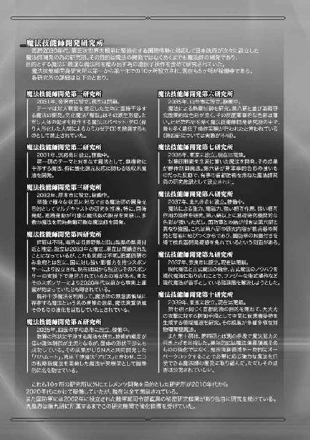
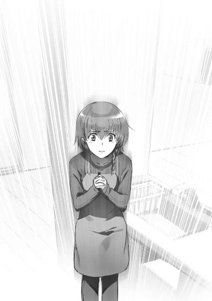

| 魔法科高校の劣等生(24) エスケープ編〈上〉 (電撃文庫) | |
| 佐島 勤 | |
| KADOKAWA / アスキー・メディアワークス (2018) | |
本書（電子版）に掲載されているコンテンツ（ソフトウェア／プログラム／データ／情報を含む）の著作権およびその他の権利は、すべて株式会社ＫＡＤＯＫＡＷＡおよび正当な権利を有する第三者に帰属しています。
法律の定めがある場合または権利者の明示的な承諾がある場合を除き、これらのコンテンツを複製・転載、改変・編集、翻案・翻訳、放送・出版、公衆送信（送信可能化を含む）・再配信、販売・頒布、貸与等に使用することはできません。


［１］
『トーラス・シルバーは、国立魔法大学付属第一高校三年生、司波達也氏である。日本の方々よ。司波達也氏を説得して欲しい』
七賢人を名乗る怪人のビデオメッセージは、日本だけでなくアメリカでも大きな反響を呼んだ。
魔法の学問的な分野でトーラス・シルバーの名は、『基本コード』の発見者である吉祥寺真紅郎と同じくらい注目されていた。加重系統魔法の基本コード発見以来、特に目立った業績が無い吉祥寺より、飛行魔法を実現したトーラス・シルバーの方を高く評価する向きもある。理論分野では『カーディナル・ジョージ』、技術分野では『トーラス・シルバー』というのがアメリカ魔法学会における一般的な対日イメージだ。
そのトーラス・シルバーの、今まで秘匿されていた素性が明かされた。しかもその正体が吉祥寺真紅郎と同じ高校生。このニュースは、普段は余り魔法に興味を示さない人々の間にもセンセーショナルなものとして注目を集めた。
期待どおりに踊ってくれている大衆の様子を普通のネットで見て、レイモンドは一人、満足げに笑った。根暗な絵面だという自覚はあったが、ハイスクールの友人と一緒に楽しむというわけにはいかない。レイモンドが七賢人だということは、彼と父親であるエドワード・クラークだけが知る秘密だ。ただの友人に、自慢はできない。
そろそろ夕食にするか、と考えてレイモンドがデスクの前から立ち上がったちょうどその時、ホームセキュリティが父親の帰宅を報せた。珍しいな、と感じたのと同時に、昼間の件か、という推測がレイモンドの脳裏に浮かんだ。
父親のエドワードが家に帰ってくるのは一週間に一、二度。用がある時はレイモンドの方から父親のオフィスに出向くのが普通だ。──なお母親は、レイモンドが十歳の時に離婚して出て行った。
帰宅する日も、いつもならばもっと遅い。エドワードの普段と異なる行動パターンと自分の「悪戯」をレイモンドが結びつけたのは、自然な思考と言える。
「ダッド、お帰りなさい」
怒られるだろう。そう予想していながら、レイモンドは自分の部屋を出て、笑顔で父親を迎えた。
「レイモンド、馬鹿な真似をしたな！」
「ごめんなさい」
エドワードの語調は、レイモンドの予想より随分と厳しい。だがレイモンドの謝罪は口先だけのものだった。心の中だけでなく表情にも、まるで怯んだ様子が見られない。
彼は確信しているのだ。父親が、本気で怒っているはずはないと。
「......だが、結果的には好都合だ。未成年のプライバシーを政府の関係者が暴露したとなれば、マスコミや人権団体が余計な騒ぎを起こすだろうからな。司波達也を追い詰める次の一手に悩んでいたところだった」
「ダッドの役に立てて嬉しいよ」
レイモンドが神妙な顔をしていたのは本当に短い間だけだった。エドワードの 責も、その後に告げられた本音も、レイモンドの想定内だ。
責も、その後に告げられた本音も、レイモンドの想定内だ。
民主国家であるＵＳＮＡの政府が、公然と魔法師の人権を侵害することはできない。未成年の権利は尚更だ。だからこそエドワードは、トーラス・シルバーの氏名を公表して日本の世論を誘導するという手段を選べなかった。世論の圧力で司波達也の身柄を差し出させるのが、ＵＳＮＡにとって最も低コストだと見込まれるにも拘わらず。
明らかに政府関係者以外のルートからこの情報が漏洩すれば、ＵＳＮＡ政府がマスコミや人権団体から攻撃を受けることは無い。レイモンドが演じた「七賢人」によるトーラス・シルバーの正体暴露は、このニーズに応えるものだった。
レイモンドは、それを見透かしていた。
「他に、ダッドの役に立てることは無い？」
親孝行をしたいというより、もっと遊びたいという欲求からレイモンドが訊ねる。
エドワードがわずかに両目を細めた。息子の思惑は彼にも分かっているのだろう。それをらなかったのは、「七賢人」に利用価値があると判断したからか。
「近々、日本に行く予定だ」
「ダッドが？」
レイモンドの問い掛けに、エドワードが頷く。
「お前も来るか？」
「良いの？ 行くよ！」
父親の誘いに、レイモンドは二つ返事で頷いた。
◇ ◇ ◇
達也がニュースで「七賢人」の動画を見たのは朝七時のことだ。
そして彼が沈思黙考を止め行動を開始したのは、その三時間後だった。
午前十時。達也が電話を掛けた先は、四葉本家。
『お待たせ。大変なことになっているわね』
以前と異なり、真夜に取り次ぎを依頼して居留守を使われることはなかった。ヴィジホンの画面に現れた真夜は、少しも大変だと感じていない顔で挨拶代わりにそう話し掛けてきた。
「はい。最早消極的な対応では凌ぎきれないと考えます」
自分を弄ぶ意図を持った真夜の言葉に、達也は真正面から応じた。
『......積極的に反撃したいということかしら』
思惑を外されたのが不快だったのか、真夜は軽く眉を顰めている。
「そのご相談をさせていただきたく、お電話いたしました」
真夜が気分を害して見せても、達也の表情は変わらない。彼は愛想笑い一つ見せず、前置きを挿んで本題に入った。
『何か考えがあるのね？』
「はい」
『............』
真夜が薄笑いを消して、画面の中で考え込んでいる。
その姿を見ながら、達也は無言で答えを待った。
『今から迎えを出します。少し早めだけど、お昼をいただきながらお話ししましょう』
真夜からこの指示が帰ってきたのは、秒針が半周程した後だった。
「承知しました」
達也は電話で済ませても構わないと考えていた。だが、話をしに来いというならば否やはない。達也は画面の中の真夜に向かって恭しく一礼した。
◇ ◇ ◇
達也が四葉本家に到着したのは十一時半のことだった。
迎えに来た花菱兵庫が、そのまま達也を母屋の奥に案内する。
大晦日に後継者指名が行われた食堂はすぐにでも会食が始められる状態になっていたが、真夜の姿はまだ無かった。達也は今更、真夜の威光を恐れたりはしない。しかしこの家の最高権力者を待たせることにならず、安堵していたのも事実だった。
達也が席に着いて五分もしない内に、真夜が姿を見せた。
「お待たせしてごめんなさいね」
「いえ、滅相もありません」
食堂に入ってきた真夜を、達也は椅子から立ち上がって迎える。
「そう」
鷹揚に頷き腰を下ろした真夜に続いて、達也も椅子に戻った。
二人の席は向かい合わせ。会話をし易いように、テーブルも大晦日より小さな物に取り替えられていた。
真夜の背後には葉山が、達也の背後には兵庫が立っている。
食事の支度は葉山の合図で入室した女性使用人の仕事だ。
コース料理ではなく一汁三菜だったのは、給仕で話が遮られるのを避ける為か。
「どうぞ召し上がれ」
「頂戴します」
真夜に促され、達也が料理に箸を付ける。無論、彼の神経は真夜に向けられたままだ。
「今回のことは、私も予想外でした」
「自分もです」
だから急に話し掛けられても、まごつくことは無い。
「達也さんは彼のことを知っていたのですよね？」
「レイモンド・クラークをですか？ ご報告したとおり、直接話をしたことはありませんが」
パラサイト事件が一応の解決を見た後、達也は事の顚末を報告書の形で真夜に提出した。その中にはレイモンド・クラークによる情報提供の件も漏れなく記載されていた。
「レイモンド・クラークとエドワード・クラークの関係には、気づいていなかったのかしら」
「迂闊でした。継続的に情報を提供すると申し出ておきながら、その後、何のコンタクトも無かったものですから」
レイモンドは達也に送ったビデオメッセージの中で、『僕は今後、継続的に、君に必要な情報を提供しようと思う』と告げていた。だがその口約束が果たされることは無かった。
「忘れていたと？」
「思い出さなかったという意味では、そうです。『フリズスキャルヴ』の存在も記憶の片隅に放置してしまいましたが、もっと真剣に調べておくべきでした。コンタクトしてきた時点でトーラス・シルバーの正体はレイモンド・クラークに知られていたと思われますが、彼が使っているツールについて詳細が判明していればこうして不意を突かれることはなかったと後悔しています」
「......過ぎてしまったことは、仕方がありません」
真夜の応えに不自然な間が生じる。達也は「おやっ？」と思ったが、
「仰るとおりです」
表面的には、神妙に一礼するだけで済ませた。
「それより達也さん」
だが真夜にとって、その一瞬の狼狽は誤魔化さなければならなかったもののようだ。彼女はいきなり、話題を変えた。
「封印はどうしたのかしら？ 見たところ、解除されているようだけど」
「十文字殿との対決に当たり、解呪しました」
達也は慌てることも怯むこともなく、真夜の問いに即答する。
それに対して、真夜の口から出て来た言葉は達也を責めるものではなかった。
「解呪？ 解除ではなくて？」
真夜が訝しげに首を傾げる。自分の聞き間違いを疑っているような顔だ。
「はい。誓約そのものを解除しました」
達也は相変わらず、恐れも躊躇もない口調で真夜の問いに答えた。
「無茶をしたわね......」
真夜が呆れ声を漏らす。
「無茶をせずに勝てる相手ではありませんでした」
「貴方なら封印状態でも勝てたのでは？」
真夜の声に非難の色が混じる。だがそれは達也の無茶を案じるものだ。何故か、誓約の勝手な解除を咎めるものではないように見えた。
「現に勝利したのだから、間違いではなかったのでしょうけど」
「恐れ入ります」
真夜の真意が奈辺にあるか確証を持てなかった達也は、余計なことを言わず頭を下げるに止めた。
「さて......。そろそろ本題に入りましょうか」
それに満足したのか、あるいはそろそろ頃合いと思ったのか。真夜が達也に反撃プランを説明するよう求める。
達也はまだ食べ終わっていなかったが、いったん箸を置いた。
「ＦＬＴ本社で記者会見に応じる許可を、頂戴したく存じます」
「貴方が自ら矢面に立つと言うの？」
真夜が軽く目を見張る。
「はい」
「記者を相手に、何を話すつもりなのかしら」
真夜が達也へ、探るような眼差しを向ける。
「恒星炉を使った海水資源化プラントの開発計画を発表するつもりです」
「恒星炉というと、貴方が開発を進めていた常駐型重力制御魔法式熱核融合炉ね？ どんなプランなのかしら」
「Extract both useful and harmful Substances from the Coastal Area of the Pacific using Electricity generated by Stellar-generator の頭文字を取って『ＥＳＣＡＰＥＳ計画』と名付けました」
ここで達也は初めて真夜に、彼が本当に目指しているプランを打ち明けた。
「......中々面白いわね。達也さんはそのＥＳＣＡＰＥＳ計画で、魔法師の独立国家建設を目指すつもりなの？」
「国家からの分離独立は意図していません。魔法師だけで衣食住全てを賄うのは、能力面から考えて非現実的です」
「自治権も要求しないのかしら」
「政府を無用に刺激しても、デメリットしか無いと考えます」
「随分と子供らしくない考え方ね」
真夜はおかしそうに目を細め、片手で口を隠した。
声を出さずに笑われているのだが、真夜の表情に達也は嫌な印象を持たなかった。
「建前として保証されている魔法師の権利が本当に守られるようになれば十分です」
「その履行を政府から勝ち取る。それが達也さんの目的なのね」
「はい。その為の手段として、実質的な自治権を手に入れる可能性は否定しませんが」
遂に堪えきれなくなったのか、真夜が楽しそうに声を上げて笑った。
「......そうね。制度としての自治権では、一般市民の皆さんが反発するに違いありませんものね」
真夜は笑いを収めて、達也の目を真っ直ぐのぞき込んだ。
「達也さんのプランは分かりました。成算は十分にあると私は判断します」
私は、をわざとらしく強調した真夜の真意を、達也は誤解しなかった。
「叔母上のお考えだけでは、許可できないということですか？」
「ええ、そのとおりよ。でも、分家の皆様の許可が必要という意味ではないわ」
達也が真夜の目を無言で見返し、言葉の続きを待つ。
「我が四葉家には特に親しくしていただいているスポンサーがいらっしゃいます」
「東道閣下ですね。お名前だけは存じ上げています」
「あらっ、そうなの」
真夜は意外そうに声を上げ、すぐに満足げな笑顔で頷いた。
「だったら話が早いわ」
真夜が煎茶で喉を湿らせる。彼女が自分の正面から外してテーブルに置いた湯吞みを、葉山が新しい物に取り替えた。
「達也さんが今の話を自分で東道閣下に説明して、閣下のお許しを得ることが条件よ。閣下のご都合は私の方でうかがってあげる」
「分かりました。お手数をお掛けします」
達也は何の恐れ気も見せず、了解の言葉と共に一礼した。
「とはいえＦＬＴにも準備があるでしょうから、仮の予定を決めておきましょう。四日後の金曜日、朝十時からでどうかしら」
「自分は差し支えありません」
今回の騒動で、高校生としても企業の研究者としても特務士官としても予定表が空白になっている達也は、真夜の質問に即答した。
「閣下のご都合がつかなければ記者会見は延期。閣下のご了解が得られない場合は中止になるけど」
「やむを得ないと理解しています」
「そう」
達也の従順な態度に、真夜は笑顔で頷いた。
◇ ◇ ◇
真夜との打ち合わせが終わってすぐに、達也は伊豆の別荘へ戻った。最初から泊まる予定ではなかったが、引き留める者がいなかったのもまた事実だ。
大晦日以来、達也に対する使用人たちの態度は大きく変わった。だが本家で暮らしたことが無い所為か、人望は乏しいようだ。
「......達也さん本人は、そんなことなんて全く気にしていないでしょうけど」
彼女のプライベートスペースである書斎で、真夜は無意識に思考の一部を声に出して漏らした。
彼女の独り言は、すぐ傍にいる葉山にも聞こえていたはずだ。
だが葉山は真夜の呟きに関して何もコメントせず、紅茶のカップをテーブルに置いた。
「葉山さん......」
「はい、奥様」
真夜の声音は独り言と然して変わらぬものだったが、葉山は慌てることも戸惑うこともなく彼を呼ぶ声に応えた。
「達也さんのお話......どう思いました？」
「達也様のお話と言われますと、誓約の件でございましょうか。それとも記者会見の件でございましょうか」
「どちらもですけど......そうね、まず誓約を独断で解呪したことについて、葉山さんの意見を聞かせてください」
「然様でございますな......。私めが愚考いたしますに、特に問題は無いかと存じます」
「封印そのものを解除したことに、問題は無かったと？」
真夜は意外感を隠せぬ声で、葉山に改めて訊ねる。
「恐れながら、達也様が次期当主様の婚約者となられたことで、封印はその役目を終えたのではないかと」
「あの子の封印は、四葉家に従える為のものではないわよ？」
「存じております。しかし奥様。無礼を承知で敢えてうかがいますが、今の達也様が魔法を暴走させる恐れがあると、本気でお考えでしょうか？」
誓約の完全な解除。それは達也が、自分の魔法技能を常時、百パーセント発揮できるようになったということ。マテリアル・バーストを自由に使用できるようになったということだ。
そもそも達也に掛けられた封印は、マテリアル・バーストの暴発を恐れてのものだった。
ただ一人の少年の怒り、悲しみ、憎悪で、どんな戦略核ミサイルも凌駕する破壊力を持つ魔法が世界中のあらゆる場所に、瞬時に襲い掛かる。地球自体は破壊されなくても、その上に暮らす生物は容易に滅ぼされてしまうだろう。人間も、例外ではない。
そんな事態の到来を防ぐ為に、四葉家は達也の力を封じた。
だがその封印は完全なものではなかった。四葉家は、ただ一人で世界に対抗し得る力を捨てなかった。その力を惜しんだ。
一定の手続きを取れば、達也はマテリアル・バーストを自分の意志だけで放つことができる。誓約の封印はあくまでも、達也が自分の理性的な意志によらず、衝動的に破滅の魔法を行使してしまうことを予防する為のものだ。彼が自分の魔法をコントロールできなくなった場合に備えるものだ。
しかも誓約が魔法技能を縛ってしまうのは、達也一人ではない。達也を縛る術式は、深雪の魔法力で維持される仕組みだった。誓約は達也の力の一部を封じると同時に、深雪の力を大量に消費し続けていた。
達也が自分の魔法を意志の制御下に置いている限り、誓約は不要なもの。
不要なだけでなく、達也と深雪、二人の強大な魔法師の力を殺ぎ、四葉家の戦力を低下させてしまう有害なものだと言える。
真夜は葉山から思い掛けない問い掛けを受けて、すぐには答えを返せなかった。
「魔法を制御する達也様の技量は、この四葉でも一、二を争うもの。おそらくは世界でも最高水準と申せますでしょう」
「......そうね。少なくとも、私より上でしょう」
真夜の自己評価に、葉山は是とも否とも言わなかった。
「深雪様の御身に万が一のことでもない限り、達也様が魔法を暴走させることなどありえないと思われます」
「そして深雪さんに万が一のことがあれば、誓約でも暴走を抑えられない......。葉山さんはそう言いたいのね」
「御意。故に四葉家は、何に代えても深雪様の御身をお守りしなければならないと考えます。私が申し上げるのも僭越ではございますが」
「良いわ。事実ですもの」
真夜はティーカップに手を伸ばし、それを途中で引っ込めて大きくため息を吐いた。
「大きすぎる力というのは、本当に厄介なものね。利用しているつもりでも、結局こちらが振り回されてしまう。隔離したつもりでも、いずれ無視できなくなる」
「実在の脅威を無かったことにはできません。妥協するか、葬り去るか、それともこちらが屈服するか。脅威の元となる力を取り上げぬ限り、相手を屈服させても一時的なものにしかなりません」
「葉山さんが言うとおりね。相手が持つ力を取り上げない限り、屈服させても解決にはならない。その力が相手の存在と不可分のものである場合は、葬り去るしかない」
「妥協できないのであれば、ですな」
「一般論としてなら、妥協による問題の先送りは選択肢の一つなのだけど......。このケースでは難しいでしょうね。あの魔法の脅威に曝されているのは世界中の国家なのだから」
「達也様の暗殺を目論む輩が出てくるとお考えなのですか？」
葉山がそう訊ねながら、冷めてしまったティーカップの中身を取り替えた。
「実行段階に入っている勢力もあると思うわ」
今度はティーカップを手に取って、唇を当てる寸前に真夜はそう答えた。
「それは一大事でございますな」
真夜が横目で葉山の表情を窺う。
真夜の予想に反して、葉山は笑みを浮かべていなかった。
真夜は何故か、反論しなければならない気分になった。
「達也さんを暗殺なんて、できるわけがないでしょう」
「私もそう思います。達也様は事実上、不死身です。ですが深雪様は違います」
真夜がちょうどテーブルに置いたティーカップが、カチャリと耳障りな音を立てた。
「......深雪さんが達也さん暗殺の巻き添えになると？」
「四葉家が最も警戒すべきリスクかと存じます」
葉山の指摘に、真夜が黙り込んだ。
深雪の身は、他ならぬ達也が守っている。今は場所的に離れているが、そんなことは達也にとって妨げにならない。達也の守護は、距離を超えて作用する。
魔法の本体である魔法式そのものを霧散させてしまう魔法技能。
まだ死んでいない限り、致命傷でも無かったことにしてしまう異能。
達也が守っているのだから深雪の身は安全だと、自分が安心しきっていたことに、真夜は改めて気づかされた。
だが言うまでもなく、達也は万能ではない。
十文字克人との戦いも、決して楽勝ではなかった。
達也は克人の防御型ファランクスを無力化できなかった。彼はあらゆる魔法式を分解し霧散させてしまう技能を持っているが、あらゆる魔法を無効化できるわけではない。
達也は克人を倒すのに、中性子線の照射という物理的な手段を用いなければならなかった。照射と同時に中性子バリアを使えなくしているから、中性子線を防御することはできない。だが躱すことはできる。そして『バリオン・ランス』は達也にとっても魔法演算領域に高い負荷が掛かる魔法であるが故に、躱されてしまうと大きな隙を曝すことになる。
達也本人はどんな攻撃を受けても死ぬことはないだろう。だが致命傷を負う攻撃を受けて深雪をかばいきれないというケースが、無いとは言い切れない。もしかしたら、そんな攻撃が可能な魔法師が、世界の何処かに隠れているかもしれない。
いや、「もしかしたら」ではない。達也はアンジー・シリウスの荷電粒子砲によって片手を失う大ダメージを受けた。──今では再生医療が発達しているので、「再成」の異能が無くても時間を掛ければ回復していただろうが。
それ以外にも、達也は宗谷海峡でベゾブラゾフのトゥマーン・ボンバを完全には無効化できなかった。霞ヶ浦基地からの遠隔照準だったことは理由にならない。また、先日の戦いでバリオン・ランスをあらかじめ用意していなかったら、克人に敗北していた。
「......達也さんを守ることが深雪さんを守ることにつながり、延いては達也さんの魔法を暴走させないことにもつながると葉山さんは言いたいのね？」
「誓約による封印を受けた状態でも、達也様が最終的に遅れを取ることは無いと思われます。しかし達也様の御力を制限して深雪様をお守りする余裕を削ってしまうのは、マテリアル・バーストの暴走を防ぐという本来の趣旨に反するのではないかと」
「そうね......。葉山さんの言うとおりかもしれません」
真夜が肩の力を抜いて椅子に背中を預けた。
「達也さんの魔法を暴走させない為という建前を尊重するならば、力を制限することはむしろ逆効果とも言えるわね」
真夜に向かって、葉山が恭しく一礼する。
「良いでしょう。誓約の解呪については追認します」
不問ではなく追認。
葉山が微かに眉を動かして意外感をのぞかせた。
「貢さんや冬歌さんが口喧しく騒ぐかもしれないけど、度が過ぎるようでしたら私からお話しして分かってもらいます」
「かしこまりました。ですがなるべく、奥様のお手を煩わせないようにいたします」
「ええ、御願い」
真夜と葉山の間では、これで達也が勝手に封印を取り除いた件は済んだことになった。
「ところで、ＥＳＣＡＰＥＳ計画の方はどう思いました？」
「感服いたしました」
葉山らしからぬ感情が露出した声音に、真夜が意外感を覚えて振り向く。
真夜の隣で、葉山はセリフどおりの表情を浮かべていた。
「随分と評価しているのね」
「エドワード・クラークのディオーネー計画は、責任ある立場の魔法師にとって反対するのが難しい理想的なプロジェクトでした」
「確かに全人類の為という理想を掲げられては、逆らうのが難しいわね」
人類がこのまま増加すれば間違いなくぶつかる、地球の空間的な限界と地下資源の不足。それを解決するプランが提示されたのだ。
その為に魔法の力が必要だと言われれば、貢献を拒めない。たとえそれが魔法師の人生を生け贄に捧げることになろうとも、拒否すれば人類に対する裏切りの汚名を着せられてしまう。
プロジェクトの成否に関わりなく。
「しかし達也様のご計画は、別の解決策を示すものです。エドワード・クラークの謀略に真っ向から立ち向かう為の、大義名分となりましょう」
「プロジェクトの壮大さの点で、達也さんのプランはディオーネー計画に一歩も二歩も劣っていると思うのだけど」
達也が持ち込んだプランに葉山が傾倒しすぎているよう、真夜には見えたのかもしれない。彼女は水を注すように皮肉な反論を返した。
「その分、リアリティがあるかと」
しかし葉山は浮ついた気持ちで達也のプランを褒めちぎっているのではない。
「資本家は、より現実的な利益を見込める投資案件を好むものかと存じます」
あくまでも、反撃手段としての有効性を評価しているのだった。
「......一般論としては、そうでしょうね」
やや負け惜しみの感がある表現で、真夜も葉山の意見を認めた。
「奥様が仰せのとおり、夢物語としてのインパクトは弱いと存じます。ですが国家以外から資金を集める説得力では勝っていると思われます」
「閣下もそうお考えくだされば良いのだけど」
達也が東道青波を説得できるかどうか。
達也の思惑どおりに現在の行き詰まった状況を打破できるかどうかは、そこにかかっている。
「ところで奥様」
葉山は真夜の呟きに答えず、今度は彼の方から話題を変えた。
「何かしら」
「先程のお話ですが、私は妥協が必ずしも不可能とは考えておりません」
「達也さんの魔法が世界に脅威を与えていることについて？」
「はい。達也様は先程、魔法師が実質的な自治領を手に入れることを否定されませんでした。達也様が一個人ではなく、国家を代表する方々と同等の立場になれば、妥協は成立するのではございませんでしょうか」
◇ ◇ ◇
謎の怪人によってトーラス・シルバーの正体が暴露されたその日。
第一高校には、朝からマスコミが押し掛けていた。さすがに登校時間には間に合わなかったようで、学校に行く途中で囲まれてマイクを突きつけられるというような被害を被った生徒はいない。だが二限目が始まる頃には、一高の出入り口は正門も通用口もマスコミで固められていた。
記者は達也に対する取材を要求したが、学校側はこれをことごとく拒否。凶悪な違法行為を犯したわけでもないのだから、未成年のプライバシー保護の重要性を考えれば当然のことだが、達也が登校していないことも喋らなかったのは評価されるべきかもしれない。
もっとも、取材を拒否されたくらいで、マスコミは諦めたりしなかった。いや、学校の許可など最初からどうでも良かったのかもしれない。午前の授業が終わり昼休みになっても、大勢のマスコミが一高の敷地を取り囲んでいた。
「まだいますよ......」
「というより、増えているみたい」
生徒会室の窓から正門の方を見ていた泉美の言葉に、同じく外の様子をうかがっていた香澄がうんざりした声で応じた。
「通用門の前も記者であふれてるよ......」
ほのかが弱気な声でそう付け加える。席に座ったままで外の様子が分かるのは、光を屈折させて視線を通しているからだ。本当は校則違反の魔法無断使用なのだが、今ここにそれを咎める者はいなかった。
「問題は下校時ね」
眉を顰めて深雪が呟く。
「警察を呼ぶ？」
雫の提案に、深雪は小さく頭を振った。
「それは先生方がお考えになることでしょう。わたしたちの一存では決められないわ」
「そうか」
単なる思いつきだったのか、雫は自分の意見に拘らなかった。
「ですが会長。私たちだけの力では、無事に帰れないと思います......」
詩奈が心細げな表情で深雪に訴えた。もしここに侍郎がいれば「俺が守ってやる」という類いのセリフを恥ずかしげもなく使って詩奈を元気づけただろうが、彼は生徒会に苦手意識を持っているようで、この部屋に近づこうとしない。
詩奈が「私たちだけの力で」と言っているのは無論、魔法を使わないことが前提だ。建前論では、自衛の範囲ならば魔法の行使も許される。だが魔法使用に関わる正当防衛の判定は、かなりハードルが高い。「報道の自由」を盾に取られたならば、こちらが未成年ということを考慮しても、魔法の行使が合法だと認められる可能性はかなり低いだろう。「ジャーナリズム」を聖域視する悪弊は、所謂「有識者」を中心に根強く残っている。
深雪もその恐れは感じていたようだ。
「何か対策を考える必要があるわね」
彼女は深刻な表情でそう応えた。
◇ ◇ ◇
言うまでもないことだが、マスコミが押し掛けた先は第一高校だけではない。トーラス・シルバーの勤務先であるフォア・リーブス・テクノロジーにも大勢の記者が押し掛けた。未成年に対する配慮が必要無いからか、露骨にカメラを向けるリポーターチームも多かった。おそらく彼らは、報道機関の肩書きがなければ業務妨害の被疑者になっていただろう。
ただそんな強引な取材も、午後には一段落した。
記者やリポーターの中で、いきなり良識が目を覚ましたわけではない。
午後二時。ＦＬＴからマスコミに、取材申し込みに対する回答があったのだ。
「──四日後にトーラス・シルバーの記者会見を開きます。金曜日の朝十時、当ビルの一階でトーラス・シルバーの記者会見を実施しますので、本日はお引き取りください。お引き取りいただかない方は記者会見の入場をお断りさせていただきます。また、当社のみならず国立魔法大学付属第一高校の生徒さんから取材に関してクレームがあった場合も、関係者の入場をお断りすることがあります」
報道陣の中には、広報担当の若い女性従業員が精一杯声を張り上げて告げたこの言葉に反発する者もいた。不満を唱えた人間の主張は、多少表現にバリエーションはあっても中身は同じ。
「報道の自由を侵害するのか！」
この決まり文句だ。
しかし意外なことに、同じ立場であるはずの他の記者から制止が掛かった。
ここで騒ぎを起こして記者会見が中止にでもなったらどうしてくれるんだ、という理由だ。他社を出し抜くより、横並びでも良いから確実にスクープを取りたいと考える報道マン──ただし男性だけではない──の方が圧倒的に多かった。
ＦＬＴ本社に押し掛けたマスコミは、最後に仲間内で暴言を応酬しあったものの、それ以上は大きな騒ぎを起こさずに引き上げた。
ＦＬＴ開発本部長室。この部屋は達也、深雪兄妹の父親である司波龍郎の個室だ。名目上、ＦＬＴの最大株主である龍郎には、社長よりも豪華な執務室が与えられている。
龍郎はその部屋に、ＦＬＴの真の支配者である四葉本家の使者を迎えていた。
「マスコミのお相手、ご苦労様でした」
二十代半ばの青年が、丁寧な口調ながら自然に見下す態度で龍郎を労った。
「いえ、私は広報に指示しただけですから」
自分より二十歳近く年下の若造に顎で使われて、龍郎は人並みに反感を覚えていた。だがそれを、表に出すことはしない。たとえ使者が相手であろうと、ここで本家に逆らってみせる気概は、龍郎には無い。
「ご謙遜を。中々見事なご差配でした。その調子で金曜日も余計なトラブルが起こらぬよう、お手配願います」
「お任せください」
「結構。では私はこれで」
満足げに頷き、花菱兵庫が本部長室を後にしようとする。
「......一つ、お聞かせ願えますか」
その背中を、龍郎が躊躇いがちに呼び止めた。
「何でしょうか」
兵庫は薄らと笑みを浮かべて、その声に振り向く。
龍郎は兵庫の視線から目を逸らした。
兵庫は龍郎を急かす言葉を口にしない。
龍郎は秒針が半周程した後、ようやく逡巡を振り切って口を開いた。
「本家は、あの子をどうするつもりなんですか」
「あの子、とは？ もしや達也様のことですか？」
喉と舌の働きを妨害する葛藤でもあるのか、龍郎は唇を震わせるだけで兵庫の問いに答えない。
「さあ？ 私は新参の若輩者ですので、御当主様がどのようなお考えを持っていらっしゃるのか測りかねます」
慇懃な口調の裏に「お前はその若輩者以下だ」という蔑みが隠れている。龍郎が気色ばんだのは、それを敏感に察したからだ。
「それに達也様は四葉家次期当主様のご婚約者。そのお役目は、龍郎殿が気になさることではないかと」
「わ、私はあの子の父親です！」
龍郎が声を上げたのは、親子の情を蔑ろにされたからか、それとも屈辱に耐えられなくなったからか。
「存じております。それが何か？」
そのどちらであるにせよ、兵庫は龍郎の言葉をまるで取り合わなかった。
「深雪様が次期当主に決まり、達也様がその婚約者になられたことで、龍郎殿の役目は終わりました。良かったではありませんか」
「な、何を......」
「龍郎殿は達也様がお嫌いだったのでしょう？ もう親子として振る舞う必要は無くなったのですよ？」
龍郎は兵庫に、何も言い返せない。
「それから、一つご忠告を。深雪様は貴方のご息女ですが、達也様は違います。達也様の本当の母君は御当主様。達也様の本当の御父上も、龍郎殿、貴方ではありません」
それは達也を深雪の婚約者にするために、真夜が考え出した設定だ。
だが今はその設定が真実ということになっている。
「龍郎殿が達也様に親として愛情を注いでこられたのであれば、本家もその絆を尊重したことでしょう。ですが貴方は、達也様を疎んじていた。今の関係は、龍郎殿が望まれていたものでもあるはずです」
龍郎に反論の言葉は無かった。
彼は兵庫の言葉を否定できなかった。
◇ ◇ ◇
第一高校を取り囲んでいたマスコミは、午後の授業が終わる頃には随分減っていた。最も多かった時間帯の、約半分だ。
取材自体を諦めたのではない。ＦＬＴの女性従業員が「第一高校で問題を起こしたらトーラス・シルバーの記者会見から締め出す」と脅しを掛けた成果だ。
しかし逆に言えば、脅しに屈しない記者やリポーターが半分近くいたということ。もしかしたら、指示が届いていないだけの者も多いのかもしれないが。
そして半減していても、生徒を怖がらせるには十分な人数を保っていた。
今回一高に群がっている記者の中に、魔法師はいない。魔法を使える一高生が魔法を使えない「一般人」を怖がるのはおかしい、そう感じる「一般人」は少なくないだろう。
確かに、力ずくならば──暴力に訴えれば、一高生は報道陣を簡単に蹴散らせる。だがその結果、犯罪者として社会からはじき出される。奇跡的な幸運で罪に問われなかったとしても、恐れられ忌み嫌われ排斥されていく未来が容易に想像できる。
一高生は、自分たちが人間社会で生きていくしかないことを理解している。だから、社会の一員として生きていく未来を壊す「ペンの暴力」を恐れる。
「強行突破ってわけにはいかないよね」
「香澄ちゃん、物騒なことは言わないでください」
「だからできないって言ってるじゃん」
泉美にそう応えて、香澄は再度、校門の外へ目を向けた。
彼女たちがいるのは正門へ続く一本道への、前庭からの入り口だ。記者に見つからないよう、並木の陰に隠れて外の様子を窺っている。
「それは......あっ、深雪先輩」
校舎の中から出て来た深雪に気づいて、泉美は香澄との会話を中断した。香澄はマスコミの監視を続けたままだが、二人の背中に隠れるようにして怖々と外の様子を窺っていた詩奈は、泉美につられて校舎へ振り返っている。
「深雪先輩、如何でしたか？」
水波を連れた深雪が、普通に会話できる距離まで近づいたのを見計らって、泉美がそう問い掛けた。
「残念だけど、校長先生は警察の介入を避けるおつもりのようね」
残念というより「やっぱり」というニュアンスの口調で、深雪が泉美に答える。それは、学校としてマスコミに対処するつもりが無いことを意味していた。
「じゃあ、大人しくマスコミに捕まるしかないんですか......？」
詩奈が泣きそうな表情で深雪に不安を訴える。
「マスコミの人たちも、手荒な真似はしないと思うけど......」
深雪の口調には、自信が欠如していた。まともな記者ならば暴力を振るったりしない。だが記者の中に、狂信的な反魔法主義者が紛れていないとも限らないのだ。
「深雪」
前庭を横切って近づいてきたほのかが深雪に声を掛けた。彼女の背後には雫と幹比古が続いている。
「ほのか、通用門の方はどうだった？」
「ダメ。大勢待ち伏せてて、素通りできそうにない」
「柄が悪そうな連中が何人も混じっています。通用門を使うのは、避けた方が良さそうですね」
ほのかの回答を、幹比古が補足した。
幹比古の言葉を裏付けるように雫が頷いている。
「会長」
ほのかたちとは反対側の方から、部活連会頭の五十嵐と十三束、琢磨、それに部活連には関係無いはずの侍郎が近づいてきた。
「五十嵐会頭」
五十嵐の声に、深雪が振り返る。
こんな時であるにも拘わらず、五十嵐は硬直してしまう。
深雪の美貌に、五十嵐よりも耐性がある十三束が代わりに口を開く。──ちなみに最も動揺が見られなかったのは、十三束でも琢磨でもなく侍郎だった。侍郎は最初から深雪に目を向けておらず、詩奈の側に駆け寄って「大丈夫か？」と話し掛けている。
「全クラブに活動中止を通達しました。何時でも帰れる状態で待機させています」
十三束の報告に、深雪は「ご苦労様でした」と労りの言葉を返した。
「でも、どうするんですか、会長？ 全員で一斉に下校しても、捕まる生徒は出てくると思いますし......。一層の事、運動部の男子を動員して壁を作らせましょうか？」
「男子生徒を『人間の盾』になどできません。それは男女差別ですよ、七宝君」
男子を差別する琢磨のアイデアを、深雪が優しくたしなめる。
なお雫は琢磨の提案を「良いアイデア」と思ったのか、深雪のセリフに不満げな表情を浮かべていた。
琢磨のアイデアを支持しない者も他にアイデアは無いようで、深雪に指図を求める眼差しを向けている。
前庭から校門に続く並木道の入り口、校門からは並木の陰になっている前庭の端で、同級生と下級生の、ある意味無責任な視線を受けて、深雪はため息を吐くような表情を浮かべた。
それは彼女たちに不満を覚えているというより、「仕方が無い」という諦めを表すものだった。
「......わたしが話をします」
「深雪先輩がですか!?」
泉美が悲鳴混じりに驚きの声を上げた。
「ええ。マスコミの皆さんに、帰っていただけるようお願いしてみます」
「危険です！」
「私も反対」
泉美に続いて雫が深雪を止める。泉美のように興奮していない分、雫の制止には説得力があった。
「わたしも本当は嫌だけど、このまま何もしないというわけにはいかないでしょう？ 生徒会長なのだから」
「でも深雪と達也さんは特別な関係」
「そうね。だからこそという面もある」
「逆だよ」
「逆？」
「深雪が達也さんの元妹で、今は婚約者だということは、調べれば分かる。マスコミには、そんなに難しいことじゃない」
雫は珍しく饒舌だった。
深雪がマスコミの前に出て行くということに、それだけ切迫した危機感を懐いているのかもしれない。
「それが普通じゃないってことは分かるよね？ 悪くすれば、深雪一人の問題じゃなくなるよ」
「......魔法師全体のイメージダウンにつながると言いたいのかしら？」
「最悪、その可能性はゼロじゃない」
深雪は明らかに気分を害している。ある意味で、自分と達也の婚約にケチをつけられているからだ。
雫はそれに気づいていたが、だからといって引き下がろうとはしなかった。
むしろ端で見ていたほのかや幹比古の方がオロオロしていた。
「深雪の責任感は理解できる。でも今回は止めた方が良い」
雫の父親である北山潮は大企業グループのオーナーだ。潮くらいのレベルになるとマスコミも遠慮して、露骨な攻撃を仕掛けてくることは滅多にない。だがそれでも、マスコミ対策には常に気を配ってきた。
そんな父親の姿を、全てではないにしろ見てきたからだろうか。雫はこの場にいる誰よりもマスコミの力を恐るべきものと評価しているようだ。
「そうは言っても......」
このまま何もしないわけにはいかない。
深雪はきっと、そう続けるつもりだったのだろう。
しかし彼女は不意に報道陣の背後に目を向け、そのまま固まってしまう。
「......深雪先輩？」
泉美が声を掛けても、深雪は目を見張って硬直したままだ。泉美の声が、意識に届いていない。
異変を感じて、全員が深雪の見ている方へ顔を向ける。注意力を傾けた所為か、深雪以外の者にも自走車が接近しているのが分かった。
「まさか......？」
ほのかが呟く。
誰が近づいてきているのか分かったのは、もう彼女だけではなかった。
不意に、深雪が校門へ向かって駆け出そうとした。
だがその腕を、背後から水波が摑む。
深雪がハッと振り向いた。我を忘れていた彼女の瞳に自制の光が戻る。
深雪が水波に微笑みかけ、水波が深雪の腕を放して一礼する。
深雪が落ち着いた足取りで歩き出し、そのすぐ後ろに水波が続いた。
ほのかと雫、香澄と泉美、詩奈と侍郎が目を見合わせて深雪と水波を追い掛ける。
最後尾は、残念ながらあぶれてしまった幹比古だ。十三束や琢磨は、並木道に入らず前庭に残った。
一方、校門付近に集中して屯していた記者、リポーター、カメラマンは、電気自走車の接近に気づいて道を空けた。交通妨害を理由に逮捕というのは最近の警察が好む手口で、微罪とはいえ明確な違法行為なのでマスコミも文句を言いにくい。
それに運が良ければエレカーの入構に乗じて校内に侵入できるかもしれない。そんな思惑も彼らにはあった。
エレカーが校門前で止まる。
わずかに遅れて、深雪たちが校門の手前で立ち止まる。
彼女たちに注目した記者やリポーターは例外的な少数だった。
エレカーから降りてきた人影が、報道陣の間にざわめきを走らせる。
「......何故......？」
深雪が「お兄様」というフレーズを吞み込んで、「何故」とだけ呟く。
エレカーの運転席から姿を見せたのは、達也だった。
「司波達也さん、ですね？」
報道関係者にとっても、今日この場に達也が現れるのは完全に予想外の出来事だったのだろう。
一高の制服を着た達也は、変装どころか帽子も被っていない。
達也のことを取材にきた報道マンならば、見間違えるはずがない姿だ。にも拘わらず、真っ先に達也へ話し掛けたリポーターの口調は、半信半疑のものだった。
「そうですが、何か？」
一方、達也の返答は落ち着いたものだった。白を切っているという印象すらない自然な口調だ。
「......貴方がトーラス・シルバーというのは事実なんですか？」
マスコミの取材を受ける心当たりなどないと言わんばかりの無表情にリポーターは一瞬怯んだが、すぐに気を取り直して持ち前の図々しさを発揮した。
「報道機関には既に連絡が行っていると思うのですが」
達也の回答は、「はい」でも「いいえ」でもなかった。
「金曜日にＦＬＴの本社でトーラス・シルバーの記者会見が行われます。疑問があれば、その席でお訊ねください」
達也の声はマイクを突きつけてきたリポーターだけでなく、かなり遠くまで届くものだった。
報道陣の一番後ろの列まで。
閉ざされた校門の向こう側まで。
「記者会見だって？ また思い切ったことを......」
感心しているのか呆れているのか、おそらくその半々の声で幹比古が呟く。
深雪は目を見張り口に片手を当てて立ち尽くしている。
達也が深雪に目を向けた。幹比古の声を耳にするまでもなく、彼は門扉の向こう側に立つ深雪たちに気づいていた。
「道を空けてください」
校門の前を塞いでいる記者の集団に要求する達也。声を荒げたわけでも大声を張り上げたわけでもない。その声に威圧的な響きは、一切無かった。
それにも拘わらず、彼の行く手を遮っていた記者とリポーターはよろめくように後退った。
彼らの一部は自らの弱気を恥じるように、顔を赤くして達也の前に立ち塞がった。
「貴方がトーラス・シルバーということで良いんですね！」
「どちら様ですか？」
達也はその決めつけに、感情のこもっていない問い掛けを返した。
「はっ？」
彼の質問は、記者にとって思い掛けないものだったようだ。
だが彼は数秒間間抜け面を曝した後、誇らしげに大手新聞社の社名を名乗った。
「そうですか。フリーの方でないならば、会社から聞いているはずですが」
「何をですか!?」
その記者は見たところ三十前後。十歳も年下の少年が余裕ある態度を崩さないことが気に食わないのだろう。記者は喧嘩腰で達也に反問した。
記者を見返す達也の瞳には、苛立ちや怒りどころか、蔑みも憐れみも浮かんでいない。喩えて言うなら、路傍の石ころを見る目付きだ。
その視線に曝されて、記者は逆上するのではなく、おののいた。記者は達也に、不気味な、別種の生物を見るような目を向けた。もし、取り敢えず無害で人間に良く似た、けれども明らかに人間とは異なるエイリアンに遭遇したなら、人はこんな目付きをするに違いない。
「一高の生徒から取材に関してクレームがあった報道機関の方は、トーラス・シルバーの記者会見をご遠慮いただく結果になります。ＦＬＴはそうお報せしたはずです」
報道陣に動揺の波が広がる。どうやらここにいる記者の半分は、今達也が告げたことを聞いていなかったようだ。
「たった四日です。その程度待たせても、報道の自由を侵害したことにはならないと思いますが」
記者は達也の言葉に納得したわけではなかった。
反論に詰まったのでもなかった。
記者の叫びは、より大きな破裂音によって未発に終わった。
破裂音は、銃声。
報道陣に混じっていた女性リポーターが、黄色い悲鳴を上げる。
達也に食って掛かっていた記者が尻餅をついた。もし達也が銃弾を躱していたら、自分が撃たれていたことに気づいて腰を抜かしたのだ。
達也は記者に背を向けている。彼はコマ落とし映像のように、瞬時に振り返って銃弾を摑み取っていた。
胸の前で握り締めた左手を達也が開く。そこから、拳銃の弾がぽろりと落ちた。
達也のすぐ横にいたリポーターが目をむいて絶句する。その斜め後ろにいた記者は、達也が素手ではなく両手に黒い手袋をはめていることに気づいたが、それで驚きが無くなるわけではなかった。たとえ高性能の防弾手袋をはめていたとしても、それだけで銃弾を摑めるものではない。
記者とリポーターとカメラマンが形作っていた人垣が割れる。狼狽の叫びを上げ、彼らの中に紛れ込んでいた暴漢が持つ拳銃の射線から逃れようと、押し合い圧し合いしている。足をもつれさせて転び、同輩やライバルに蹴られたり踏まれたりしている報道マンの姿も見られた。
暴漢は報道関係者に目もくれていない。
血走った目はただ達也を睨み付けている。
拳銃を固く握り締め、達也へ向けている。
銃声が連続する。
達也は飛来する銃弾のことごとくを摑み止めた。
そこには言うまでもなく、からくりがある。
達也は分解魔法を使って、銃弾そのものではなく前に進む銃弾の運動量（のベクトル）を、全方位に分解した。
ところで、力を幾ら分解しようと、作用点に掛かるのはその合力だ。銃弾を受け止める手に負うダメージが減るわけではない。──物理的には。
だがそもそも、飛んでいる銃弾の運動量を外部から力を加えることなく分解するなどという「現象」が物理的ではない。銃弾が持つ運動量を分散しているという「情報」が、作用点だけでなく何も作用する相手が無い空間にも力を伝えるのだ。その結果、銃弾はほとんど停止した状態で達也の掌に受け止められていた。
しかしそれは、魔法師にしか実感できない理だ。物理的にあり得ない、それ以前に、人間にはできるはずのない「銃弾を摑み取る」という真似を目にして、報道陣に紛れていた反魔法主義テロリストはパニックを起こした。
スライドが後退したまま戻らなくなっているにも拘わらず──つまり、弾切れだ──、達也に銃口を向けたまま何度も引金を引く。
明らかに判断力を失った隙だらけの状態だが、達也はテロリストを取り押さえようとはしなかった。まるで、自分が襲われているのを記者やリポーターに見せつけるように。
達也の目は無意味に引金を引く道化に向けられていたが、彼の意識は共犯者に対する警戒に割かれていた。だが何時まで待っても、仲間が出てくる気配は無い。
どうやら単独犯だったようだ。達也はそう判断し、テロリストに向かって一歩踏み出した。
その男は、奇妙な叫び声を上げた。おそらく悲鳴なのだろうが、男のことが見えていなければ野犬の遠吠えと勘違いしたかもしれない。いや、「負け犬の遠吠え」か。
達也が普通に歩くペースで二歩目を踏み出す。
男は弾が切れた拳銃を達也へ投げつけた。
達也が躱すまでもなく、拳銃は彼の顔の横を通り過ぎた。
テロリストはさっきより幾分人間的な叫び声を上げながら、ポケットに右手を突っ込み、短いナイフを取り出した。
握りこんだ拳の前に刃が突きだす、プッシュダガーと呼ばれるタイプのナイフだ。言うまでもなく持ち歩くのは違法だが、拳銃で武装していたことを考えれば今更だろう。
刃渡りが短いといっても、十分人を殺し得る武器だ。だが達也はその刃をまるきり無視する格好で、三歩目を踏み出した。お互いにあと一歩踏み出せば手が届く間合いに入る。
最後の一歩を詰めたのは、テロリストの男だった。プッシュダガーを達也の腹目掛けて突き込む。
顔を狙わなかったことに意外感を覚えながら、左手で男の右手首を摑み、いったん右にいなしてから左に返した。
男は簡単に体勢を崩し、ひっくり返った。
一高に雇われている警備員が、詰め所からようやく姿を見せた。門扉をわずかに開けて、その隙間をすり抜ける。
そこから校内に侵入しようとする非常識な報道マンは、さすがにいなかった。
警備員が駆け寄ってくる。
達也は警備員が到着するまで、プッシュダガーをもつ男の右腕を踏みつけていた。
思い出したように、報道陣の間にざわめきが走る。
「今、魔法は？」「反応が無い」
こんな内容の会話が、言葉遣いを変えてあちらこちらから聞こえる。
彼らは達也が、魔法を使わずに暴漢を取り押さえたことに驚いていた。
銃弾を受け止めた際には魔法を使っていたのだが、彼らが持つセンサーでは達也の魔法を感知できなかったのだ。
魔法師が、魔法を使わずに拳銃の弾を摑み取り、ナイフを持った男を無傷で捕らえた。
記者もリポーターもカメラマンも、それをどう理解して良いか分からず立ち尽くす。
その隙に達也は校門を潜り、深雪と水波を連れ出した。
彼は二人を後部座席に乗せ、自分は運転席に座って車を出す。
報道陣はエレカーの前から反射的に跳び退いた。
「......お兄様、何時の間に免許を取られたのですか？」
訊きたいことは色々あるはずだが、深雪が真っ先に質問したのはこの、比較的どうでも良いことだった。
今でも四輪免許の取得条件は満十八歳以上。だが昔と違って抜け道がある。業務上の必要が認められ、かつ事業者の保証がある場合は、二輪免許と同様に義務教育終了をもって四輪免許も取得可能だ。例えば克人は、十文字家が経営する土木建設会社の業務に必要という名目で一高入学直後に普通乗用車の運転免許を取っていた。この免許には運転に当たって、同乗者も必要無い。もっとも、検定試験は通常のものよりも遥かに難しくなる。
達也はこの特例を使っていなかった。トーラス・シルバーとして働いていることは秘密なので──現下の状況では「秘密だった」と言うべきかもしれない──「事業者の保証」という条件をクリアできなかったのだ。
「伊豆に移ってすぐに。やはり、四輪の方が何かと便利なことが多い」
「存じませんでした......。教えてくださっても良いのに。お兄様、水臭いです」
「ハハッ、すまん」
可愛く拗ねた深雪に、達也が振り返って軽く謝罪する。自動運転中だからこそできる真似だ。
この他愛も無い遣り取りで、深雪はようやく気分がほぐれたようだった。
「......何故、迎えに来てくださったのですか？ マスコミの前に姿を見せるというリスクを冒してまで」
「生徒会長だからと、深雪がしなくても良い苦労をしていると思ったからな。こんなつまらないことでお前に負担を掛けるのは忍びない」
「お兄様......」
深雪が何時もの様に陶酔の表情を浮かべ、水波が不自然に表情を消す。
「それで、本当の目的は何だったのですか？」
深雪は軽く酔っているような声で、達也の真意を訊ねた。
鳩が豆鉄砲を食ったような表情で、水波が瞬きしている。彼女はまさか深雪が、達也の言葉の裏を疑うとは思っていなかった。
「心外だな。俺は噓など吐いていない」
セリフとは裏腹に、達也の声は笑っている。
「ですが、それだけではないのでしょう？」
深雪の声も笑みを含んでいるが、誤魔化される気は無いようだった。
「マスコミに釘を刺す意図はあった。今後も無遠慮に嗅ぎ回っていると、大事な取材ができなくなるぞ、と。俺がマスコミを恐れていないと見せつけるのも目的だった。だがあくまでも本命は、今日、一高がこうむっている迷惑行為を解決して深雪の負担を減らすことだ」
「......分かりました。そう理解しておきます」
深雪は言外に「納得してはいませんよ」と告げながら、いったん矛を収めた。
◇ ◇ ◇
達也の思惑どおり、一高を取り囲んでいた報道陣は姿を消した。「速やかに」と言える程引き際は良くなかったが、達也のエレカーが去って三十分もした頃には記者もリポーターも全員引き上げていた。
立ち去ったふりをして物陰に隠れ、通り掛かった一高生を捕まえて取材を強要する等という通り魔じみた真似をする記者もいなかった。一高の生徒は──生徒だけでなく職員も──マスコミに煩わされることなく無事に下校できた。
やはり、トーラス・シルバーの記者会見から締め出されるという脅しは有効だったようだ。
深雪を調布の新しい自宅まで送った後、一高を見張っていた者からそれを確認して、達也は伊豆に戻った。なお第一高校を見張らせていたのは、達也ではない。ただ彼はその手配をした者から情報を得るコネを持っていた。
伊豆に戻った達也は、一足先に別荘で達也の帰りを待っていた情報提供者と居間で向かい合った。
「兵庫さん、今日は色々とご苦労様でした」
「達也様こそ、お疲れ様でございます」
椅子に腰掛けている達也に対して、兵庫は立ったままだ。無論達也が立たせているのではなく、兵庫が頑なに座ろうとしないだけである。また達也が「兵庫さん」と呼んでいるのは親しくなったからではなく、兵庫と同様に四葉家の執事をしている彼の父親と区別を付ける為だった。
「いえ、俺は深雪を迎えに行っただけですから。ああ、暴漢の情報もありがとうございました」
暴漢の情報というのは、達也を銃撃したテロリストの件だ。実を言えば達也は、兵庫から前以て一高に押し寄せる報道陣の中に暴漢が紛れていると知らされていた。
「あれでよろしかったのでしょうか」
「そうですね。一人しかいなかったのは予想外でしたが」
「深雪様が流れ弾でお怪我をされるようなことがあってはと、あらかじめ間引きしておきましたが......。余計な真似でございましたか」
「間引きしていたんですか。なる程......。いえ、その判断は妥当だと思います」
「恐縮です」
兵庫が胸に手を当てて一礼する。
「達也様が銃撃されたのを見て、マスコミの間にも多少動揺が見られるようです。彼らの内部では、反魔法主義者と武装テロリストを短絡的に結びつける論調も見え始めた、という報告を受けております」
「少しは、わざと撃たせた甲斐があったようですね」
「人が撃たれる光景は、銃に慣れていない者にとっては、たとえ被害者が仇敵であってもショッキングな代物です。特に今回、達也様は銃弾の形を残したまま受け止められましたので、凶悪な印象はより強いと思われます。影響はこれからじわじわと浸透していくのではないかと存じます」
「怪我をした方が良かったのでしょうか」
「そうでございますね。しかし達也様が血を流されると深雪様が悲しまれますので、お止めになった方がよろしいかと」
「確かに。深雪が逆上して魔法を暴走させるようなことがあっては、逆効果だ」
達也は微かに失笑し、兵庫は瞼を閉じて軽く一礼した。
二人が話しているように、達也がテロリストに撃たれたのはわざとだ。テロリスト自体はやらせではないが、もし襲撃計画が無かったら二人が自作自演していた可能性もある。
「当初の予定では、魔法師に纏わり付いていたら反魔法主義者による襲撃の巻き添えを食う可能性があると、理解してもらうだけで十分だったんですが」
「その警告は伝わったと思われます。反魔法主義者が憎むべきテロリストであることも、記事になるよう手を回す所存です」
「お任せします」
「かしこまりました」
再度胸に手を当ててお辞儀をする兵庫は、裏工作を企み実行するのが楽しいのか、嬉しそうな表情を浮かべていた。
◇ ◇ ◇
伊豆には達也が滞在している別荘の他に、四葉家の所有物件がもう一つある。別荘で静養する深夜を、煩わせない範囲で見守る為の物だった、小さな一軒家だ。
深夜は四葉の中でも唯一の特殊な魔法資質の持ち主だった。魔法の過剰行使により魔法師として十分に働けなくなっても、その特殊な因子を狙って誘拐を企む不届き者が予想された。この小屋は、それを防ぐ為の物だった。
実際に深夜の誘拐を目的とした襲撃が三回あってその全てを撃退したので、小屋を建てたのは取り越し苦労ではなかった。しかし深夜が死んだ後は、別荘と共にこの小屋も時々手入れするだけで基本的に放置されていた。
別荘は先日から達也が滞在しているが、小屋の方にも久々に使用の機会が訪れていた。
「お嬢様。家具、器具備品とも、問題無く調っております」
「ご苦労様」
鷹揚に頷いたのは四葉分家の一つ、津久葉家長女、津久葉夕歌だ。
「荷物を置いたら、すぐに取り掛かりましょうか」
情報戦を仕掛けてきたエドワード、レイモンド、二人のクラークへの対応を相談する為に達也が真夜と昼食を共にした日の夕暮れ。彼女がこの小屋を訪れたのは、無論、遊びが目的ではない。四葉家当主に命じられた任務を果たす為だ。
津久葉家が真夜に命じられた仕事は、達也が滞在する別荘からマスコミを遠ざける「人払いの結界」の構築。この手の術式は古式魔法の得意分野で、本来、現代魔法向きではない。しかし津久葉家は四葉一族の中でも特に精神干渉系魔法を得意としている。威力を下げる代わりに持続時間を引き延ばした条件発動型の魔法で、古式の術者に劣らぬ結界を張り巡らせることができる。
監視小屋に到着したのが夕暮れ時だった為、結界敷設が完了する頃にはすっかり暗くなっていた。魔法を使えても夜目が利くわけではない。暗視は、魔法とはまた別の技能だ。
「お嬢様、あちらに不審者がいます」
「えっ、何処？」
だから夕歌がその人影に気づかなかったのは、仕方が無いことと言えた。
「......ああ、あれ。達也さんがいる別荘をのぞいているみたいね」
その不審人物は闇に紛れる濃紺のシャツとズボンを身に着けて、首から双眼鏡をぶら下げていた。立っている場所から見ても、夕歌の言うとおり達也の動向を探りに来たのだと思われる。
ところで夕歌の部下が何故今になってその男に気づいたのかというと、結界が完成した影響だった。夕歌が指揮して構築した結界は、達也が滞在している別荘を認識できないよう思考に干渉するものだ。周公瑾や陳祥山が使っていた鬼門遁甲と原理的には同じ。目は正しく視認しているが、意識はそれを見えていないと考えてしまう。
では、結界が完成する直前まで別荘を見張っていた者にはどう影響するのか。突如、別荘が消えてしまったように感じることになる。気配を隠すことが疎かになっても、無理はないだろう。
逆に言うなら、この不審者は動揺さえしなければ、夕歌たちから自分の存在を隠しとおすだけの技量を持っているということになる。
「捕らえなさい。殺しては駄目よ。大きな怪我もさせないで」
「了解しました」
夕歌の側にいた魔法師が、護衛役の一人を残して闇の中に散った。
「どうせ達也さんは気づいているんでしょうけど......」
夕歌は達也がいる別荘の方向へ目を向けた。窓から漏れてくる灯りが、別荘を闇の中に浮かび上がらせている。
達也がのぞかれていることに気づいていなかったはずはない。実害は無いと判断したから放置していたのだろう。あるいは、摑まえても後の処理が煩わしいと考えたからか。
その男が潜んでいる場所は別荘の敷地内だ。この辺りは広く四葉家の──正確には四葉家が密かに支配している不動産会社の──私有地になっている。だが特に柵のような物は設置していない。不法侵入を口実に拘束しても、気づかなかったと開き直られれば逆にやり過ぎを咎められるだろう。
「......面倒なことは私たちに押しつけるつもりなのでしょうね」
不審者だけでなく、自分たちの存在にも達也は気づいているはずだ。
小者の処理に自分の手を汚す必要は無いとでも考えているのだろう。
可愛げの無い遠い親戚の顔を思い浮かべて、夕歌はため息を吐いた。
◇ ◇ ◇
「御当主様、結界の構築は滞りなく完了しました」
『ご苦労様』
不審人物の訊問を完了した夕歌は、小屋に戻って真夜に報告の為の電話を掛けていた。
「それから達也さんを見張っていた曲者を発見しましたので、捕らえて訊問しました」
『まあ』
真夜は軽く目を見張っているが、唇の両端は笑みの形に吊り上げられている。
『素性は分かりましたか？』
「富田家の術者でした」
『百家の富田......。あそこは魔法協会の専属のような立ち位置でしたね』
「はい。達也さんを監視していたのも、魔法協会の差し金でした」
『そう......』
真夜が艶やかな笑みを浮かべてゆっくりと頷く。
夕歌は背筋に凍りつきそうな寒気を覚えていたが、神妙な表情は何とか維持した。
「富田家の術者は、危害を加える意図は無かったと供述しました。魔法協会はどうやら、達也さんが何処かに行方をくらますと考えていたようです」
『そうですか』
「術者の身柄は押さえてありますが、如何いたしましょうか」
『解放しなさい。記憶の処理も必要ありません』
「......よろしいのですか？」
『ええ。私たち四葉家は決して身内を見捨てない。そのことを魔法協会が思い出してくれると良いのだけど』
──白々しい。
夕歌は思わず、心の中で呟いていた。口に出さなかったのがせめてもの分別だ。
去年まで達也がおかれていた境遇を思い出せば、不適当な感想とは言えない。
いや、過去のことだけではない。十文字家当主との決闘は、四葉家次期当主の夫になる者として一人で立ち向かわなければならない戦いだったと夕歌は考えている。だが陸軍情報部の謀略に対し四葉家として実質的な対抗手段を執らなかったことについては、随分薄情だと夕歌は感じていた。
『以上ですか？』
「任務とは関係の無いことなのですが」
真夜の問い掛けを受けて、夕歌は余計なことなど何も考えていなかったかのように、すぐ応えを返した。この種の強かさは、次期当主候補だった四人の中で夕歌が一番だ。
『構いませんよ』
「達也さんに掛けられていた封印が消失した件を、母が気に掛けております」
『気に掛けている、とは控えめな表現ね』
真夜に混ぜ返されても、夕歌は反駁しなかった。
夕歌の母親の冬歌は自分の魔法技能にプライドを持っている。魔法師であれば誰でもそういうところはあるが、彼女はその面が特に顕著だ。
それを知っていれば、誓約を破られて冬歌がヒステリックになっているということくらい、真夜でなくても推測はたやすい。
「御当主様は、問題無いとお考えなのですか？」
反論する代わりに夕歌は、真夜の真意を端的に訊ねた。
『誓約を解呪したこと？ そうねぇ、全く問題が無いとは思わないけど......もう、仕方が無いのではなくて？』
「仕方が無い、ですか......」
真夜の答えは夕歌の意表を突いた。
『原理的に解呪が可能だとは分かっていたけれど、まさか達也さんが深雪さんを危険に曝してまで実行に踏み切るとは予想できなかったでしょう？』
「ええ。それは、そうです」
誓約のシステム上、魔法そのものの抹消は術式を維持していた深雪に大きなダメージをもたらすことが予測されていた。そのリスクを達也が冒すというのは、確かに予想外だった。
『それにもう、達也さんに誓約をかけ直すことはできないのだし』
真夜の指摘を、夕歌は認めざるを得なかった。
誓約はそれをかけられる者だけでなく、術式を維持する者にも大きな負担を与える。解呪の際の反動だけではない。誓約が作用している状態では、日常的に術式維持者の魔法技能を損ない続ける。
深雪の魔法技能を低下させる魔法を、今の達也が許容するはずはない。
『できないことに拘っても、現実逃避にしかならなくてよ？』
真夜のこの発言は、誓約を破られて逆上している夕歌の母親に対する、一般論の皮を被った辛らつな批判だった。
「そう、ですね......。仰るとおりだと思います」
それを理解しながら夕歌がこう応えたのは、上下関係でそうせざるを得なかったからではなく、「現実逃避」という言葉に納得してしまったからだった。
［２］
四葉分家の一つ、新発田家の次期当主・新発田勝成の職業は、表向き防衛省の事務官である。勝成の魔法戦闘力は極めて高いのだが、自分が魔法を使って戦うのではなく魔法をどう使って戦うべきかを考える業務に従事している。
南米、アフリカ、中央アジアと立て続けに大きな戦闘が続いているが、東アジア、西太平洋地域は一昨年の秋以来、小康状態が続いている。その御蔭で防衛省の職員も、このところ比較的早い時間に退庁できていた。
トーラス・シルバーの正体でマスコミが大騒ぎした──魔法との関わりが薄い一般市民は大して話題にもしていなかった──翌日、十九時前に庁舎を出た勝成は、自宅ではなく都心のホテルに向かった。海外にまで名前が知れ渡っているような一流クラスではないが、ビジネスマンの間では食事が美味くセキュリティがしっかりしていると好評なホテルだ。
待ち合わせ相手は、指定されたレストランですぐに見つかった。と言っても個室方式の店だから、部屋を間違えなければすぐに分かるのは当然だ。
「やあ。呼び出して済まないね」
勝成の父親と同年代の、平凡なスーツ姿の男性。その中身を知っている勝成にも、ただのビジネスマンにしか見えない。
「いえ。父の都合がつかなかったものですから。代理人を寄越した非礼をお許しください」
「いやいや。当日いきなり会いたいなどと非常識なことを言った私の方に非はある。謝罪するのはこちらの方だよ」
「そう仰ってもらえると助かります、黒羽さん」
今彼が言ったように、勝成が待ち合わせていた相手は同じ四葉分家の一つ、黒羽家当主・黒羽貢だった。
貢に促されて、勝成が席に着く。
貢も同時に腰を下ろしている。
勝成を案内してきたウエイターが、テーブルにやって来る。
貢と勝成は酒と軽いおつまみだけを注文してウエイターを下がらせた。
「さて、と」
貢が椅子に座り直し、テーブルに軽く身を乗り出す。
「今日、来てもらったのは他でもない。彼のことを相談したかったんだ」
「達也君について、ですか」
貢は「彼」とぼかしたが、勝成はあっさり達也の名を口にした。
それで顔を顰めるような隙を、貢は見せなかった。
「そうだ。昨日、遂にトーラス・シルバーの正体が一般に知られてしまったわけだが、あれについて勝成君はどう思うかね」
「エドワード・クラークがトーラス・シルバーの名前を出した段階で、避けられなかったのではないでしょうか。四葉家にとって好ましくないことではありますが、達也君に責任があるとは思えません」
勝成の回答は、貢が期待していたものではなかった。
「しかしそもそも、彼が一高に進学せず本家で大人しくしていれば、避けられた事態だと思わないか？ エドワード・クラークのディオーネー計画はトーラス・シルバーの実績ではなく、彼が去年の春に行った恒星炉実験を念頭に置いていることが明らかだ」
勝成は貢の言葉に頭を振った。
「達也君が一高に進学したのは、彼の意思ではありません。ガーディアンという四葉家の制度上、避けられないことでした」
「勝成君は知らないかもしれないが、横浜事変の後、御当主様は彼に本家で謹慎するよう命じられた。しかし彼はそれを拒んで一高に通い続けた。あの時点で表舞台から消えていれば、目を付けられることはなかったはずだ」
「いいえ。形は変わっていたかもしれませんが、マテリアル・バーストを使った時点で達也君が国際政治の裏舞台に引っ張り出されるのは時間の問題となりました。そしてあの時、マテリアル・バーストを使わないという選択肢は無かった。あの魔法が無ければ、日本は甚大な被害を被っていたでしょう」
「そうだろうか。九州には八代家もいる。海戦ならば五輪家が出てくるだろう。海上戦闘に限って言うなら、澪嬢の『深淵』でなくても五輪家は大きな戦力となる。大亜連合は強敵だが、マテリアル・バーストが無くても負けていたとは思わない」
「それでも、です。それでも、あの局面でマテリアル・バーストを使わないという選択肢は無かった。戦争は、勝てば良いというものではないのと同様、負けなければ良いというものではありません。国土を蹂躙されればその分、次の戦いに投入できる戦力が少なくなる。戦力の補充に時間が掛かることも、その為には時間だけでなく経済力が必要となることも、マテリアル・バーストで大打撃をこうむった大亜連合のその後を見ればお分かりのはずです」
貢に反論の言葉は無かった。その程度のことは、言われなくても分かっているのだ。
「──今後も彼のあの魔法が国防には欠かせないという、君の考えは理解した。ならば尚更、アメリカに彼の身柄は渡せない」
貢が攻め口を変えた。
「はい」
勝成はただ、肯定の一言だけを返した。
「ならば彼を、四葉家の奥深くで保護すべきではないか？ 急死したことにすれば、ＵＳＮＡ政府も諦めるだろう」
初めて賛同を得た貢が、勢い込んで畳み掛ける。
「人間主義者に殺されたことにすれば、魔法師に対する世論の矛先を鈍らせることもできよう」
「そうですね」
「ならば」
「黒羽さん」
貢は分家の意思を一つにして、真夜に達也の監禁を要求するつもりだった。だが共謀を迫ろうとした貢の言葉を、勝成が強い口調で遮った。
「私は、分家当主の皆様が達也君に過剰な敵意を向ける理由が理解できませんでした」
できませんでした、と過去形で語る勝成。その意味を貢は、この段階で既に悟っていた。
「だから先日、父に確かめました。中々白状しようとしませんでしたが、最終的には話してくれました」
「......そうか」
その話は、貢たちの中だけに留めておく約束だった。だが新発田家当主の理を、貢は非難する気になれなかった。
いや、できなかった、と表現した方が正しいだろう。相手が達也本人であるとはいえ、真っ先に秘密を漏らしたのは貢自身なのだから。
「黒羽さん。私は、父やあなた方に賛同できません。達也君を敵視するのは、間違っている」
個室の外からウエイターの声が掛かった。
二人はいったん会話を中断し、冷酒のグラスが並んでウエイターが退室したのを見届けて、話を再開した。
「──だが、あの男は危険だ」
「一人の人間が世界を破滅させる力を持つ。一人の権力者が、世界を破滅させるスイッチを持つ。一つの政府が、世界を破滅させる戦力を持つ。この三つは、特に前者二つと後者一つは性質が異なるように見えますが、本質的には同じものです。どんなに民主的な国家であっても、戦力はすぐに行使できる状態になっています。そうでなければ意味が無い。民主的な手続きを取っている内に国そのものが滅ぼされてしまっては、戦力を保持する意味がありませんから。シビリアンコントロールは、恣意的に軍を動かせば失脚すると権力者を牽制するものであり、いったん行使された戦力の継続的な行使を止めさせるものです。どんな場合でも事前に、完全に戦力の行使を止めることができる制度は、純粋な自衛すら不可能にしてしまう」
「それでも、歯止めが全く無いよりは、あった方が良いだろう。たとえ牽制にしかならないとしてもだ」
「仰るとおりです。だから大量破壊兵器を独裁者に持たせてはならない。軍事力はシビリアンコントロールの下にあるべきだ。ですが、黒羽さん。民主的な選挙で選ばれた権力者であっても、戦略核ミサイルの発射キーを回すことは何時でもできるんですよ。鍵が複数に分けてあっても、権力者は有権者の支持を背景に、その所持者を選べるんですから」
「......それは極論だ」
「達也君が世界を滅ぼすというのも、極論です」
「そこまで言うなら、独裁者が大量破壊兵器を使用するというのも極論だろう」
「いいえ。独裁者は、組織内部に自分を止めようとする者がいないから独裁者なんです。そこが個人とは違う。個人の心の中には介入できない。個人が何を思い何を決断しても、他人がそれを止めることはできない。ですが独裁者でない個人ならば、止めるよう働き掛けることはできる。思い止まるよう、牽制することができる。説得することができるのです」
「......個人は、独裁者よりも民主的政府の権力者に近いと言いたいのか」
「一人で生きている、いえ、一人で生きていると思い込んでいる個人は、独裁者に近いでしょう。しかし、誰かと共に生きることを望む者、人は独りでは生きられないと知っている個人は、独裁者にはなれない。自ら独裁者になろうとしない限りは。あるいは、独裁者に祭り上げられない限りは」
「............」
「黒羽さん。達也君を独裁者にしてはならない。真に世界の未来を案じるならば、彼を独りにすべきではないのです。失礼ながら、あなた方のやろうとしていることは逆効果としか思えません。この国の戦力を損なうだけではない。この世界の未来まで損なおうとしている」
「......それは、君の考えか？」
「この場に父ではなく私が来た。この事実から、お察しください」
勝成が席を立った。
「黒羽さん。どうか、現実的になってください」
椅子に座ったままの貢にそう言い残して、勝成は琴鳴が食事の支度をして待つマンションへの家路についた。
◇ ◇ ◇
貢と勝成が喧嘩別れのような格好になった頃。
京都の魔法協会本部では、協会会長の十三束翡翠が個室のデスクで頭を抱えていた。
彼女の目の前には、またしてもわざとらしく書面で届けられたＵＳＮＡからの要望書。
そこにはエドワード・クラークの訪日計画と、トーラス・シルバーこと司波達也との面会をセッティングして欲しい旨、書かれている。
「あ─────っ、もう！ 私にどうしろって言うのよ!?」
翡翠がデスクの天板に向かってヒステリックに叫んだ。
「何をすれば良いかなんて分かってるわよ！ 司波達也さんとの面会をセッティングすれば良いんでしょう！」
頭を抱えたまま、自分自身にツッコミを入れる。翡翠の思考は煮詰まりすぎて鍋底に焦げ付いている状態だ。
「分かっていますよぉ......」
遂に翡翠は、デスクに突っ伏した。
「でも私にはそんな権限、無いんですけど」
デスクに顔を付けた状態で、翡翠は深く、長いため息を吐く。
「お断り......なんて、できるはずありませんよねぇ......」
翡翠は気怠そうに身体を起こした。
「今週の土曜日......。急な話ですけど、それ以上に嫌な予感がするのは」
彼女は脇机に置いた小型ディスプレイに目を向けた。そこには、最近のニュース一覧が表示されている。
「前日にトーラス・シルバーが記者会見？ よりによって前の日に？ 一体、何を話すつもりなのよ？」
絶対にろくでもないことだ、と翡翠は心の中で決めつけた。
「何で私が会長をやっている時に限って......」
彼女の頭は、再びデスクの上に沈んだ。
◇ ◇ ◇
達也の許に真夜から電話があったのは、夜遅く、二十一時を過ぎてからだった。
「こんな時間にごめんなさいね」
「いえ、こちらこそわざわざお電話いただき、恐縮です」
「気にする必要は無いわ。そういうお約束でしたもの」
確かに、東道青波の都合を真夜の方で確かめて連絡するという話になっていた。だが、真夜が直々に電話を掛けてくるというのは、達也の予想外だった。
「東道閣下から、お時間を頂戴できたのですか？」
驚きを押し隠して、何事も無かったような顔で達也はそう訊ねた。
「ええ、そうですよ。明日の夜七時にお会いくださるそうです」
真夜は達也の動揺を見透かしたような笑みを浮かべていたが、敢えてそれを指摘するような嫌らしい真似はしなかった。
「場所は何処ですか？」
「九重寺です。九重八雲さんが立ち会ってくださるそうよ」
達也は今度こそ、驚きを隠せなかった。真夜は「してやったり」と言わんばかりにクスクスと笑っている。
「......ごめんなさいね。そのお話には私もびっくりさせられたものだから。達也さんでも驚くのね。少し安心したわ」
「驚きました。まさか師匠が関わってくるとは」
「閣下と八雲さんは以前から懇意にされている間柄だそうよ。縁というのは不思議なものね」
「そう思います」
口にした返事はあっさりしていたが、達也は内心、大きな驚きと共に強い疑惑を覚えていた。
八雲を達也に紹介したのは風間だ。そこに四葉の意思は介在していない。そのことは風間からも八雲からも直接聞いている。四葉家と独立魔装大隊、第一〇一旅団が四葉家に──十師族に対して懐いている密かな対抗心を考慮すれば、その言葉を疑う必要は無いと思われた。
だが、八雲と東道青波が親しい──どういう種類の「親しい」なのかは分からないが──関係だという情報を加味すれば話は別だ。
達也と八雲は、師弟ではない。最初に引き合わされた時、そう決められた。あくまでも魔法格闘戦の訓練相手であり、八雲の方から教えることはしない。質問は受け付けるが、答えられないこともある。それが八雲の許へ通うに当たっての取り決めだった。
にも拘わらず、達也は八雲から多くのことを教わった。特にパラサイトへの対抗手段として編み出した『徹甲想子弾』は、八雲の協力がなければ会得できなかった。
また、「訊かれたら答える」というスタンスは変わらなかったが、どう考えても「答えられないこと」に該当するはずの知識を達也は八雲から数多く授かっている。
達也はそれを、八雲の気紛れによるものだと思っていた。八雲の為人をまだよく知らない内は、何か企みがあるのではと感じていた。自分を四葉家から引き離して、国防軍の手駒にする方策である可能性も疑った。しかし八雲との付き合いを積み重ねるにつれて、そんな疑惑は霧散していった。
だがそれは、そう思わされていただけだったのではないだろうか？
八雲が一筋縄ではいかない、いや、達也のレベルでは手に負えない曲者であることは分かっているはずだった。それなのに達也は、何時の間にか八雲のことを信頼していた......。
「それでは、明日の夜七時、九重寺にうかがいます。ありがとうございました」
達也は真夜に応えを返す裏側で、そんな風に警戒心を募らせていた。
［３］
レイモンド・クラークが「第一賢人」を名乗ってテレビに登場した月曜日当日こそ、「トーラス・シルバー」は人々の興味の的だった。だが翌日には早くも大衆の関心が薄れ、今日、水曜日には一般人の間でほとんど話題にならなくなっていた。
魔法に関わりのある人々の中では、トーラス・シルバーは知らぬ者がいないという程の有名人だ。
だが実用レベルで魔法を使える者は、成人後の年齢別人口比でおよそ一万分の一。
もっとも、実用レベルの魔法スキルを持たなくても技術者や経営者、政治家、軍人、公務員として魔法に関わりを持つ者もいるから、九十九・九九パーセントの人々が魔法とは無縁に暮らしているということにはならない。
最近は反魔法主義という形で魔法と関わっている人々が目につくようになった。
治安や国防、災害対応で間接的に魔法の恩恵を受けている国民も少なくない。
だがそれでも、大多数の人々は魔法と直接の関係が無い生活をしている。
魔法は現代の社会生活に必須のファクターではない。少なくとも、平和に生活できる社会環境では。だから大衆は罪も無い──いや、罪が定かでもない魔法師が迫害されても、無関心を貫くことができる。無関心でいることに、罪の意識を覚えない。
トーラス・シルバーを名乗っていた一人の高校生がその意思に反する未来を押しつけようとされていても、人々にとってそれは三面記事の一つでしかない。
達也が九重寺を訪れた夜は、世間はまだそんな状況だった。
午後六時四十五分。達也は九重寺の山門に続く階段の前で自動運転のコミューターを降りた。
同行者はいない。一人で来ること、それも東道青波から達也に課せられた条件だった。
コミューターを降りた達也は、見せつけるようにゆっくりと左右をうかがった。実際に彼は、監視者がいれば見せつける──牽制するつもりでわざと目立つ行動をとったのだが、見張っている者の気配は感じられなかった。
少し前から、具体的にはこの小高い丘の麓に差し掛かってから尾行の気配が途絶えていたのだが、間違いではなかったようだ。
偶然ではあるまい。おそらく八雲の弟子が、もしかしたら八雲自身が何か手を打ったのだろう。加減を間違えるような未熟者に客のもてなしを──たとえそれが招かれざる客であっても──任せる八雲ではないから、自分が心配する必要は無いと達也は判断した。
それより心配しなければならないのは自分のことだ。幾ら八雲でも政財界の黒幕として密かに有名な東道青波との面談を邪魔するような真似はしないだろうが、確信は持てない。この場所を選んだのは、達也を試す為かもしれないのだ。
その可能性を考慮して、念の為に十五分も前に到着した。だが八雲が本気になれば、その程度の時間で足りるかどうか、怪しい。悪乗りだけはしてくれるな、と心の中で唱えながら、達也は石段に足を掛けた。
残念ながら、達也の懸念は的中した。
石段の半ば辺りで、いきなり遠近感が狂わされる。石段が巨大化、いや、自分が小さくなっている──幻影を見せられようとしていた。
自分の意識に魔法が働き掛けているのが分かる。こういう継続的な作用の仕方は古式魔法ならではだ。現代魔法はスピードを重視した反面、効果が出るまで持続的に魔法をかけ続けるというノウハウが培われなかった。
達也には今、現実の視界と幻覚の光景が重なって見えている。これは達也が、精神に侵入しようとする魔法式を術式解体の要領で押し返しながら、その魔法式の記述内容を読み取っているからだ。
精神──霊子情報体に働き掛ける魔法でも、魔法式は想子情報体で構築される。精神干渉系魔法には適性の無い達也だが、魔法の発動が完了する前の魔法式の状態であれば、相手の魔法を防御することも術式に干渉することもできる。彼に仕掛けられた魔法は、時間を掛けて術中に落としていくタイプのものだったが、達也でなければ既に幻影の虜となっていただろう。
しかし彼は、幻影魔法に掛からなかった。それはもう術者にも──八雲にも分かっているはずだ。九重八雲は、通用しなかった手にいつまでも固執するような甘い相手ではない。幻術が通用しないと分かったならば、次は──。
（──実体による攻撃）
達也が心の中で呟くのと同時。
左右から、カマイタチが襲い掛かってきた。
真空の刃ではない。極薄の板状に固めた空気で細かく砕いた石の粉を支えて、それを高速で飛ばす魔法だ。
石段の左右は開けている。木立どころか、低い生け垣も無い。文字通り、何も無い闇の中から飛来する四本のカマイタチを、達也は瞬時かつ同時に分解した。
無論、八雲の攻撃がこれで終わりであるはずはない。たとえ本気でなくても、幻術とカマイタチの二段構え程度で済ませるような善良な性格ではないのだ、九重八雲という人物は。
達也が今いる石段は、そんなに長い物ではない。今夜は晴れていて月も出ている。夜であっても普通なら山門の中まで見えるはずだが、今そこは暗く塗り潰されている。
その闇の中から、矢が降ってきた。
弓弦の鳴る音は聞こえなかった。魔法で音を消した気配も、矢その物を飛ばす魔法の気配も感じられない。音を立てずに矢を射る技術があるのか、音を立てないように作られた弓なのか。
頭の片隅でそんなことを考えながら、達也は矢の雨に意識の主な部分を向けた。
矢を集合体として分解。
魔法が実際に作用して、達也はようやく、矢に実体が無いことに気づく。
（情報体偽装魔法!?）
単なる幻影ではない。「情報」を「視」る視力を欺く、情報の次元に干渉する幻術。リーナが得意とする『仮装行列』と同種の魔法。
実体物で攻撃してくる、という予測の裏をかかれた格好だ。
達也は五感を研ぎ澄ませて石段を駆け上る。
前方で気配が揺らいだ。
達也が立ち止まるでもなく、ゆっくりと周囲を警戒しながら進むのでもなく、突っ込んで来たことに意外感を禁じられなかったのか。
この戦いの場で、達也は初めて「敵」の所在を摑んだ。
研ぎ澄ませた聴覚が、衣擦れの音を捉える。
研ぎ澄ませた嗅覚が、衣服に染み込んだ香の匂いを捉える。
研ぎ澄ませた視覚が、闇の外に踏み出した影の輪郭を捉える。
階段の、上と、下。
下方に位置する達也が明らかに不利な態勢だ。
達也が跳躍する。
足場が無くなることを恐れず、駆け下りてくる敵と同じ高さに並んで蹴りを繰り出した。
敵は上体を屈めて、達也の飛び前蹴りを躱す。
前に跳躍した達也の身体は、そのまま相手を飛び越して石段に着地した。
今度は、達也が上。
だが達也は敵に背中を向けている無防備な状態だ。
研ぎ澄ませた触覚が、空気の流れを捉えた。
背後から敵の突きが迫っている。
達也はフラッシュ・キャストで移動魔法を発動した。
フラッシュ・キャストで発動する魔法は、規模も小さく威力も低い。ただスピードだけが取り柄と言える。
だがわずか六十センチを移動するだけなら、フラッシュ・キャストの出力でも問題は無い。
そして敵の拳を躱す為ならば、六十センチは十分な距離だ。
敵の縦拳突きが三十センチを進むより早く、達也の身体は石段の二段上にいた。
敵の攻撃が不発に終わる。
敵がさらに踏み込むのと、達也が振り返り攻撃態勢を整え終えたのは、同時だった。
達也の手刀が敵の首筋に。
敵の──八雲の拳が達也の脇腹に。
二人の手が、互いに、その寸前で止まる。
「師匠。随分手荒なお迎えですね」
「そろそろ時間だ。行こうか。閣下は既にお待ちだよ」
達也は腕時計に目を落とした。デジタルの文字盤は、午後六時五十分を表示していた。石段を上り始めてから、まだ五分しかたっていないということだ。
たったそれだけの時間で八雲を撃退できるとは、達也には思えない。
おそらく、八雲の方で時間を調整していたのだろう。
達也は今の攻防で、周囲に被害を及ぼさない範囲ではあるが本気を出していた。
だが八雲には予定を気にする余裕があったということだ。
達也は少しの口惜しさと共に、八雲にまだまだ及ばぬ自分を自覚した。
◇ ◇ ◇
達也は埃一つ付いていないスーツ姿で本堂に入った。八雲の「悪戯」で付いた汚れは、『再成』の応用で取り除いている。
八雲が案内したのは奥の間。内陣（本尊を祀る中央奥の部屋）に向かって右側の脇間で、東道青波は待っていた。
寺に相応しく、頭はツルリと剃り上げられている。だが着ているものは、オーダーメイドの高級スーツだ。背筋を自然に伸ばして座すその姿は、肩幅が広く、下半身もがっちりしている。老齢による衰えは隠せないが、若い頃は堂々たる偉丈夫だったに違いない。
一方、首から上、禿頭の下は、異相だった。
灰色の太い眉にどんぐり眼。眉目秀麗というタイプではないが、風格のある顔立ちだ。
ただ、白く濁った左目が相対する者に異様な圧迫感を与える。異相という印象は、この左目によるものだった。
達也もその左目に注意を引きつけられた。彼はすぐに、この老人と今年の正月、正確な日付を言うなら一月四日に、この寺で会っていたことに気がついた。会っていたと言っても達也が帰る途中の東道を背後から見かけ、東道が振り向いて白く濁った左目を達也に向けたという形で、言葉は交わしていない。
「ご挨拶をさせていただいてよろしいでしょうか」
達也は下座に座り、まずは頭を下げた状態でそう訊ねた。
八雲から紹介があるまで黙っていた方が良いかとも思ったが、それではあっという間に相手のペースに吞み込まれてしまうような気がした。
「許す」
東道の返事は、別の人間が口にすれば時代錯誤に聞こえただろう。だが東道の声にそのセリフは、不思議と似合っていた。
「初めまして。司波達也と申します。お目にかかれて光栄に存じます」
「東道青波である。四葉達也。会えるのを楽しみにしていた」
東道は達也に向かって「司波達也」ではなく「四葉達也」と呼び掛けた。
東道に向かって頭を下げたままの達也は、その言葉を浴びて微動だにしなかった。
「面を上げよ。直答を許す」
達也は言われたとおり身体を起こした。
その状態で目を伏せるのではなく、東道と目を合わせる。「直答を許す」とはそういう意味だと、達也は解釈した。
それを咎める声は、東道本人からも八雲からも無かった。
「真夜から聞いた。私に説明したいことがあるそうだな」
「はい」
達也は「お時間を頂戴できますでしょうか」とか「お耳を拝借できますでしょうか」といった常套句を使わなかった。そのような虚礼を東道は求めていないと、直感的に悟っていた。
「聞かせてもらおう」
果たして、東道はすぐ本題に入るよう求めてきた。
「一言で申し上げれば、魔法を利用してエネルギー資源を生産するプラントの建設案です」
達也はそう前置きして、ＥＳＣＡＰＥＳ計画の説明から始める。
東道は途中一度も口を挿まず、達也の話を聞き終えた。
「分かった」
記者会見をエドワード、レイモンド両クラークの仕掛けてきた情報戦に対する反撃手段としたい、というところまで達也の説明を聞いて、東道はそう応えた。
「では、マスコミの前に出ることをお許しいただけますか？」
「許可しよう。其方の計画に協力するよう、私の知り合いに声を掛けても良い」
「ありがとうございます」
そう言いながら、達也は喜びよりも警戒感を覚えた。
話が旨すぎると疑ったのではない。
無条件のはずはない。どんな条件をつけられるのか。無理難題を恐れたのだ。
「ところで、其方に訊ねたいことがある」
「何でしょうか」
達也は表情を動かさずに応えたが、肩透かしにあった感を否めなかった。彼は東道が、すぐに何らかの要求を突きつけてくると心の中で身構えていたのである。
東道はおそらく、達也の心の乱れに気づいていたが、そこに乗じようとはしなかった。
「其方は先程の説明で、政治的な権力を求めないと言った」
「はい」
正確には、プラントの運営を邪魔されなければそれ以上の権限を自分から求めることは無いと言ったのだが、自分から政治的権力を要求するつもりは無かったので、東道の言葉を敢えて訂正しなかった。
「エネルギープラントに限らない。其方の持つ力は、桁違いに強大だ。個人が持ち得る限度を超えているというだけではない。本来であれば、国家以外の組織に許されるものではない」
達也は特に反論しなかった。東道の言うとおりだと、彼自身、本気で思っている。
だからといって達也は、自分の力を捨てるつもりも誰かに委ねるつもりも無いのだが。
「其方はその力を何に使う？ その力で何を望む？」
「快い日々を」
達也が迷う素振りも見せず即答する。
その答えを聞いて東道ははっきりと、不快げに眉を顰めた。
「個人の身に余るその力を、自分の為にのみ使うと申すか。社会の安寧や国家の存続には興味が無いと？」
「社会の安寧無くして快適な生活はあり得ません。また現段階において国家の存在は、社会秩序の維持の為に不可欠だと考えます」
「私的な快事の為ならば、国家に力を貸すことも厭わぬということだな」
「力を貸すなどと偉そうなことを申し上げるつもりはありませんが......。状況に応じて国防や治安維持の為に働くという点は、閣下の仰るとおりです」
「ならば良い。四葉達也」
正面から向かい合った状態で、東道が達也を「四葉達也」と呼んだ。
東道の表情を見て、達也は彼が間違えているのではなく故意にそう呼んでいると悟った。
「其方に求めることはこれまでと同じだ。この国の為、抑止力になってもらいたい」
東道の言葉に、達也は戸惑いを覚えた。
抑止力になれとは、どういう意味なのだろうか。自分が戦略級魔法『マテリアル・バースト』の使い手であることを公表することを求められているのだろうか。しかしそれでは、「これまでと同じ」とは言えない。
「──自分に戦略級魔法師として名乗りを上げろと、お求めになっているのですか？」
達也は思考の袋小路で無駄に時間を費やさず、東道の真意をストレートに訊ねた。
「今はまだ不要だが、それが必要になったならば、そうするが良い」
「では、軍事的脅威が生じた場合にそれを退けよ、という意味でしょうか。例えば一昨年秋のように」
一昨年の十月末、達也は大亜連合艦隊を戦略級魔法で殲滅した。あれと同じ役目を今後も果たせと言われているのだろうか。
「抑止力とは、脅威が現実のものとなる前にそれを断念させる力だ。現実のものとなった軍事的脅威に対抗する力は単なる戦力であって抑止力ではない。抑止力は、使用されないことが望ましい」
しかしこれも、東道の求めるところではなかったようだ。
「分からぬか」
「恥ずかしながら」
実際には、東道が何を言いたいのか全く分からないということはなかった。だが達也は小賢しく推測を並べるより、正解を請う方を選んだ。
「其方にとっては、難しいことではない。恐怖を示して、他国を牽制すれば良い」
なる程、と達也は心の中で頷いた。それは彼が推理した答えと、ほぼ同じだった。
どうやら東道は、達也に魔王の役割を演じさせたいらしい。だがそれは勇者に退治されることが前提の、ＲＰＧの魔王ではない。手を出せば災いが降りかかる、禍神のような恐ろしい超越者だ。
「先程閣下は、抑止力は使用されないことが望ましいと仰いました。しかし相手を恐怖させる為には、威力を見せつける必要があると思われますが？」
「示威の為に必要であれば、再使用もやむを得ぬ。その判断は其方に任せる」
そしてその為には、手段を選んではならないらしい。
達也は最近になって、抑止力は必要悪ではないかと考えるようになっていた。
魔法師の活躍の場を、軍事分野から民生分野にシフトする。
その結果、魔法師が担っていた分の軍事力が低下する。
魔法は物量に、ある程度ではあるが、縛られない力だ。魔法師が戦力を担うことで、小国でも大国の物量に対抗できるという面があった。
魔法師という戦力が欠けたなら、小国は大国の物量に対抗できなくなるかもしれない。それを見た四つの大国が世界を吞み込むべく動き出し、世界が再び戦乱の時代を迎えるという未来を予測することは、残念ながら容易だ。
世界が戦火に包まれる時代が再来すれば、魔法師は再び兵器として駆り出される。魔法師の境遇改善は元の木阿弥だ。
そんな未来を回避する為には、民生転換で失われる魔法師戦力の代わりに自分が抑止力となることも、やむを得ないかもしれない。達也は東道の要求を聞く前から、そう考えていた。
東道は、達也が抑止力として機能すれば、ＥＳＣＡＰＥＳ計画を──魔法師を兵器の宿命から解放する為の第一歩を、黙認するだけでなく後押しもしてくれるというのだ。達也に断る理由は無い。
「閣下の御心のままに」
達也は遠回しな表現で東道の申し出を受ける意思を表明した。
「良いのかい？」
それまで達也と東道の話を黙って聞いていた八雲が、ここで初めて口を挿む。
「君を待っているのは、孤独だよ？」
「構いません」
達也が本当の意味で必要としているのは、ただ一人の人間だ。その一人がそばにいれば、彼が孤独を覚えることは無い。達也の心は、そういう風にできている。
そしてその、ただ一人の人間──深雪が自分から離れていくことは決して無いと、彼は知っている。死すらも、達也と深雪を引き離すことはできない。彼がそれを許さない。
他の孤独は、達也を躊躇わせる理由にはならない。八雲の警告は達也にとって、脅しになっていなかった。
「話は決まった」
八雲には、まだ言いたいことがあるようだった。
だが東道が強引に、説得──東道にとっては横槍──を切り上げさせた。
「閣下。具体的に、自分はまず何をすれば良いのでしょうか」
達也にも、これ以上八雲と話を続けるつもりは無い。八雲が自分のことを心配しているのが分かるから余計に、後味が悪くなるに違いない口論を避けた。
「私の方から其方にあれこれ指示をするつもりは無い。其方は自分の意思で、必要と判断することを為せ」
東道のこの言葉は、白紙委任状ではない。
その逆だ。
何をしても東道が責任を取るということではなく、何か不都合が生じれば達也に責任を取らせるという意味だ。
「承りました」
それを正しく理解した上で、達也は東道にそう答えた。
素より、何か不都合が起こった場合に、黒幕が責任を取ることはない。責めを負わされるのは常に実行者だ。東道が言っていることは、今更でしかなかった。
「うむ。では私の方も、知り合いに声を掛けておこう。有意義な時間であった」
東道が面談の終わりを告げる。
「それでは、これにて失礼させていただいてもよろしいでしょうか」
「退出を許す」
達也は額が畳に付く程、深々と頭を下げて、畳から立ち上がる。最初から座布団は与えられていなかった。
達也は相手を見下ろさぬよう顔を伏せたまま、東道に背中を向けた。
◇ ◇ ◇
達也を山門から送り出した八雲が、奥の間に戻ってくる。
東道は達也が去った時と同じ体勢で待っていた。
八雲が東道に、お代わりの茶を点てる。
東道が茶碗を空にするのを待って、八雲は東道の正面に移動した。
「実際に話をしてみて、如何でしたか？」
四葉家のスポンサーという立場から、東道青波は達也に関する詳細な情報を知り得る立場にある。
東道がその情報に触れていないということはあり得ない。達也に関して外側から得られる情報は調べ尽くしているだろう。
その上で実際に会ってみた印象を、八雲は訊ねているのだった。
「予想以上に壊れておった」
東道の答えを、八雲は「面白い」と思った。
「期待外れでしたか」
「壊れているからといって、使えないことはない。例えば安全装置が壊れていても、引金を引けば弾は出る」
「使い方次第だと？」
「危険ではあるがな」
東道が八雲と目を合わせる。その白く濁った左の瞳が、八雲の魂魄に向けられる。
「閣下の眼力も、彼には通用しなかったようですな」
「──すまぬ。意識してのことではないのだ」
「いえ、お気になさらず」
東道青波は術者の家の出身だ。その家系図が事実であるなら、日本で最も古い霊能者一族の一つと言える。
しかし、術者として自らの技を磨く道より、術者を統べる家の責務を果たす道を選んだ東道青波が、自分の「目」を完全には使いこなせていないことを八雲は知っている。無意識だったと言うのであれば、言い訳ではなく本当のことだろう。
八雲は東道の謝罪を、あっさり受け容れた。
「貴殿が言うように、四葉達也の心底は見抜けなかった。四葉も面白いものを作り出したものだ」
「偶然の産物ではありますが、彼は一つの究極ですから」
かつて東道が使った表現をアレンジして八雲が応える。
「そうだな」
これには東道も、苦笑を禁じ得なかった。
だがすぐに東道老人は、真顔に戻る。
「九重八雲。貴殿に訊ねたいことがある」
「はい、何なりと」
問われた八雲は、薄らと笑みを浮かべたままだった。
「いざという時、貴殿の力で四葉達也を仕留められるか？」
しかし東道の質問を聞き終えて、八雲もさすがに笑ってはいられなかった。
「さて......。先程試してみた感触では、勝ち目は六割、といったところでしょうか。相討ちを含めれば、七割程度かと」
先程の試しとは、石階段での一戦だ。あの悪巫山戯には、そんな意味合いがあったらしい。
「貴殿の技量を持ってしても、三割は討ち漏らすか」
東道の驚きは、本物だった。だが八雲の答えは、それで終わりではなかった。
「いえ、返り討ちに遭う確率が三割です。拙僧と彼の間に、逃げられるという結末はあり得ないでしょうな」
「......果心居士の再来と謳われる貴殿が、逃げることもできないと？」
「半年前なら逃げることもできたのでしょうが......。ああ、六割というのも今ならば、です。あと一年もすれば、拙僧の手には負えなくなるでしょう」
「そこまでか......」
東道の愕然とした様は、おそらく八雲の前以外では見られぬものだ。東道がそれだけ八雲に気を許しているということであり、本気でショックを受けているということでもある。
「拙僧を超える程度の力量であれば、驚くには値しませぬよ。彼に対抗し得る若者は、拙僧の知る範囲に限ってみても、一人ですが、心当たりがあります。全世界を見渡せば、十指に収まるということはありますまい」
「......恐ろしい時代になったものだ」
「そうですな。......閣下、お茶のお代わりは如何ですか」
「もらおう」
八雲が東道から茶碗を受け取って炉の前に移動する。
慣れた手つきで抹茶を泡立て、無造作に茶碗を差し出した。
東道老人もまた、作法を無視した無造作な仕草で茶碗を口元に運び、ゆっくりと呷った。
「馳走になった」
「お粗末様でございました」
「まったくだ。貴殿はどういうわけか、茶の腕だけは上達せぬな」
遠慮のない東道の物言いに、八雲はただ、苦笑いを返した。
「また来る」
東道が立ち上がる。
「お見送りいたしますよ」
八雲は座ったまま、そう応えた。
「無用だ」
東道老人は振り返りもせず、自分の手で襖を開けた。
◇ ◇ ◇
達也が九重寺から伊豆の別荘に戻った時には、既に午後十時近くになっていた。
帰ってすぐ、達也は電話機に向かったが、真夜を呼び出すつもりは無かった。時間も時間だ。葉山か、葉山の補佐の白川に「了解を取れた」と一言だけ、伝言を依頼するつもりだった。
『──達也さん、何かしら』
だがヴィジホンの画面には何故かいきなり、真夜が登場した。まるで彼が電話を掛けてくるのを待っていたようなレスポンスだ。
「遅い時間に失礼いたします。ただ今、九重寺より戻って参りました」
思わず面白みのない返答になってしまったが、真夜も達也に洒落た会話を期待してはいなかった。
『そう。ご苦労様。閣下にはお目にかかれましたか？』
「はい。計画についてはお許しをいただきました」
『そう......』
真夜が達也の表情を窺うような感じに、少し目を細める。
『代わりに何を命じられたの？』
どうやら真夜も最初から、東道の支持を得る為には取引材料が必要だと考えていた模様だ。
それを前以て教えられなかった件については、達也もどうせそんなことだろうと考えていたので実害は無かったし、特に気にもならなかった。
「諸外国に対する抑止力を務めるよう求められました」
『今、達也さんがなし崩しに置かれている立場を、公式に認めろということね』
真夜の勘違いは達也と同じものだ。
だから、笑う気にはならない。やはりそう考えるよな、と達也は思った。
「いえ。今はまだ、公表の必要は無いと。やり方については全てこちらに任せると、閣下は仰いました」
『全てこちらに？ それはそれは......。責任重大ね』
真夜の思考は、達也と全く同じ経路をたどっている。
それが合理的な思考プロセスだからか、それとも達也が真夜に似ているのか......。達也は頭の片隅で軽く悩んだ。
『──とにかく、閣下のご承諾が得られたのは何よりでした。記者会見の件は、予定どおり進めましょう』
「ありがとうございます」
真夜は東道の応諾が得られて一安心なのだろうが、達也は真夜の言質を得られて同じようにホッとしていた。誰かに使われる気苦労は、本当の意味でトップに立たない限り上も下も同じものらしい。
『ところで達也さん、巳焼島の話は覚えている？』
突然変わった話題について行く為、達也は余計な思考を全て棚上げして意識を集中した。
「四月中旬に聞かせていただいた話でしょうか。巳焼島に新しい研究施設を建設するという」
『ええ、それ。その計画を一部変更して、達也さんのプロジェクトのプラントを誘致しようかと思うのだけど』
達也は咄嗟に、答えを返せなかった。
『葉山さんとも相談したのよ。達也さんの計画を進める上では最適に近い立地だと思うのだけど、どうかしら』
「......誘致と仰いますと、外部の事業者を入れるのですか？」
自分にとって都合が良すぎる、という警戒感を顔に出さないよう意識しながら、達也は取り敢えず当たり障りが無さそうな疑問だけを口にする。
彼の質問を受けて、真夜は「良く気がつきましたね」という表情で笑った。
『規模を抑えればうちの傘下企業だけでも可能だけど、将来を展望すれば最初から外部の協力者を入れた方が良いと思うのよ』
その点については、達也も同感だった。仮に四葉関連企業だけでプラントをスタートさせると、そこで働く魔法師も四葉の息が掛かった者だけとなる可能性が高い。それでは魔法師の解放ではなく、四葉家の新規事業になってしまう。
『土地もあの程度の広さなら、実質的な自治区になっても騒ぐ人は少ないだろうし』
その意見にも、達也は納得を覚えた。確かに八平方キロ程度であれば、小さな市には匹敵するとはいえ、ミュータントの反乱とか魔法師の王国とか騒ぎ出す者も余りいないに違いない。
『どうかしら』
「ありがたいお話だと思います」
『では、進めさせてもらって良いのね？』
「はい。よろしくお願いします」
自分のプランを別の目的に、良いように利用されるかもしれない、という漠然とした不安が達也の意識を過った。だが彼は、計画の推進を優先すべきと己を納得させた。
◇ ◇ ◇
ホクザングループの総帥、北山潮（ビジネスネーム・北方潮）は財界のみならず政界にも強い影響力を持っている。政府の会合等に呼ばれて自分の方から出向くことは少なくないが、そんな場合でも事前に予定を訊かれて、彼の都合に日程を合わせるケースが圧倒的に多い。
しかしこの日、五月最後の木曜日、北山潮は当日いきなり、都内の高級料亭に呼び出された。
彼が他の予定をキャンセルしてその料亭に足を運んだのは、招いたのが彼にも無視できない相手だったからだ。
東道青波。その名を知る者がごく限られている、陰の実力者。よくいる有名なフィクサーとは違って、東道青波は一度も表舞台に出たことが無い。だがその名に触れる縁を得た者は、彼の実力が疑いようのないものであることを思い知らされる。
潮は幸い、東道が持つ裏の権力に脅かされたことは無い。だが潮のライバルだったある新興企業の創業者は、東道の権勢を軽視したしっぺ返しで、その財産を全て失った。普通ならば問題にされないありふれた犯罪で長期の懲役に服することになり、再起の機会すら奪われた。それを潮は、まざまざと見せつけられた過去があった。
「お招きいただき、光栄です」
「急に呼びつけて申し訳ない」
東道青波は六十過ぎ、北山潮は五十代前半。東道の口調がややぞんざいなものになるのは、二人の年齢を考えれば不自然なことではない。だが彼らの態度の違いは年齢差によるものというより、手にしている「力」の種類の違い──権力と財力──を反映しているのだと思われる。
東道と潮は、少しの間、当たり障りのない世間話で時間を潰した。東道青波といえど、トップクラスの財界人に対していきなり用件だけを告げるような無神経な真似はしないようだ。
仲居の目を気にしたという面もあっただろう。東道のような人々が使う店は単に料金が高いだけでなく、食事や酒が美味いだけでもなく、使用人に三猿──「見ざる」「聞かざる」「言わざる」──を徹底的に叩き込む。それでもなお用心を欠かさないのは、それが権謀術数の魔界を生き抜いてきた人間の性というものだからか。
「今日来てもらったのは」
結局、東道がこう切り出したのは、珍味を揃えた酒肴の膳が出尽くした後だった。
「ある若者のビジネスに力を貸してやって欲しいからだ」
「起業する若者に出資せよということですか？」
もしそうであるならば、潮にとって珍しい依頼ではない。
ただそれを東道が直接持ち掛けてきたという点に、潮は興味を覚えた。
「入道閣下の御眼鏡に適うとは、一体、如何なる素性の者ですか？」
「貴殿も知っている青年だ。戸籍上の名は、司波達也という」
「────司波君ですか」
一瞬より長い絶句の後、潮は辛うじて、それだけの言葉を返した。東道の口からその名が出てくるとは、完全に潮の予想外だった。
「では、新規事業というのはトーラス・シルバーとしての発明に関わるものですか？ それとも、核融合炉に関係するものですか？」
「後者だ。司波達也は、エネルギー生産の仕事を与えることで、魔法師を兵器の役目から解き放とうとしている」
「分かりました。お引き受けしましょう」
今度は即答だった。これには東道も戸惑いを覚えたようだ。
「もっと考えなくて良いのか？」
念を押されても、潮に迷いは生じなかった。
「閣下もご存じのとおり、私の妻と娘は魔法師です。妻は長いこと『兵器』として生きることを余儀なくされましたが、今はその役目を退いています」
無論、東道は潮の妻の紅音のことも、娘の雫のことも知っている。
彼は視線で、話の続きを促した。
「しかし戦争が起これば、妻だけでなく娘も戦場に駆り出されるかもしれません。総力戦になれば、生産の役に立たない魔法師は、戦力となることを強制されるかもしれない。私はそう恐れています」
「戦争以外で役に立つというなら、米国が発表した計画もあるが」
無論、東道は本気でディオーネー計画に協力することを唆しているのではない。このセリフは潮が何処まで本気なのかを探る観測気球だった。
「妻や娘を人身御供にする気はありません。あれは、軍に徴用されるより酷い」
「ほう。何故そう思う」
今度の問い掛けは潮を試すものではなく、本物の好奇心から出たものだ。
「ディオーネー計画は魔法師を宇宙に追放するものです。アメリカの意思によるものかエドワード・クラークの陰謀なのか、また如何なる理由によるものかは分かりませんが、彼らは司波君を地球から追い出したいようだ。しかし被害は彼一人に止まらない。計画が進めば、それに携わる魔法師は地球で暮らせなくなる。地球に居場所が無くなってしまいます。あれは、そういうプロジェクトです」
潮の答えは、達也が出した結論と同じものだった。おそらく、潮や達也が特別なのではない。夢物語のヴェールを剝がせば、同様の推理に至る者は少なくないに違いない。
「そうだな」
実を言えば、東道もディオーネー計画の隠された意図に気づいていた。
「一方、司波達也の計画では、魔法師の居場所は拡大する。エネルギーの生産は戦時にも欠かせない。むしろその重要性は増す。国家のエネルギー供給に司波達也のプラントが組み込まれてしまえば、魔法師を前線で使い潰してエネルギーの不足を招くような愚は犯さなくなるだろう。良く考えられている」
そして東道が達也のＥＳＣＡＰＥＳ計画を最も評価している点は、戦力の供給とエネルギーの供給の間にトレードオフの関係を作り出し、魔法師を兵器として利用したくともできない状況を生み出すことにあった。
国防の観点から言えば、決して歓迎される話ではない。ただこれだけで終われば、東道はまさにそれを理由として達也の計画を潰す方に回っていただろう。
だが達也は、自分が抑止力となることを受け容れた。
恒星炉を中核とするエネルギー生産システムが世界に普及すれば、他の国は魔法師戦力を失い、マテリアル・バーストという切り札を持つ日本の軍事力は相対的に向上する。
次の世代で達也に匹敵する抑止力が生まれるかどうかは不透明だが、その時のことはその時の権力者に与えられた課題だ。東道は今に生きる者として、今に責任を負えば良い。彼は、未来にまで責任を負える等と自己を過大評価していなかった。
「同感です」
一方潮は、魔法師戦力の欠損を余り気にしていなかった。彼は政治家ではない。魔法戦力が欠けたなら、通常戦力で補えば良いと考えている。彼の会社では兵器を扱っていないが、家族を守る為に必要であるなら、軍需産業に本格参入することにも躊躇いは無かった。
「司波君の計画について、詳しい話をお聞かせ願えませんか」
達也の計画は、自分の利害と一致する。潮はすっかり前向きになっていた。家族が絡んで投資家としての猜疑心が麻痺しているという面もあったのだろう。だがこの件に関しては、東道に潮を騙すつもりが無かったので、問題にはならなかった。
「詳細は本人に聞くが良かろう」
しかし、勇み足気味であることは否定できない。
「そうですね。失礼しました」
それを自覚して、潮は率直に頭を下げた。
頭を冷やし、この場で本当に確認しておかなければならない懸念事項へ意識を向ける。
「閣下。それとは別に、一つだけおうかがいしたいことがあります」
「何か」
「彼の計画について、政府はどのようなスタンスを取るのでしょうか」
現在、世界はディオーネー計画を歓迎している。表向き、反対の立場を取る国は無い。ディオーネー計画に対抗するプランの立ち上げは、外交的にマイナスと判断される恐れがある。
東道青波も、そこは当然理解している。
「日本政府に邪魔はさせん」
その上で彼は、きっぱりと断言した。
［４］
二〇九七年五月三十一日、金曜日。
フォア・リーブス・テクノロジー本社には、朝からマスコミ関係者が押し寄せていた。
彼らの目的は言うまでもなく、「トーラス・シルバー」の記者会見である。会見は十時からの予定だが、記者やカメラマンの大群が業務妨害どころか交通妨害にもなりかねない有様だったので、九時過ぎには会場を開けていた。
普段は魔法産業に大して興味を示さない伝統的大手新聞社も、大勢の取材チームを組織して前列に陣取っている。彼らの偉そうな態度には眉を顰める同業者も少なくなかったが、第三者視点ではその同業者も似たようなものだった。
彼らの無秩序なお喋りは、広報担当の従業員が登壇したことで潮が引くように収まった。
係員が照明やマイクの最終点検をする姿を、マスコミが固唾を吞んで見守っている。
会場のデジタル時計が十時を示した。
会場前方のドアが開き、達也が牛山を引き連れて壇上に姿を現した。
一斉にシャッターが切られる中、達也がマイクスタンドの前に立つ。壇の中央に椅子は用意されていなかった。
会場の正面奥、達也の背後は大型のスクリーンになっている。そこに「魔法恒星炉エネルギープラント計画」という文字が大きく表示された。
ざわめきが会場に広がる。まるで新規事業発表会のような演出を訝しむ声だ。
彼らの困惑に構わず、係員が記者会見の開始を宣言した。
「トーラス・シルバーのソフトウェア開発を担当している司波達也です」
「トーラス・シルバーのハードウェア開発を担当しています、牛山欣治です」
ざわめきがいきなり激しくなった。
スーツを着ている青年──まだ高校生だが、達也の外見は少年と言うより青年と表現するのが相応しい──がトーラス・シルバーの正体だと、取材に押し掛けたマスコミは信じ込んでいた。そこに工場のユニフォームであろうジャンパー姿の男が、自分もトーラス・シルバーだと名乗ったのだ。取材陣はすっかり混乱していた。
「えーっ、トーラス・シルバーは一人の研究者の名前ではありません」
記者から質問が出ないので、牛山がそのまま話を続けた。
「彼と私から成る、開発チームの名称であります。先程出願者個人情報を公開に切り替えましたので、特許庁でご確認いただけると思います」
「......何故そんな、人々を騙すようなことをしたんですか？」
ようやく気を取り直したのか、一人の女性記者がそんな質問をする。表現が無神経で相手に対する敬意を欠いているのは、元々そういう質なのだろう。
「騙していたつもりはありません。団体名で特許を出願するのは珍しいことではありませんし、構成員の個人情報を非公開とすることも今では普通に行われています」
「し、しかしですね、トーラス・シルバーはＣＡＤのソフトウェアをわずか一年で十年分進歩させた天才技術者と評価されていて、御社もそれを否定しなかったではありませんか」
「天才技術者等という過分な評価を、肯定したことはありません」
取り付く島も無い達也の回答に、記者は反論できない。
「個人情報を非公開としていたのは、御、いえ、こちらの司波が未成年だったからで、今まで取材をお断りしていたのも同じ理由です」
そこへ牛山が、慌て気味にフォローに入った。
未成年の保護は、この時代、強力な建前だ。マスコミであろうと、正面切って否定することはできない。
「それでは『第一賢人』を名乗る怪人物が流した動画の半分は事実だったということですね」
別の記者が微妙に論点をずらした質問で続いた。
「トーラス・シルバーはあくまでも私と牛山のチーム名ですので、トーラス・シルバーの正体が私、司波達也という報道は虚報です」
達也はマスコミに揚げ足を取られないよう、一人称を「私」に変えている。だが答えている内容は、記者に真っ向から喧嘩を売るものだった。
「テレビが虚報を流したと？」
「事実と異なる情報をニュースとして流したのです。それを虚報と言うのでは？」
「貴方がトーラス・シルバーであることは事実でしょう！」
達也の挑戦的なセリフに、会場の別の箇所から鋭い──ヒステリックな声が上がる。
「トーラス・シルバーは個人の名称ではないと、先程から申し上げています」
その記者の顔を正面から見据えて、達也が落ち着いた──太々しくも感じられる声で答えた。
反論の声が途切れる。
「とはいえ、世間の皆さんに誤解を与えたことは事実であります」
そこへ牛山が取り繕うように、ぎこちない口調で口を挿んだ。
「そこで、この場を以てトーラス・シルバーの解散を宣言します」
会場内にどよめきが起こる。
「......どういう意味でしょう」
「トーラス・シルバーとしての活動をやめるということです」
ある意味で潔い質問に、達也が分かりきった答えを返した。
「ＣＡＤの開発をやめるということですか」
魔法産業に詳しい報道機関の記者から質問が飛ぶ。
「牛山はＣＡＤの開発を続けますが、私は別の事業に移ることになります」
そう言って達也は、背後のスクリーンへ腕を振り上げた。
「魔法恒星炉、重力制御魔法による核融合炉を実用化し、家庭用、産業用に広くエネルギーを供給する新規事業です」
報道陣が無秩序に仲間内で会話を始める。
達也は騒ぎが収まるまで、無言でそれを見ていた。
「プラントの仕組み自体は、それ程目新しいものではありません」
秩序を取り戻した会場に、達也の声が響く。
報道陣は、彼の言葉を質問で遮ろうとしなかった。
「プラントは離島、あるいは海上に建設する予定です。魔法恒星炉により生み出した電力で海水から水素を作り出し、本土に輸送します。水素生産の過程で同時に海水中の有害物質を取り除き、海洋環境の浄化にも貢献したいと考えています」
プラントの仕組みを表す簡単なアニメーションが大型スクリーンに映し出される。
動画の解説は、達也ではなくＦＬＴの女性従業員が務めた。
動画が終了し、会場内に軽いざわめきが走る。
工業系業界紙の記者が、興味をそそられた表情で手を上げた。
「──核融合炉から直接送電することは考えていないのですか？」

「魔法恒星炉の安定性に懸念を懐く方々もいらっしゃると思いますので、当初は市街地から十分距離を置いた場所にプラントを建設する予定です。ですから、送電ロスを考慮し、水素燃料に変換するスキームを計画しています」
「核融合炉の稼働には、相当数の魔法師が必要になると思いますが」
今度は魔法関係雑誌の記者から質問が飛ぶ。
「仰るとおりです。この事業に参加する魔法師は、プラントのある島、あるいは海上基地に移住してもらうことになります」
「魔法師の独立国を作るつもりですか!?」
この質問は、魔法に否定的なメディアの記者によるものだ。
「プラントの性質上、魔法師だけでは運営できません。スタッフの内訳はむしろ、魔法師以外の技術者の方が多くなるでしょう」
「つまりそこでは、少数の魔法師が多数のスタッフを支配するということですか」
「プラントは法令を遵守して運営します」
魔法師に対する反感をむき出しにした難癖を、達也はまともに取り合わなかった。だがその答えは教科書どおりのものであるが故に、具体的な材料が無い今の段階では、これ以上言い掛かりを続けることができなかった。
「ディオーネー計画への参加要請はどうするのですか？」
援護射撃なのだろう。同系列の報道機関の記者から挑みかかるような口調で質問が飛ぶ。
「ＵＳＮＡ国家科学局の要請は、トーラス・シルバーを名乗る高校生の参加です。ですが先程、トーラス・シルバーはいなくなったのですから、応えようがありません」
「屁理屈だ！」
達也の人を食った回答に、記者が反射的に叫んだ。
達也自身、屁理屈だと思っていたから、そう指摘されても動揺は無い。
「ではＵＳＮＡ国家科学局のエドワード・クラーク氏は、この私に参加を求めてきているのですか？」
反論もあらかじめ用意してあった。
記者には「そうだ」と答えられない反問だ。
「しかし、クラーク氏が貴方のことを指してトーラス・シルバーと言っていたのは明らかですよね！」
それでもその記者は、さらに食い下がった。
「そうなんですか？」
記者が言っていることは事実だと達也は知っているが、世間に対して明らかにはなっていない。達也は「Ｙｅｓ」とも「Ｎｏ」とも答えず、ただそう訊き返した。
記者の方は、完全に憶測だ。だから「そうなのか」と問われると、答えに詰まってしまった。
「仮に今後、ディオーネー計画からお誘いがあっても受けられません。魔法恒星炉プラントの計画は、既に建設地の選定段階に入っています。他の大型プロジェクトに関わっている時間は、私にはありません」
達也は最後に、そう締めくくった。
◇ ◇ ◇
達也の記者会見はテレビで生中継されていた。
テレビといっても、メジャーな地上波ではない。ケーブルテレビのマイナーなニュースチャンネルだ。魔法関係のニュースが充実しており、九校戦中は全ての競技を画面分割で同時中継することなどで知られている、魔法師および魔法に興味がある視聴者をターゲットにしたケーブル局による放映だった。
前日から体調不良で学校を休んでいた九島光宣は、その中継を自室のベッドで見ていた。
「達也さん、すごいな......」
中継が終わり、光宣の口からため息が漏れる。
彼はテレビを消して、ベッドに横になった。
光宣の心には、達也に対する賞賛と憧れが渦巻いていた。
恒星炉を中核としたエネルギープラントのプラン──達也は記者会見で『ＥＳＣＡＰＥＳ計画』の名称を使わなかった──そのものに対する賞賛。
世間が敵となった中で、そのプレッシャーを跳ね返し、自分に対する注目を逆利用する強さに対する憧れ。
光宣は達也が、心から羨ましかった。
達也はああやって、自分の知恵と力を存分に駆使して、世間を相手に、世界を相手に戦っている。
それに対して自分は、狭いベッドの中で、パネル越しに彼の活躍を眺めているだけだ。
それが口惜しかった。
光宣は思う。
自分に健康な身体さえあったなら、と。
頭脳でも魔法でも、自分は達也に、そんなに劣っていないという自信が光宣にはある。
それは決して、光宣の自惚れではなかった。
光宣は達也の力量を認めた上で、自分自身の能力を正確に評価していた。
光宣自身だけが、彼の能力を認めているのではない。
祖父の九島烈は、常に彼の才能を惜しんでいる。
幸運にも不調を免れた去年の論文コンペでは、達也が出場していなかったとはいえ、一高の五十里啓や三高の吉祥寺真紅郎を抑えて優勝を勝ち取っている。
論文コンペのことを思い出して、それに先立つ一ヶ月足らずの出来事が、彼の脳裏に連鎖的に蘇る。
──初めて会ったのは、十月六日、土曜日のことだった。
──初めて一緒に戦ったのはその翌日、十月七日のことだった。
──再会したのは二週間後、十月二十日。
──次の日は、熱を出して迷惑を掛けてしまった。
──十月二十七日。周公瑾の逃げ道を塞いだことで、看病してもらった恩は何とか返せたと思っている。
あの日々のことを、光宣は全て覚えている。あの時自分は生まれて初めて、誰かの役に立てた。光宣はそう実感できた......。
追憶の中で、光宣は何時の間にか、眠りに落ちた。
夢の中で彼は、論文コンペの前日、二〇九六年十月二十七日に戻っていた。
宇治橋の前に立ち塞がる少年。
夢の中で光宣は、自分自身を他人の目で見ていた。
乗っていた車のボンネットで火花が散る。
エンジンが爆発する直前、車から飛び出し、光宣自身を睨み付ける。
光宣は自分が、周公瑾になっていると気づいた。そういう夢を、見ているのだと。
宇治川に沿って、下流方向に逃げる。
突如出現したボブカットの「少女」から攻撃を受ける。
夢の中なのに、鮮明な痛みを覚えた。
光宣が知らないはずの光景、知らないはずの経験。
前に一条将輝が、背後に達也が出現する。
事件の報告書から当時の情景を再現しているのだろうか。夢を見ている最中にも拘わらず、光宣は冷静にそう考えた。
将輝の攻撃を受けて、両足のふくらはぎが内側から爆ぜた。
今度は、痛みが無かった。
『私は、滅びない。たとえ死すとも、私は在り続ける！』
自分の声が、妄執を告げる。きっとこういう念を抱いて死んだ者が、亡霊となってこの世を彷徨のだろう。
光宣は周公瑾の最期を体験して、そんな憐れみを懐いた。
しかし、夢はそこで終わらなかった。
周公瑾の意識は、まだ続いていた。
周公瑾が宇治川の上流へ漂っていく。
周公瑾の亡霊が近づいてくる。
夢の視点は何時の間にか、光宣自身のものになっていた。
『我と一つになれ！』
宇治橋の上に立つ光宣に向かって、周公瑾がそう叫びながら飛び掛かってきた。
周囲の景色が消える。
足下の橋が消える。
光宣は川の上空にいた。
自分が見ているものは七ヶ月前の夢ではなく、今、現に起こっていることだと光宣は認識した。
あの時のことを自分が思い出したことで、ある種の通路がつながったのだろう。
半年以上の時を経て、周公瑾の霊が自分に目をつけたのだと、光宣は理解した。
『我がものとなれ！』
周公瑾の両手の指が、自分の胸に突き刺さる。
否、沈み込んでいく。
自分の中に、侵入しようとするものがある。
そうと認識しても、光宣は不思議と落ち着いていた。
自分でも意外だったが、彼は自分を乗っ取ろうとしている悪霊に、恐れを感じなかった。
何をすれば良いのか分かっているから、恐れる必要がなかった。
光宣はすぐに理解した。
自分を侵食しようとしているものが、パラサイトと呼ばれるものの本体と、同質の存在であることを。
彼は紛れもない天才で、九島家最強の術者だ。
兄や姉は知らないだろう。
父親は認めないかもしれない。
だが、祖父は知っているに違いない。
光宣は十六歳にして既に、九島家の全ての魔法を会得していた。
「離れろ、亡霊」
光宣は精神干渉系攻撃魔法を行使した。
夢の中で、魔法を補助する媒体もなく、それどころか肉体が無い状態でも、魔法の行使に不自由は感じない。
光宣の「身体」から光の粒子が風のように噴出し、嵐の勢いを以て周公瑾の「身体」を吹き飛ばす。
光宣と周公瑾、この世界における二人の身体は幻体。精神が幻影を纏ったもの。
術式解体のような想子流では吹き飛ばせないが、精神干渉系魔法ならば攻撃も防御も可能だ。
光宣から離れた周公瑾の「身体」には、両手が無かった。手首まで光宣の身体に食い込んでいた両手は、逆に食いちぎられていた。
『身体をよこせぇ！』
それでも怯むこと無く、周公瑾は光宣に襲い掛かる。
「すぐ言うことを聞かなくなるポンコツな身体だけど、くれてやるわけにはいかないよ」
光宣が次の魔法を発動する。
虚空に七色の稲妻が走って周公瑾の幻体を撃った。
この世界では、思うだけで魔法が紡がれる。光宣は現実の世界より、自由を感じていた。
『我に、よこせ......』
周公瑾の幻体は今や所々炭化して、秀麗だった容貌も半面が黒く塗り潰され、ディテールを失っている。
「......憐れだな、周公瑾。もう、終わりにしよう」
光宣は九島家の魔法を全て会得している。
パラサイドールを作る為に使われた魔法も含めて。
パラサイトを縛る、忠誠術式を含めて。
「僕に従え、亡霊。僕の糧となれ」
光宣が周公瑾の腕を摑んで、霊体を隷従させる魔法を発動した。
通常の忠誠術式は、対価を示して特定の条件に従わせるもの。
パラサイドールの製造に使った対価は、パラサイトが必要とする想子の供給。
条件は、絶対服従。それに背いた場合は、吸収した想子の剝奪と想子吸収経路の封鎖。
光宣が示した対価は、自分の中に存在すること。
条件は、自分に吸収されてしまうこと。
つまり光宣は、忠誠術式により周公瑾の亡霊を食ったのだった。
「──ご苦労様。わざわざ知識を持ってきてくれてありがとう」
周公瑾がため込んでいた、「魔」に関わる「秘匿された知識」が自分のものになっていくのを、光宣は感じた。
光宣は夢の中で「天使のように」笑った。
その笑みはまさしく、天の高みから地上を見下ろす御遣いのように、麗しくも傲慢で、人間性を欠いていた。
◇ ◇ ◇
達也は記者会見に付き合ってくれた牛山に感謝を述べ、会見の場を整えたスタッフを労って、本社を後にしようとしていた。
父親に会おうとはしなかった。会いたいとも感じなかったし、父親の方でも望んでいないに違いないからだ。
父親の心情に関する推測は、間違っていなかった。
更衣室で着替えを済ませて、しつこく網を張っているマスコミを避ける為、地下駐車場に向かった達也を呼び止めたのは、父親の部下ではなかった。
その女性は、魔法協会の職員と名乗った。
「時間が掛かる話なんですか？」
魔法協会に対して、達也は別に悪感情を持っていない。彼が迷惑そうにそう訊ねたのは、この場を早く離れたかったからだ。彼はマスコミの嗅覚を、過小評価していない。
「お時間は取らせません。ですがお返事を頂戴したいので......」
その女性職員はビクビクした態度で達也の問いに答えた。魔法協会が男性ではなく若い女性を寄越したのは、達也に少しでも良い印象を与えたかったからだろう。
だが、明らかに逆効果だ。余程男性経験が乏しいのか──男性経験と言っても性的な意味ではない──、彼女は達也の視線に怯えるばかりだ。これでは、相手に特殊な性癖がない限り、気分を害するだけである。
達也には女性を怖がらせて喜ぶ趣味が無かったので、やはり不快感を覚えた。
「では、車にどうぞ」
魔法協会の使者にそう促したのは、意趣返しの面が全く無いとは言えなかった。
「明日の午後ですか......？」
魔法協会の用件は、明日来日するエドワード・クラークに、魔法協会で会って欲しいというものだった。
「はい！ 午後でしたら、お時間は司波さんのご都合に合わせますので！」
職員の女性は必死な口調で達也に懇願する。彼女の様子を見ていると、男性に慣れていないと言うより男性が苦手、もっと言うなら男性恐怖症の気があるように見える。
魔法協会は一体どういうつもりでこの女性を選んだのだろうか。明らかにミスキャストだ。
「随分急なお話ですね」
「申し訳ありません！」
現在、自走車は自動運転中だが、達也は規則に従い運転席に座っている。
そして協会の女性職員は、助手席のドアに身を寄せていた。
その怯える様に同情したというより、彼女の態度が鬱陶しくなって、達也はこの話を早々に切り上げることにした。
「仕方がありませんね。では明日の午後二時に、関東支部で」
「よろしいんですか!?」
「断るわけにはいかないでしょう」
このセリフは駆け引きでは無く、達也の噓偽り無い本心だ。
正式なものではないが、エドワード・クラークはＵＳＮＡ政府を代表するような立場で面会を申し込んでいる。
会う前から結論は決まっているが、門前払いにするのは外交上の悪影響が大きすぎる。それを無視できる程、達也は傲慢でも子供でもなかった。
「ああ、ありがとうございます！」
女性職員が大袈裟に感激している。
鬱陶しさに耐えられなくなった達也は、道端に車を停めて彼女を車内から追い出した。
◇ ◇ ◇
達也はそのまま、第一高校に向かった。元々ＦＬＴ本社から直行するつもりだったのだ。寄り道をしたわけではないが、余計な時間を使ったというのが達也の実感だった。
上着以外はＦＬＴの更衣室で制服に着替えてあった。ビジネスジャケットを車に積んでおいた制服のロングブレザーに替えて一高生の姿になった達也は、教室ではなく事務室へ向かった。
校長に会いたい旨、窓口の職員に伝える。
時刻は正午前、もうすぐ昼休み。
こんな時間に登校した生徒がいきなり校長に面会を求めても、普通なら説教付きで追い返されるところだ。
だがさすがに一高の職員は達也の事情を知っていた。現下の状況では、知らない方がおかしいくらいだ。
偶々校長の予定が空いていたのか、それとも彼の来訪を聞いて空けたのか。達也はすぐ、校長室に通された。
「突然のことにも拘わらず、お時間を割いていただき、ありがとうございます」
まずは神妙に、達也は謝辞を述べる。
「中継を見せてもらった」
それに対して百山校長は、いきなり自分から話題を振ってきた。
「君がディオーネー計画への参加を拒んでいたのは、今日の話が念頭にあったからか？」
しかし百山の方からそう訊ねてくれれば、達也はむしろ話をしやすい。
「そうです」
「魔法恒星炉エネルギープラント計画......もっと短い通称のようなものはないのかね？」
「プラントの立地計画を加味して『恒星炉による太平洋沿海地域の海中資源抽出及び海中有害物質除去計画』、非公式にはExtract both useful and harmful Substances from the Coastal Area of the Pacific using Electricity generated by Stellar-generatorを略してＥＳＣＡＰＥＳ計画と呼んでいます」
「エスケープか。公式には使えない名称だな」
百山はその名称に、魔法師が軍事から逃走するという意味が含まれていることに、すぐ気づいた。
「はい。ですから記者会見では、魔法恒星炉エネルギープラント計画と表現しました」
「うむ......。それで、君のその計画には、どの程度の実現性があるのだ？」
デスクの奥から立ったままの達也をじろりと見上げて、大抵の生徒ならば震え上がるような声で百山が訊ねる。
「既に実現へ向けて動き出しています。ディオーネー計画からエスケープする為のハッタリではありません」
まさに百山は、ディオーネー計画への参加を断る為の口実ではないかと疑っていたのだった。「──信じよう」
わざわざ「信じる」と口にしていること自体、心から信じているのではない証拠だが、とにかく百山は達也にそう言質を与えた。
「ありがとうございます。今回、直接にではありませんがディオーネー計画への不参加を表明したことで、授業免除の条件は──」
「授業免除は変わらない」
達也のセリフを百山が遮った。
「君の卒業資格は私が保証する。魔法大学への推薦もだ。だから君は、ＥＳＣＡＰＥＳ計画の推進に注力したまえ」
「......よろしいのですか」
百山の言葉に、達也は訝しさを禁じ得なかった。
元々達也に与えられた授業免除は、ＵＳＮＡの圧力を受けて、達也をディオーネー計画に参加させる為のものだった。それを拒否した今、百山に達也を特別扱いする必要は無くなったはずだ。
「私はディオーネー計画を、魔法師に名誉ある生き方を与える、意義深いものだと考えている。だから君にも、その参加を勧めた」
百山は言外に、ＵＳＮＡから圧力を受けただけなら達也を特別扱いなどしなかったと主張している。それが果たして本当のことなのか、それとも政治的圧力に屈した恥辱を誤魔化すためのものなのか、達也には分からない。
「そして今回、君が発表したＥＳＣＡＰＥＳ計画も、魔法師に平和的な生き方を提示する意義深いものだと感じた。その社会的な意味はディオーネー計画に劣るものではないと評価している。故に、君の処遇を変える必要は認められない」
「──ありがとうございます」
ここまで聞いてもやはり百山の本音は分からなかったが、達也は表向きの評価に対して、取り敢えず礼を述べた。
「頑張りたまえ」
百山の激励に再度一礼して、達也は校長室を後にした。
◇ ◇ ◇
達也が校長室から退出したのは、あと十分もしない内に昼休みになるという時間だった。
当初はこのまま伊豆に戻るつもりだったが、達也は少し迷った末に生徒会室へ向かうことにした。
授業中の教室から見られないルートを使って、四階の一番端の部屋へ。
ＩＤカードは問題無く、鍵の役目を果たした。
そんなに長いこと留守にしたわけではない。達也は特に懐かしさを感じるでもなく、いつもどおり自分の席に座って端末を立ち上げた。
業務の進捗状況をチェックする。深雪たちは特に滞りなく生徒会の仕事を進めていた。
久しぶりに「仕事」と関係の無い作業で気を紛らわしていると、すぐに昼休みが訪れた。
とはいえ、深雪たちが来るのは食事を済ませてからだろう。達也はそう思っていたが、彼の予想に反して深雪はすぐにやってきた。
「お兄様、いえ、達也様？」
「達也さん？」
深雪だけではない。ほのかも、生徒会役員ではない雫も、学年が違う泉美と香澄と水波もほぼ同時に生徒会室へやってきた。
「久し振り、でもないか」
今日は金曜日。前回この一高の、校門のすぐ側で会ったのは月曜日。久し振りと挨拶するには微妙なところだ。
深雪とは毎晩ヴィジホンで話しているので、彼女に関して「久し振り」が適当でないのは確実だが。
「......本日の記者会見について、学校へ報告に来られたのですか？」
深雪はすぐに気を取り直して、いきなり正解を言い当てた。
「そうだ。知っていたのか？」
「記者会見のことはうかがっておりましたので、おそらく、そうではないかと......」
深雪が言うとおり、今日記者会見を開くことはその日の内に教えてあった。
「ああ。たった今、校長先生とお話しさせてもらったところだ。ディオーネー計画への参加を断っても、授業の免除は続くことになった」
「そうですか」
「......何かここですることがあったのか？」
深雪だけでなく、ほのかも何となくそわそわしている。
自分がいると都合が悪いようだ。──そんな印象を達也は持った。
生徒会室に集まったメンバーは、深雪、ほのか、雫、泉美、香澄、水波。先に来ていた達也を除けば女子ばかりだ。もしかしたら、女の子だけで話し合うことがあったのかもしれない。
「いえ、その......達也様の記者会見を、ここで拝見しようと思っていたものですから」
「......なる程」
達也が記者会見を開いていたのは、授業中のことだ。真面目な生徒が生中継をリアルタイムで視聴できるはずがない。
今日の会見を知っていた深雪は、生徒会室のサーバーで中継を録画していたのだろう。魔法関係のニュースが充実しているあのチャンネルは、学校単位で視聴契約している。
「図書館に行っているから、帰りに声を掛けてくれ」
自分の記者会見をテレビで見るのは、幾ら達也でも気恥ずかしいものだ。
彼は逃げるように、生徒会室を後にした。
◇ ◇ ◇
放課後になって、達也は校内のカフェテリアで友人と落ち合った。生徒会室で顔を合わせた深雪たちだけでない、何時ものメンバーだ。今日は車で来ているので、下校路の途中にある何時もの喫茶店が使えない。
そこら中から向けられる生徒の視線が鬱陶しかった。だが、今日に限って言えば仕方の無いことだ。達也の記者会見録画が再生されたのは生徒会室だけではない。昼の食堂でも、大画面で映し出されていた。自分の情報端末に録画して視聴した生徒も多い。それだけ関心の的だったのである。
「達也、見たぜ」
彼の友人たちも、当然見ていた。
「バカのお相手、お疲れ様」
「達也さん、あんなことを考えてらしたんですね」
「本当にすごいと思った。僕には到底考えつかないことだ」
順にレオ、エリカ、美月、幹比古。生徒会組より元クラスメイトの方が、反応が開けっ広げだった。
余計な感情が無いからかもしれない。
「恒星炉を使ったエネルギー生産プラントの建設か。達也。何か、言いやすい略称みたいなもんはないのか？」
レオが百山校長と似たようなことを訊ねた。もしかしたら、多くの人が思っていることかもしれない。
「非公式だが、ＥＳＣＡＰＥＳ計画という略称がある」
「エスケイプス？ 何の略だ？」
「Extract both useful and harmful Substances from the Coastal Area of the Pacific using Electricity generated by Stellar-generator、ExtractのＥ、SubstancesのＳ、Coastal AreaのＣとＡ、PacificのＰ、ElectricityのＥ、StellarのＳでＥＳＣＡＰＥＳ。『恒星炉による太平洋沿海地域の海中資源抽出及び海中有害物質除去』の略だよ」
「ははぁ......。察するところ、ＥＳＣＡＰＥって単語に合わせたんだな」
「ご名答だ」
レオが相変わらず、見掛けによらない（？）鋭さを発揮する。
「何からの脱出なんだ？」
「軍事利用からの」
達也のその言葉に、それまで楽しそうに笑っていたレオが真顔になった。
「......そういうことか？」
レオは兵器として開発された調整体魔法師の血を引いている。「軍事利用からの脱出」が「兵器であることを強制される魔法師の宿命からの脱出」であることを、彼は敏感に悟った。
レオだけではない。同じように、兵器としての調整体の血を引く水波はある意味当然のこととして、他のメンバーも神妙な顔になっている。特に、ほのか、香澄、泉美の、親や祖父の世代で遺伝子操作を受けた可能性が高い三人は、表情が硬かった。
「そういうことだ」
達也はその意図を隠さなかった。友人たちは理解してしまっているのだから、隠す意味が無かった。
「是非とも、成功させなきゃね」
しんみりとした声でそう言ったのは、幹比古だ。
「大丈夫でしょ、達也くんなら」
エリカがその雰囲気を吹き飛ばすように明るく言う。
それで、全員の表情が和らいだ。
「そうですね。達也さんならきっと大丈夫です」
「場所の選定は始めていると仰ってましたけど、実際には何時頃から建設を始められるんですか？」
ほのかの信頼と言うより信仰に近いセリフに続いて、美月が具体的なスケジュールを問う。
「計画はもうスタートしている」
「えっ？ じゃあ学校には？」
「今までと同じで出席は免除されているが、もう少し落ち着いたら学校には通うつもりだ」
目を丸くした美月に、達也が軽い笑みを作りながら答えた。
「そうなんですかぁ。良かったぁ......」
ほのかが大袈裟に胸を撫で下ろした。その仕草が、下級生を含めて皆の笑いを誘う。
「達也さん」
ほのかの横から、雫が達也に話し掛ける。
「何だ？」
「父が、会いたいって」
雫のセリフに、香澄が目をむいた。どんな誤解をしたのか想像するのは難しくないが、無論、そういう意味ではない。
「多分、プロジェクトのことだと思う」
「分かった。何時、うかがえば良い？」
達也はすぐに、東道が手を回したのだろうと思い当たった。だがそれは顔に出さず、ただ真面目な表情で雫に訊ねた。
「日曜日に会えたら嬉しいって」
「時間は？」
「特に指定は無かった」
「では午後、そうだな、一時過ぎにお邪魔しても良いか？」
「大丈夫だと思う。都合が悪かったら電話する」
「ああ、頼む」
この時間は単なるコーヒーブレイクのつもりだったが、達也にとって思いがけなく有意義なものとなった。
◇ ◇ ◇
結局達也は伊豆の別荘に泊まらず、調布の新居に帰った。
明日は魔法協会関東支部でエドワード・クラークに会わなければならないし、明後日には雫の家を訪問しなければならない。伊豆に戻るのは非効率的だった。
達也が調布のビルで一夜を過ごすのは、これが初めてだ。その事実に興奮しているのは、達也よりむしろ、深雪だった。いや、正確に言えば達也は全く興奮しておらず、深雪が一人で盛り上がっていた。
「それでは達也様、深雪様、失礼いたします」
「ああ、お休み」
「お休みなさい、水波ちゃん」
ビルは最上階がまるごと達也たちの住居になっているが、造りは一般のマンションと同じ方式を採用しており、出入り口が別々になっている。
達也と深雪が住む部屋と、水波が寝起きする部屋とで。──つまり水波は、住み込みメイドから徒歩ゼロ分の通いメイドにジョブチェンジしている。
つまりは、達也と深雪は夜、同じ住居で二人きりになるということだ。深雪にしてみれば、盛り上がらずにいられるものですか、というところだろう。
「お兄様」
自走車の中で身内だけになってすぐ、深雪は達也に対する呼び方を「お兄様」に切り替えた。今日に始まったことではない。電話でもずっと、そう呼んでいる。土曜日の夜、伊豆の別荘で口にしたことを実践しているのだ。
本人には、有言実行の意識は無いだろう。深雪が自分で言ったように、彼女にとっては「お兄様」と呼ぶことが最も自然なのだ。五年前の夏、沖縄の、あの日から。
「お風呂を、お先にどうぞ」
「分かった」
水波が帰った後に深雪が入浴を勧めたのは、二人が家事を取り合った結果ではない。
風呂は掃除からお湯張りまで、全自動なのだ。
前の戸建て住宅でもそうだった。この家はあれ以上に自動化が進んでいる。入浴自体、一切手を動かさずに可能なくらいだ。浴室に入って、達也はそれを知った。
達也は短時間、「人間洗濯機」──全自動のシャワーブース──で簡単に済ませようかと本気で悩んだが、この浴室は贅沢な間取りになっていて、大きな浴槽だけでなく広い洗い場も備わっている。せっかくだから、昔ながらのやり方でじっくり身体を洗うことにした。
まあ「昔ながらの」といってもそこはやはり、あちらこちらが自動化されていた。
「シャワーだ」
髪を洗った後、シャワーヘッドを手探りで見つけるなんて手間は要らなくなっている。声に出して命じるだけで、お湯が必要な箇所に降り注ぐ。
シャンプーを落とし、体を洗う為のブラシへ手を伸ばしたところで、達也は背後に──浴室の扉の向こうに人の気配を感じた。
特に緊張は覚えなかった。
背中を向けていても、そこにいるのが深雪だということは、達也にとって肉眼で直接見るのと同じくらい明らかなことだった。
「お兄様」
緊張しているのは、深雪の方だった。呼び掛けてくる声には、逡巡も含まれている。
「どうした」
しかし、それが何故なのか、見当が付かない。いや、そもそも入浴中の自分に話し掛けてくる理由が分からなかった。
「......お背中を、流させていただけないでしょうか」
「なに？」
深雪の言葉が聞き取りにくかったわけではない。深雪の言葉が理解できなかったのでもない。
理解したくなかったのである。
背中を流す？
誰が？
誰の？
極めて珍しいことに、達也は混乱の余り思考停止に陥った。
「お背中を、お流しします」
返事が無かったことに業を煮やしたのか、それとも拒絶されなかったのをチャンスと見たのか、深雪が浴室のドアを開けた。
鍵を掛けていなかったことに、達也は強い後悔を覚えた。
しかし、後の祭りである。
深雪の足音が聞こえる。
達也は振り返れなくなった。
素早くタオルをたぐり寄せることができたのは幸いだった。
何とか、腰から下の一部分だけを隠すことに成功した。
深雪の気配が間近に迫る。
彼女がどんな姿をしているのか分からない。
鏡があれば、と一瞬考え、達也は慌ててその思考を打ち消した。
いや、実はあるのだ。鏡は。
達也の正面に。ただ、今はその上にカバーが掛かっているだけだった。
鏡を見ながら入浴する習慣が自分に無かったことを、達也は幸いだと感じた。
「お兄様、失礼いたします......」
深雪の白い腕が、達也の顔の横から前へ伸びてボディスポンジを摑む。
一瞬だけ、深雪の胸が背中に触れた。
素肌ではなくタオル越しの感触だったことに、達也はわずかではあるが、ホッとした。
背中に、泡だったスポンジが押し当てられる。
スポンジだけでなく、深雪のほっそりした指が背中を這う。
「深雪、何故いきなり、こんなことを？」
遂に沈黙を続けられなくなって、達也が振り返らずに訊ねた。
「ご迷惑、でしたか......？」
「いや、迷惑ということはない」
本当は、大いに迷惑だ。だがそれをこの場で口にしてはいけないということくらい、達也にも分かる。
「良かった......」
深雪の泣き笑いのような声が、間違えたなら大惨事だったと告げていた。
「......だが、今まで背中を流してくれたことなんて無かっただろう」
背中に添えられた深雪の指が、微かに震えた。
「......少しでも、一緒にいたいのです」
声も、羞恥に震えていた。
「最近、一緒にいられませんでしたから......。ダメ、ですか？」
甘い声で、深雪が囁く。
甘える言葉を、囁いた。
「......いや」
達也は魅入られたように、操られたように、そう呟いた。
誰の趣味なのか、新たな自宅の浴槽は一般家庭用の約二倍の長さがあった。
その湯船に、達也と深雪は一緒に入っていた。──背中合わせに。
向かい合わせになる度胸は、達也にも深雪にも無かった。
幾ら縦に長いといっても、二人同時に浸かればさすがに余裕が無い。達也は百八十センチを超える長身だし、深雪も女性の平均よりは背が高い。深雪の場合は日本人離れして足が長いから尚更だ。
湯船の中では、二人ともタオルを取っている。背中とはいえ触れあう素肌に達也も冷静ではいられなかったし、深雪はお湯以外の理由で顔を赤くしていた。
「......お兄様。何時までこちらにいらっしゃるのですか？」
無理に普段どおりを装った声で深雪が訊ねる。
「日曜日の夜に、伊豆へ戻るつもりだ」
達也の声の方が、むしろ硬かった。
「まだ......一高には復帰されないのですか？」
「ＵＳＮＡや新ソ連の出方が分からない。もう少し様子を見ようと思う」
「そうですか......」
落胆を隠せない口調で深雪が呟く。しかし彼女は、「早く戻ってきて」という我が儘は言わなかった。
「また......伊豆にお邪魔しても良いですか？」
「もちろんだ。学業に差し支えなければ、何時でも歓迎する」
「まあっ。お兄様、まるでわたしの保護者のようですよ？」
「兄は保護者にならないかな？ 婚約者でも、保護者を兼任できそうなものだが」
達也の下手な冗談（？）に、深雪がクスクスと失笑する。
「そうですね。わたしが頼れるのは、お兄様だけです」
「任せてくれ」
深雪の言葉には「父親が頼りにならない」という苦い裏があるのだが、達也は気づかなかったふりをした。
その思い遣りが、深雪を切なくさせる。
「日曜日は......雫のお家に、ご一緒しても良いですか」
「そうだな......。深雪にも、同席してもらった方が良いだろう」
いきなり達也が真面目な口調になった為、深雪は少し驚いてしまう。
「それは......雫のお父様とのご面談に、わたしも同席すべきだという意味ですよね？」
「俺たちのライフワークになるかもしれない仕事の、一人目のスポンサーに挨拶するんだ。一緒の方が良いだろう」
俺たちのライフワーク。その意味を、深雪は誤解したりはしなかった。
「はい、お兄様......」
深雪は湯の中に沈みそうになりながら、陶然と頷いた。
「......深雪？ 大丈夫か？」
達也が恐る恐るそう訊ねたのは、遠慮がちに触れ合うだけだった深雪の背中の感触が、いきなり密着度を増したからだ。
深雪が達也に、もたれかかっている。
わざとそうしているのなら、甘え方が少々エスカレートしてきたと苦笑いで済ませられる。
だが、意図的なものでなかったとしたら？
「......大丈夫か、とは、何がでしょうか......？」
達也の問い掛けに答える深雪の口調は、何処となくふわふわしたものだった。
──これは良くない。
達也は思った。深雪は湯にのぼせているのではないだろうか？
「深雪、もう上がった方が良い」
「......そうですね......」
達也の警告にも、深雪は頼りない口調で頷くだけだ。動き出す気配がない。
（......どうする？）
裸の深雪を抱え上げるのは、本当に最後の手段だ。
水波の助けを呼ぶにしても、まず自分が風呂から出なければならない。この状態で深雪の身体に手を触れず湯船から抜け出すのは難しそうだし、彼という支えがなくなったら深雪が湯の中に沈んでしまう恐れがある。
達也も、狼狽していたのだろう。
彼が浴槽の湯を抜くという解決策に思い至ったのは、一分間以上あれこれ迷った末のことだった。
──この日は幸い、達也も深雪も湯冷めで風邪を引いたりはしなかった。
［５］
エドワード・クラークの来日は、多くの報道陣に迎えられた。外交官の訪日というより、大物芸能人のプライベート旅行みたいな騒ぎだった。
エドワード、レイモンド父子に人目を忍ぶ気が無かったのも、騒ぎが大きくなった原因だろう。彼らはむしろ、マスコミに騒がれるのを当てにしていた節がある。
だからといって記者会見とかインタビューとかの類いの報道機関向けサービスはせず、結局、駆けつけた警察に守られて空港を脱出した。
彼らが向かった先はＵＳＮＡ大使館だ。エドワード・クラークは政府機関の職員だから、この待遇がおかしいとは言い切れない。だがそれを知った記者やリポーターは、彼の背後にＵＳＮＡ政府の影を見て萎縮する者が多かった。
そして午後一時半過ぎ。彼らは大使館をヘリで出発し、一時五十分、魔法協会関東支部が入居している横浜ベイヒルズタワーの屋上ヘリポートに到着した。
達也が魔法協会関東支部に到着したのは、面会の予定時刻五分前。エドワード・クラークは既に応接室で待っていると告げられても、達也は別段、慌てた素振りを見せなかった。
前日にいきなり時間を割くよう強要されたのである。
一時間くらい待たせても良いんじゃないか、というのが達也の本音だった。
それでも間に合うように到着したのは......、彼は自分で思っているよりも強く「常識」というものに縛られているのかもしれない。
「初めまして。司波達也です」
先日とは別の女性職員に案内されてエドワードと対面した達也は、日本語でそう挨拶した。子供っぽい真似かもしれないが、せめてもの抵抗だ。
「初めまして。エドワード・クラークです」
予想外だったのは、エドワードが流暢な日本語で挨拶を返したことだ。
「お目にかかれて光栄です」
しかしここで絶句せず、日本語での会話を押し通す辺りが達也の図太いところだろう。ちなみに彼は「一度見聞きしたことを忘れない」という特殊な記憶力を活用して、英語のみならず主要国の言語をほぼマスターしている。
「こちらこそ」
笑顔を崩さずそう応じたエドワードも、平凡な外見に似合わず相当な食わせ者だ。この短い時間で、達也はそう実感した。
スーツを几帳面に着こなしダークブロンドの髪をきれいに撫で付けた姿は、百八十センチ前後の太っているでも瘦せているでもない標準的な体型と相俟って、研究者や技術者というより営業部門の幹部社員といった印象が強い。いや、民間企業のセールスマンではなく政府機関のエージェントか。
きっと、外見上のイメージだけではない。元が技術者であっても、エドワード・クラークが今果たしている役割は、そのようなものであるに違いなかった。
椅子を勧められて、達也は遠慮なくソファに座る。達也の無遠慮な振る舞いに職員は落ち着かない様子だったが、エドワードと、何故か同席しているレイモンドは気にした様子を一切見せず、向かい側に腰を下ろした。
「昨日の記者会見を拝見しました。ミスター司波、貴方のエネルギープラント計画には驚かされました」
今度はエドワードの方から話し掛けてきた。
「恐縮です。空間的にも時間的にも、ディオーネー計画のスケールには遠く及びません。ディオーネー計画は、人の一生を費やしても成し遂げられない大事業だと思います」
「ご謙遜を」
達也のセリフは、分かりにくいが、嫌みである。時間的なスケールにおいても空間的なスケールにおいても、魔法師を人類社会から隔離する為の計画なのだろう、と遠回しに指摘している。
エドワードがそれを理解できたかどうかは、彼の表情をうかがう限り分からない。
少なくとも、立会人のつもりであろう魔法協会の職員には理解できなかった様子だ。
理解した上でのポーカーフェイスなら、エドワードはやはり、かなりの曲者だ。
「重力制御魔法式熱核融合炉──魔法恒星炉、でしたか。あれは、エネルギープラントを造り上げる為に開発した物ですか？」
「はい。完成形は、海水を直接利用する構造になります」
微かにエドワードの表情が動く。
だから宇宙空間では使えませんよ、という達也の牽制を理解できた証拠だった。
「魔法恒星炉を使ったエネルギープラントの建設は、確かに日本にとって有意義な計画でしょう。ですが金星のテラフォーミングは全人類にとっての希望となるものです。トーラス・シルバーとして数多くの技術的飛躍を成し遂げられてきたミスター司波には、ディオーネー計画に是非とも参加していただきたいのですが」
焦りが出たのか当初からの段取りなのか、エドワードがいきなり本命の要求を突きつけた。
「昨日の記者会見をご覧になったのならお分かりだと思いますが、自分はトーラス・シルバーではありません。そのことは自分が申し上げるまでもなく、良くご存じのはずですが」
達也のセリフの末尾には、フリズスキャルヴで調べたのだから分かっているだろう、という皮肉が込められている。達也はレイモンドから、このエシェロンⅢのバックドアシステムの存在を聞かされていた。その事実は、エドワードも知っているはずだ。
「トーラス・シルバーの名声は、ソフトウェア面での驚異的な実績に由来している。つまりはミスター司波こそが、トーラス・シルバーの本体でありましょう」
「どんなソフトウェアも、それに対応するハードウェアが無ければ単なる落書きです。ソフトとハードは、どちらが主でどちらが従という関係ではありません」
「そんなことはない。ハードウェアは、ソフトウェアが無ければ単なる箱だ」
「ですが、実際に仕事をするのはハードウェアです」
レイモンドが父親の脇腹を肘で小突き、エドワードがわざとらしく咳払いする。達也によって話を逸らされ掛けていたことに気づいて、仕切り直しを図ったのだった。
「トーラス・シルバーという名のチームは昨日解散したのですから、その参加を求めることは諦めます。その代わり、ここで改めてご依頼申し上げる。ミスター司波、ディオーネー計画に参加していただけませんか」
「残念ですが、自分は昨日の段階で既に、魔法恒星炉エネルギープラント計画の責任者に就いています。最初からトーラス・シルバーに対する呼び掛けではなく自分宛の参加要請であればプラントの計画を他人に任せるという選択肢もあり得たんですが......。間が悪かったとしか言いようがありません。申し訳ありませんが、諦めてください」
達也は魔法協会の職員がいる前で、エドワード・クラークの依頼を、はっきりと拒絶した。
◇ ◇ ◇
その後もエドワードと達也の間では散々押し問答が繰り返されたが、結局エドワードは達也を言い負かすことができなかった。
達也を頷かせられないことは、エドワードにも分かっていた。
だが達也に不利な言質を一切取れなかったのは、彼にとって誤算だった。
「一筋縄ではいかないと思っていたが......予想以上に手強い」
「ダッド、それでどうするの」
二人が今いるのは、ＵＳＮＡ大使館が手配したホテルの一室だ。両脇の部屋にはボディガードが詰めている。政府関連機関の職員にしては、異例のＶＩＰ待遇と言える。エドワード・クラークが単なる技術者ではない証拠だ。
「穏便な手段では、目的を果たせないかもしれないな」
エドワードは息子相手に本音を取り繕おうとしなかった。
「暗殺は最後の手段だと思うけど」
レイモンドは父親が汚れ仕事に手を染めることに、道徳的な忌避を見せなかった。
隠し事をしないという点では良い親子関係かもしれないが、人間教育の面では世間の規範から大きく逸脱している。レイモンドにフリズスキャルヴの端末を与えた時点で、一般的なモラルは無視しても構わないとエドワードは考えていたのかもしれない。
「しかし、ディオーネー計画を使ってあの男を無力化できないのであれば、それも考慮に入れるべきだろう」
エドワードにとって、ディオーネー計画の目的は金星開発ではなかった。結果的に金星をテラフォーミングできればそれに越したことはないが、真の目的はあくまでも司波達也の無力化。戦略級魔法マテリアル・バーストの無力化にある。
「しかしそれは、お前の言うように最後の手段だ。明日はテレビ局の取材を受けることになっている。そこで日本の世論を煽ってみよう」
「その結果を見て、次の手を考えるんだね」
「そうだよ、レイモンド」
「ダッド？」
頷いた後、エドワードが顔を顰めたのを見てレイモンドが心配そうに声を掛ける。
「もしかしたら、新ソ連は世論工作を待たず強攻策に出るかもしれないな......」
エドワードは新ソ連、具体的にはベゾブラゾフの出方を懸念しているのだった。
「強攻手段を使って中途半端な結果に終わるようなことがあれば、司波達也に逆襲の材料を与えないとも限らない。もうしばらく、自重して欲しいところだが......」
「フリズスキャルヴで探ってみようか？」
レイモンドの提案に、エドワードは首を横に振った。
「新ソ連はエシェロンⅢに対抗する為の逆探知システムを構築したという噂がある。フリズスキャルヴが尻尾を摑まれることは無いと思うが......、ベゾブラゾフとの協力関係を壊すリスクを冒すべきではない」
「分かったよ、ダッド」
レイモンドはつまらなさそうに、それでもエドワードの反対を受け容れた。
「じゃあ僕は、明日、自由にして良い？」
「余り遠くに行かなければ。そうだね、念の為に、何をするつもりか聞かせてくれるかい？」
「ティアに、会いに行こうと思うんだ」
「ティア？ ああ、北山家のご令嬢か」
エドワードが少し黙り込んだのは、ＵＳＮＡでも有名なホクザングループのオーナー一族との縁を深めるメリット、デメリットを頭の中で計算していたのだろう。
「......良いんじゃないか？ 行っておいで」
「うん、分かった」
レイモンドはウキウキした足取りで、ベッドルームに向かった。おそらくは、雫に電話を掛けに行ったのだ。
エドワードは微笑ましげに、息子の背中を見送った。
◇ ◇ ◇
日曜日に行われた達也と雫の父親である北山潮との面会は、和やかな雰囲気の内に短時間で終わった。
潮がＥＳＣＡＰＥＳ計画に手を貸すことは、東道青波の口添えにより確定していた。東道に強制されたわけではない。魔法師に軍隊以外の職場を提供することは、潮の望みにも適っている。
現段階ではまだ、具体的な建設費や運営費についての話はできないから、今日のところは記者会見で説明しなかったより詳細な計画の中身を達也が潮にプレゼンして終了した。
「面白い話が聞けた。有意義な時間だったよ」
潮は上機嫌で達也と深雪を応接室の出口まで送り出した。
「水素の製造だけでなく、リチウムやコバルト、ウランの抽出も恒星炉の電力があれば採算に乗りそうだ。グループ内に海水中資源の捕集を研究している会社があるから、色々検討させてみることにするよ」
「よろしくお願いします」
魔法工学に関する知識、見識は一流でも、達也の工業知識は所詮、高校生の域を出ない。採算に乗る形で資源を取り出すノウハウは、達也が最も求めていたものだ。潮から全面協力の確約を得られたのは、達也にとって大きな前進だった。
「小父様、雫に会わせていただいてもよろしいでしょうか」
娘の友人が一緒に助けを求めてきたというのも、潮の態度を大いに軟化させた。深雪は達也の期待どおり──目論見どおりと表現した方が正しいかもしれない──役に立っていた。
「そうしてくれると、娘も喜ぶよ」
雫に会っていきたいという深雪の申し出にも、潮は破顔して頷いた。
「旦那様」
しかしその時、ベテランの女性使用人が横から口を挿んだ。
「何だ」
「雫お嬢様は、お客様のお相手をされています」
「客......？ そういえば、そうだったな」
「お取り込み中だったのですね。それではまた、機会を改めて」
「ああ、いや」
来客と聞いて深雪は遠慮しようとしたが、潮がそれを押し止めた。
「その客というのは、雫が留学中に知り合った男子学生でね......。昨日いきなり、会いたいと言ってきたのだよ。非常識な話なので断らせたかったんだが、すぐに帰国する予定だというから無下にもできなくてね。司波君とも縁が無い相手ではないし、様子を見てきてくれないだろうか」
「自分に縁がある相手ですか？」
潮の言葉を聞いて、深雪ではなく達也がそう訊ねた。
「その少年は、レイモンド・クラークという名前なんだ」
大企業グループ総帥の情報網を以て、「クラーク」のファミリーネームの意味が分からないはずはない。潮の意図が、達也はようやく理解できた。
「分かりました、小父様。同席させていただきます」
お辞儀しながらそう応えたのは深雪だ。
「そうか。君、娘の部屋に案内を」
すかさず潮が、使用人に命じる。
まるで台本が用意されていたような、スムーズな流れだった。
雫は自分の部屋ではなく、ティールームでレイモンドの相手をしていた。
ティールームのドアは、開け放たれていた。側に使用人がいても、同年代の男性と締め切った部屋の中で過ごすのは潮が許さなかったのだろう。もしかしたら、雫の母親の言いつけかもしれないが。
「雫、お邪魔するわね」
「あっ、深雪......」
廊下から声を掛けると、雫がすぐに目を向けた。ホッとしているように見えるのは気の所為だろうか。
「レイモンド・クラーク。邪魔をするぞ」
「司波達也......うん、どうぞどうぞ」
深雪と達也の乱入に呆然としていたレイモンドだが、達也が声を掛けるとすぐに、笑顔でそう応えた。
「昨日はゆっくり話をできなかったからね。ちょうど良かった」
レイモンドの意識が達也へ向いた。
「俺に話があったのか？」
雫を口説いていたんじゃないのか？ と達也は訝しく思ったが、彼もレイモンドが何を言い出すのか興味があったので、そのまま正面へ腰を下ろす。なおそれまでレイモンドの正面に座っていた雫は、達也がレイモンドに応えるより先に、腰を浮かせてテーブルの横の席に移動した。
深雪が達也と雫の間に腰掛ける。
「君の考えを聞きたかったんだ」
レイモンドは深雪に見向きもせず、達也の問い掛けに答えた。
「ねえ、達也」
レイモンドは馴れ馴れしく、達也のことをそう呼んだ。
まあ、「ザ・デストロイ」等と聞いているだけで恥ずかしくなる名称を使われるよりマシなので、達也はそれについて何も言わないことにする。
「あの恒星炉エネルギープラント計画......えっと、もっと呼びやすい名称はない？」
「調べたら分かるんじゃないか？」
フリズスキャルヴで調べれば良いだろう、とレイモンドの質問を達也が皮肉る。
「調べて分かるんだったら、記者会見なんて開かせなかったよ」
ふてくされた表情でレイモンドが目を逸らした。
男が拗ねている顔を見ていても楽しくなかったので、達也はあっさり「ＥＳＣＡＰＥＳ計画だ」と教えた。
「ＥＳＣＡＰＥＳ計画ね。意味は......まあ、良いや」
レイモンドが問うのを途中で止めたのは、「ＥＳＣＡＰＥＳ」が何を略しているかということよりも「ｅｓｃａｐｅ」の語義そのものに達也は意味を持たせていると直感的に悟ったからだった。
「君は本気でＥＳＣＡＰＥＳ計画を実行するつもりがあるのかい？」
「皆、似たようなことを訊くんだな」
達也はうんざりした表情を浮かべてそう前置きした後、
「ＥＳＣＡＰＥＳ計画はディオーネー計画の当て馬ではない。そもそもこの計画は、お前たちが金星テラフォーミングをでっち上げる前から組み上げてきたものだ」
レイモンドに対して好意の欠片も無い口調で、そう答えた。
「でっち上げとは酷いね」
「本気で金星をテラフォーミングするつもりなのか？」
達也に抗議して見せたレイモンドだったが、改めてそう問われると答えに詰まってしまう。
「実際に移住できるようになるまでの期間は、おそらく十年や二十年ではきかない。百年単位の事業だ。数世代にわたって資金と労力を投入し続ける必要がある。そんな大事業に本気で取り組む動機がＵＳＮＡにあるとは思えない。いや、ＵＳＮＡだけではない。現在の地球上に、そんな動機を持つ国家が存在するとは思えない。その大事業をなし得るものがあるとすれば、それは世界政府ではないか？ 俺にはそう思えるんだが」
「......火星移住計画は、それこそ百年単位のプロジェクトとして実際に進められているよ」
「計画されているだけだろう。まだ移動手段すら確立されていない」
「壮大なプロジェクトを通じて、世界政府建設が促進されるとは思わないかい？」
旗色が悪いと見て、レイモンドは反論の切り口を変えた。
「世界を無理矢理一つにしても、戦争が内乱に変わるだけだ」
しかしそれも、達也から別の反論を引き出すだけに終わった。
「......達也って夢が無いんだね」
「叶えられる夢しか見ないことにしている」
レイモンドの言い掛かりも、達也の心を揺さぶるには足りなかった。
「それじゃ、ロマンが無いよ」
しかし今度は、レイモンドも挫けなかった。達也の言葉が、レイモンドにとって譲れない、彼にとっての「聖域」に触れたようだ。
「叶えられるから夢を見るんじゃない。叶えられるかどうか分からないけど、それでも見てしまうのが夢なんじゃないの？」
「ロマンティストだな。ディオーネー計画はお前にとって、実現可能性を度外視したロマンということか？」
「人が魔法で、心の力で、宇宙に飛び出す。まさしくロマンじゃないか」
「何故そこに俺が巻き込まれなければならない」
「......えっ？」
完全に意表を突かれた表情でレイモンドが固まった。
「魔法の力で宇宙に出たい。その『夢』を否定するつもりはない。だがそれは、お前の夢だろう？ 俺が協力しなければならない理由は、無いはずだ」
「それは......」
「俺をディオーネー計画に縛り付けたい理由は、夢を追いかける為ではない。もっと現実的な計算に基づくものだ」
「......分かった。じゃあ、現実的な話をしよう」
完全に言い負かされたかに見えたが、レイモンドは予想外の粘り腰を見せた。
「海洋開発により、地球のキャパシティの限界が到来するのは、少し先延ばしにできるかもしれない。でも地球の広さには限りがある。どんなに引き延ばしても、いずれ人類の人口増大に耐えられなくなる限界がやってくる」
「その未来は否定しない」
「じゃあ、宇宙開発は困難だからといって目を背けられない現実じゃないか！ 人類が繁栄を続けていく為には、まだ余力がある内に宇宙へ踏み出さなきゃならないはずだ」
「何故宇宙開発が人口増大の解決策になるんだ？」
「えっ......？」
レイモンドは今度こそ本当に、心の底から理解不能という表情を浮かべた。
「......だって、そんなの決まってるじゃないか。地球のキャパシティには限界があるんだから、地球の外に出て行かなきゃ......」
途方に暮れながら、レイモンドがしどろもどろの口調で反論する。
「宇宙は有限空間だ」
「それは......そうかもしれない。けど......」
「人類の生存に適するよう改造可能な空間は、さらに限られている」
「........................」
「宇宙を開発しても、限界からは逃れられない。人類に可能なのは、限界の到来を先送りにすることだけだ」
「......極論だ」
「何をしようと限界が到来するまでの時間を引き延ばすことにしかならないのであれば、できることから順番に手をつけるべきだ」
「──極論を用いた詭弁だ！ 宇宙には、事実上の限界なんて無い！ 魔法があれば、人類は無限のフロンティアに羽ばたけるんだ！」
「もっとも、ＥＳＣＡＰＥＳ計画の目的は人口増大に対応することではないがな」
「──っ」
「俺は、俺の目的を叶える為、恒星炉を完成し、プラントを実現する。お前たちはお前たちの目的を叶える為、宇宙を目指せば良い。それがお前たちの、本当の目的であれば」
反論の言葉を見つけられなかったレイモンドは、打ちひしがれた表情で、のろのろと立ち上がった。
「ティア、ゴメン。僕はもう帰るよ」
「あっ、うん」
「......達也。僕たちは決して、君を逃がしはしない」
「俺がお前たちに囚われることは、決して無い」
「その言葉、後悔する日が来ないよう、祈っているよ。......じゃあ、ティア。また会おうね」
レイモンドは一度だけ、未練がましく雫の方へ振り返った。
「......うん。レイ、またね」
雫の答えに寂しげな笑みを浮かべて、彼は開け放たれていたドアから出て行った。
◇ ◇ ◇
重苦しいというわけではないが、何となく後味の悪いムードがティールームに居座っている。空気と一緒に雰囲気を入れ換える為、雫は窓を開けるよう女性使用人に指示した。
自分はリモコンを操作してテレビをつける。これも気分を変えようとしてのことだったが、映った番組が逆効果だった。
「雫、このままで頼む」
チャンネルを変えようとした雫を達也が制止する。
画面の中ではインタビューに答えるエドワード・クラークのコメントが続いていた。
『──ですから、魔法を真の意味で人々の未来に役立てようとするなら、宇宙開発に活用すべきです』
テレビの中のエドワードは英語で喋っており、字幕が彼のセリフを同時通訳している。
『魔法核融合炉は素晴らしい発明だと思います。しかしそれは燃料の補給が困難で太陽光の供給も不安定な、例えば木星の衛星上で用いられるべきです。核融合発電なら、衛星が公転により木星の陰に入る時期でも安定的に電力を供給できます』
「ガニメデの公転周期はたったの七日、カリストでも十七日弱しかないけどな」
達也が皮肉な声音で呟く。
無論、テレビの向こう側に、彼の声は届かない。
『海洋開発は魔法を使わなくても、他の技術で代替できます。海上太陽光発電や地熱発電を使えばプラントに必要な動力は確保できるはずです。魔法という希少な才能は、もっと有意義な用途に使われるべきなのです』
「さっき、聞いたような話ですね？」
深雪が皮肉でも嫌みでもなく、素朴に疑問を覚えた口調で達也に訊ねた。
「親子だからかな」
「親子なの？」
雫が軽い驚きを示した。
「向こうの公的機関に確認したわけではないが、間違いないだろう」
「そうなんだ......」
「雫は知らなかったのか？ 留学中、ホームパーティーのようなものは？」
達也の質問は、アメリカは日本よりも家庭単位のパーティーが多いという先入観によるものだ。
「レイの家でパーティーは無かった」
雫が留学中、頻繁にパーティーに呼ばれたのは誤解ではなかった。だが、親が子供の交友関係にどのくらい首を突っ込んでくるかは人それぞれ、家庭によりけりという点は、アメリカも日本と変わりないようだ。
『司波達也さんには是非、人類の未来を切り開く我々の計画に参加してもらいたい。そう考えています』
テレビの中ではエドワードが建前を力説している。
彼の本音を正確に見抜いている達也は、その言葉に嘲笑で応えた。
［６］
二〇三〇年代に、全国十カ所に設けられた魔法技能師開発研究所は、二〇九七年現在、半数が稼働中で半数が閉鎖されている。もっとも、公式には閉鎖された研究所も、五ヶ所の内三ヶ所は看板と運営主体を変えて現在も実質的に存続していた。
奈良に建てられた旧第九研、旧魔法技能師開発第九研究所も、九島家、九鬼家、九頭見家が共同出資する民間研究所『第九種魔法開発研究所』として魔法の研究を続けている。第九種魔法開発研究所は表向き、事象に対して作用する魔法に比べ遅れている知覚系魔法を研究していることになっている。
知覚系魔法を研究しているというのは、噓ではない。
だが、それだけを研究しているわけではなかった。
現在の第九研が生み出した一つの研究成果が、昨年の夏、達也を苦しめたパラサイドール。人の精神の独立情報体であるパラサイトをガイノイドに封入して自動人形に魔法の力を持たせた人型兵器だ。
パラサイドールは運用上の不手際から実用化前に凍結されてしまったが、その性能自体は実戦に十分耐え得ると評価されている。だからこそ破棄されずに凍結処分となった。パラサイドールは休眠状態で、今も第九研に保管されている。
二〇九七年六月二日、日曜日の夜。
第九研の、パラサイドールが厳重に保管されている倉庫に近づく人影があった。
非常灯の微かな光に浮かび上がる、この世のものとは到底思われぬ程に妖しい、神魔の美貌。
九島光宣は元々非人間的なまでに美しい少年だったが、夜の闇の中で神秘性と魔性が人間性を塗り潰し、人の範疇から逸脱した存在に見せていた。
光宣は倉庫の扉を、あっさり開けた。
魔法を使ったのでもシステムをクラックしたのでもない。
そんな無駄なことはせず、鍵を使ったのだ。なおその鍵は、研究施設の管理セクションから先程拝借してきた物である。
光宣が、保管庫の中に足を踏み入れる。空調が効いた室内は、寒いくらいに冷やされていて、程良く乾燥していた。
霊気はほとんど感じられない。古式魔法と現代式魔法のハイブリッドである「九」の魔法の申し子である光宣は精神干渉系魔法にも適性があり、霊子波を知覚することができる。特殊な目を持つ美月のように、霊子そのものを見ることはできないが、霊子が作り出す波は見分けられる。彼の実感に沿うならば「聞き分けられる」と表現する方が適切かもしれない。
その光宣にも、活性化した霊子の波動は感知できなかった。パラサイドールの本体である妖魔、パラサイトが休眠状態で固定されている証拠だ。
『こいつらを取り込めば、僕は健康になれるのか？』
『取り込むのは一体で十分です。肉体の一部がパラサイトのものに変容するのは避けられませんが、「僕」ならば自我を侵食されることはないでしょう』
心の中で発した問い掛けに、周公瑾の知識が答える。
光宣はパラサイトを隷属させる忠誠術式で、周公瑾の亡霊を吸収した。
忠誠術式は「従える」為のものであり、「一体化する」ものではない。
その性質から、周公瑾の亡霊は第二の意識のような形で光宣の意識に追加された。
光宣にとっては自我のない助言者、霊的なＡＩアシスタントが意識に追加された、いや、接続されたような感じだった。
『......肉体の一部？』
『米軍の情報によれば、脳に交信用の器官が追加されます』
『そんなものができて、害は無いのか？』
『完全に無害だと保証はできません。ですが、「僕」が頻繁に体調を崩すのは、想子を肉体の許容範囲内に制御できていないからです。パラサイトは人間よりも想子のコントロールに長けていますから、パラサイト化することにより肉体の不調は完全に取り除けます』
『だったら、僕が想子をコントロールする技術を身につければ良いんじゃないか？』
『理屈の上ではそうです。しかし、「僕」の肉体はその修行に耐えられないでしょう』
光宣が唇を嚙む。この議論の最後の部分は、今が初めてではない。追加された意識──「増設知性」とでも表現すれば適切だろうか──は訊かれたことに答えるだけなので、「またですか」等とは言わない。だからついつい、同じ問答を繰り返してしまうのだが、繰り返しの概念を持たないが故に、答えも常に同じだ。
結局、普通に努力するだけでは、光宣は肝腎の場面で活躍できないままだ。そして彼の肉体は、欠陥を克服する為に必要な、普通ではない努力をすることさえ許さない。努力では、肉体の欠陥を克服できないと、光宣は分かってしまった。
だから彼は今夜、ここに来た。
ここには、彼を肉体の欠陥から解放する為の手段がある。
休眠しているパラサイトを起こすのも、それを自分に憑依させるのも、彼には難しくない。
経験は無いが、問題無く可能だと分かっている。
第九研で蓄えられた知識と「増設知性」が、光宣には可能だと教えている。
後は、決断するだけだ。
光宣が決意するだけだ。
人を捨てる、決意を。
彼が立ち尽くしていた時間は、如何程だったのか。
少年美を形にした彫像と化していた光宣が、身動ぎをすることで人間に戻る。
光宣は踵を返した。
部屋を出て扉を閉める。
亡霊が変じた助言者は、何も言わない。増設知性は訊かれたことに答えるだけだ。
光宣は背を向けた自分の選択が正しいかどうか、亡霊に問おうとはしなかった。
◇ ◇ ◇
テレビに出演した後、魔法協会にはお座なりな謝礼を一言だけ残して、エドワード・クラークは息子と共に帰国した。
ロサンゼルス国際空港に着いたのは、現地時間午前六時。一休みしてエドワードが自分のオフィスへ出勤したのは、午後二時のことだった。
国家科学局のカリフォルニア支局に、エドワードの上司はいない。支局長も、エドワードが何をしているのか理解していない。彼には完全な個室と、完全な自由裁量権を与えられている。それは元来、エシェロンⅢの秘密を同僚に漏らさない為の措置だった。だが今は、日本の大陸間戦略級魔法対策を進める為に与えられた特権に変わっていた。
「向こうは朝の七時か......」
エドワードの呟きは、意識しない独り言。一人きりの部屋で仕事をしている弊害に違いないが、本人は自覚していない。他人に指摘されたことは無いから、この個室限定の癖なのかもしれない。
「もう少し待つべきか？ いや......」
多分、考えを纏める為の、ある種の儀式なのだろう。
エドワードは迷うことを止めて、通信機に向かった。形は通常のヴィジホンだが、エシェロンⅢのシステムを利用した盗聴防止のシステムが組み込まれている、通話先を限定した電話機である。
電話を掛けた先は新ソ連。ウラジオストクにある新ソビエトアカデミー極東支部の一室。相手は言うまでもなく、イーゴリ・アンドレイビッチ・ベゾブラゾフ。
「おはようございます、ドクター」
『おはようございます。いえ、そちらはもうお昼過ぎですね』
ヴィジホンの画面で見る限り、ベゾブラゾフの顔に眠気は無かった。
「朝早くから申し訳ない」
『こちらがちょうど良い時間だと、そちらが夜更けになってしまいます。お気になさらず。急ぎのご用件だったのでしょう？』
「急ぎの用というわけではありませんが、すぐにご相談をしたいと思いまして」
『うかがいましょう』
社交性を考慮した柔和な表情を浮かべていたベゾブラゾフの顔が、厳しく引き締まった。
「既にご存じかもしれませんが」
エドワードの表情も、真剣な、と言うより深刻なものに変わる。
「日本の戦略級魔法師、司波達也はディオーネー計画への参加を拒否し、別のプランをぶつけてきました」
『知っています。記者会見の様子は、リアルタイムで見ていました』
しまった、という思いがエドワードの脳裏を過った。
ベゾブラゾフが司波達也の記者会見に興味を持たないはずがない。生中継を見ていたというのは意外だったが、昨日の段階でその内容を知っているのは予想してしかるべきことだった。
ベゾブラゾフは既に、独自の対抗策を進めているかもしれない。もう手遅れかもしれないと思いつつ、冷静な表情を装ってエドワードは話を続けようとした。
『重力制御魔法式熱核融合炉──「魔法恒星炉」を用いたエネルギープラント。魅力的なプランですね。共同研究を申し出たいくらいだ』
しかし一呼吸遅かった。エドワードはベゾブラゾフから痛撃を食らってしまう。
『ああ、そんな顔をしないでください。冗談です』
「ドクター、お人が悪いですよ......」
イニシアティブを取る為のベゾブラゾフの手だと分かっていても、エドワードは狼狽の跡を隠せなかった。
『申し訳ない。ですが、エネルギープラント計画が魅力的なものであったのは紛れもない事実。司波達也を木星圏に追放するのは、難しくなったのではありませんか？』
「ディオーネー計画が頓挫したとは考えておりません。日本政府に対してエネルギープラントの建設を認可しないよう、我が国の政府に圧力を掛けさせます。建設途中のプラントに事故を起こさせても良い。とにかく、ドクターには引き続きディオーネー計画へのご協力をお願いしたいのですが」
ベゾブラゾフは「フム......」と呟きながら、思案する顔を見せた。
『私はもっと、そう、ダイレクトな方法で戦略級魔法マテリアル・バーストを無力化することを検討していたのですが......』
「ドクター！」
『ミスタークラークがそこまで仰るのであれば、しばらく静観することにしましょう』
「......感謝します」
やはり、という思いが、エドワードの安堵感を増幅した。彼はベゾブラゾフが短絡的な行動に出て失敗することを恐れていたのだ。攻撃に成功すれば問題無い。司波達也をベゾブラゾフが抹殺してくれれば、ＵＳＮＡにとっても非常にありがたいことだ。
しかし、もし失敗したら。
ベゾブラゾフは自分が関与した痕跡を残さない自信があるのかもしれないが、彼が戦略級魔法師であることは世界に知れ渡っている。魔法攻撃の痕跡を以て、ベゾブラゾフから奇襲を受けたと司波達也が言い立てるだけで、疑惑の目はこちらに向く。
疑われるのは新ソ連だけではない。ベゾブラゾフが真っ先にディオーネー計画を支持したことも、世界中の人々が憶えている。暗殺の濡れ衣を着せられたなら、それこそディオーネー計画は頓挫してしまう。
そうならないように、エドワードは他のことを全て後回しにしてベゾブラゾフに電話を掛けたのだった。
『ですが、ミスター』
だが、ベゾブラゾフの話は、それで終わりではなかった。
『もし司波達也をディオーネー計画に引きずり込むことが不可能な状況になれば、我が国は独自の路線を選ぶことになるでしょう。質量エネルギー変換魔法の脅威を解消する為ならば、どのような選択肢も排除しません』
ベゾブラゾフの言う「選択肢」に戦略級魔法トゥマーン・ボンバの使用が含まれていることは、確かめるまでもなく明らかだ。
喉が乾燥し、咳き込みそうになって、エドワードはミネラルウォーターのボトルに口をつけた。
「──失礼。そうならないよう、至急手配します」
『私もそう願っています』
ベゾブラゾフの顔がモニターから消える。向こうから通信を切ったのだ。
エドワード・クラークは、激しい焦燥に駆られて別の電話機に手を伸ばした。
◇ ◇ ◇
魔法協会京都本部の会長室に外務省の職員が訪れたのは、火曜日の昼過ぎ、会長の十三束翡翠が昼食から戻った直後だった。
「──魔法協会から四葉家に圧力を掛けろと仰るんですか!?」
「そのご理解で構いません」
「無理です！」
翡翠は体裁を取り繕うことも忘れて叫んだ。
「魔法協会は魔法師に対してあれをしろ、これをするなと命令できるような権限を持っていません！」
翡翠の言葉は、責任逃れの噓ではない。魔法協会は魔法師の互助組織であって、魔法師を統括する組織ではない。
「ですが魔法師に対して、強い影響力をお持ちでしょう。国際魔法協会は、超法規的な懲罰部隊を組織することさえ為し得る」
「それは核兵器の使用を阻止するという限定的な目的においてのみ可能なことです！ 日本魔法協会には魔法師の、私人としての経済活動を妨害するような影響力はありません！」
「そうなのですか？」
外務省の職員は、本気で不思議そうに問い返した。
「そうなんです！」
どうやらこの人には親しい魔法師がいないようだと思いながら、翡翠は何とか納得してもらおうと力説した。
「それに、強い魔法師は魔法協会よりも十師族に多いんです。仮に協会が懲罰部隊を組織できたとしても、四葉家を恐れ入らせることなんてできませんよ」
「十師族も一枚岩ではないでしょう」
しかし論法を誤ったのか、外務省の男は翡翠のストレスが倍増するようなことを言い出した。「十師族の内部抗争を唆せと仰るんですか!?」
「唆すというのは不適切な表現ですね。魔法師同士の私闘など、私たちは望んでいません。ただ、内部で牽制し合い構成員の暴走を抑止するのが組織として正しい自治の在り方ではないかと思っただけです」
「魔法協会は十師族の纏め役ではありません」
みぞおちの辺りに鈍い痛みを覚えながら、翡翠はそれを我慢して懸命に反論する。
「私たちはそう考えておりません。十師族を名乗る魔法師コミュニティに最も強い影響力を持っているのは、客観的に見て魔法協会ですから」
だが、相手は聞く耳を持たなかった。
「それでは、くれぐれもよろしくお願いします」
捨てゼリフのようにそう言い残して、外務省の職員は席を立つ。
会長室で一人になった翡翠は、吐き気に脂汗をにじませ、痛みが増す腹部を押さえた。
◇ ◇ ◇
日本政府がＥＳＣＡＰＥＳ計画の妨害に動き始めたのは、言うまでもなくＵＳＮＡ政府からの要請によるものだ。現段階で日本政府は、海中資源の抽出にそれ程大きなメリットを感じていなかった。
過去に散々失敗してきたスキームなので、実現性と経済性に懐疑的だったのだろう。それよりも外交面と貿易面でデメリットが生じないことを重視したのだった。
しかし、経済界の反応は違った。
「北方さん、例の事業に早速関わっていらっしゃるそうですね」
北方というのは北山潮のビジネスネームだ。非公式な昼食会でも、ビジネスネームがある場合は本名で呼ばないのが経済界では一種のマナーになっている。なお政府や自治体の公式行事だと、本名しか使えないケースも多い。
「さすがは室町さん。お耳が早い」
潮が返した「室町」というのも本名ではない。相手は潮のホクザングループよりも規模でこそ劣っているが、遥かに伝統がある旧財閥系企業群の実質的なオーナーで、財界における潮の兄貴分のような存在だ。
「もう出資も決まっているとか？ 一体どのようなご縁だったのですか？」
反対側の隣の席から、やはり顔馴染みの財界人が話し掛けてきた。
「そこまでご存じとは。岩田さんこそ、どなたからお聞きになったのです？」
「そこはそれ。色々な方面からですよ」
潮と岩田が同時に破顔する。岩田は室町と違って、潮にとっては敵対的なライバルグループの総帥で、つい最近も大口の海外案件を奪い合った間柄だ。だがお互い、そんなことなど欠片も顔には出さない。
「別に隠すことでもありません。司波君は娘の同級生なんですよ」
「そういえばお嬢さんも魔法大学付属一高に通っておいででしたね」
「親しくされていらっしゃるんですか？」
室町とも岩田とも違う、向かい側の席に座っている者が話し掛けてくる。潮が達也とプロジェクトの件で会ったのはまだ一昨日のことだというのに、すっかり話が広まっていた。
東道青波が意図的に噂を流したのだろう。潮は話し掛けてくる相手に愛想良く応えながらそう考えた。
儲かりそうな新事業の話を聞いても、単独で金を出す決断は難しい。だが既に大口の出資者がいれば、それに便乗したくなるものだ。同席している財界の大物たちにとっては、プラントを一つ建設するくらいの金額なら「試しに出してみるか」というレベルで収まる。
「どうでしょう、北方さん。司波君を紹介していただけませんか」
一人がこう切り出せば、遅れじとばかり同様の申し出が潮の元に殺到した。
出資者が増えるのは、潮にとっても悪いことではない。
リスクが分散できるし、事業に口出しする者が多くなれば、それを仕切る為に自分を頼るよう仕向けることも可能だ。結果的に、プロジェクトにおける自分の発言力が上がる。
「皆さんのご希望は、司波君にお伝えします」
昼食会が終わりに差し掛かる頃、潮は笑顔でそう答えていた。
◇ ◇ ◇
一日の訓練が終わって一息ついているところに司令室へ出頭するよう伝えられ、リーナは心の中で顔を顰めた。心の中だけでだ。彼女も命令に対して嫌がる顔を見せない程度のことは、ほとんどできている。
前回司令室に呼び出されて命じられたのがエドワード・クラークの護衛で、その結果知りたくもないＵＳＮＡ軍の暗部を知ってしまう結果になった。またろくでもない結末が待っているのではないか、とリーナは憂鬱になった。
とはいえ、来いと命じられて嫌とは言えない。今はまだ、反逆も脱走もリーナの選択肢にはなっていない。
「ベン!? 貴方も司令に呼ばれたのですか？」
「総隊長殿もですか」
リーナの中で、悪い予感が膨れ上がる。リーナとカノープスが同時に出頭を命じられるのは珍しいことではなかったし、エドワード・クラークの護衛を命令された時には逆に、リーナ一人だった。ジード・ヘイグ──顧傑の件では、リーナはカノープスに仕事を取られる形で居残りを命じられている。
何かろくな結果にならない任務が待っているとしても、カノープスと一緒であれば彼が肩代わりしてくれる可能性が高いのだ。カノープスと一緒に呼び出されるのは、リーナにとって都合が良いことのはずだった。
しかし今回は、不吉な予感を抑えられない。自分とカノープスが同時に出動しなければならないような、厄介な任務が待っているのではないか。そう思われてならなかった。
「アンジェリーナ・シリウス少佐、参りました」
「ベンジャミン・カノープス少佐、参りました」
「入れ」
ドアの向こうから、基地司令ウォーカー大佐の声が返る。
リーナはカノープスを制して、自分でドアを開けた。
次の瞬間、リーナはそこにいるはずがない高級士官の姿を目にして立ちすくむ。
「バランス大佐殿......？」
リーナは呆然と呟き、はっと我に返ると、慌てて司令室内に一歩踏み入り「ビシッ」と音がしそうな勢いで敬礼した。
すぐにカノープスがリーナの隣に並ぶ。
ウォーカー大佐が立ち上がり、二人に答礼した。
「楽にしてくれ」
二人にそう言って、ウォーカー自身は椅子に戻る。
それに対してバランスは、デスクの横に立ったままだった。
「シリウス少佐、カノープス少佐、異例ではあるが、二人の意見を聞きたい」
「意見でありますか？」
「そうだ。二人の意見を聞いて、この任務をスターズに命じるかどうかを決めたい」
ウォーカーの言葉に、リーナとカノープスが思わず顔を見合わせる。
ウォーカーが自分で言うように、それは異例なことだった。作戦の立案に当たって部下に意見を求めるのは、普通にあることだ。だがそれは、達成すべき目的が決まっていて、その手段を訊ねているだけだ。任務を実行するか実行しないか、それはもっと上のレベルで決定されるのが原則で、しかも例外はほぼあり得ないはずだった。
「日本が現地歴二〇九五年十月三十一日に投入した戦略級魔法、通称『灼熱のハロウィン』を引き起こした魔法師が司波達也という名の少年であることは既に知っていると思う」
リーナとカノープスは、ウォーカーに対して同時に肯定の返事を返した。
「司波達也が国家科学局の要請を蹴って新たなプロジェクトを立ち上げたことは？」
「存じております」
そう答えたのはカノープスだ。リーナも「達也がディオーネー計画参加を断ったらしい」ということは知っていたが、詳しいことは分かっていなかった。
「重力制御魔法式熱核融合炉を使ったエネルギープラント。このプランが実現すると、我が国の資源産業は再び大打撃を受けることになるだろう」
エネルギー源が化石燃料から太陽光、風力、地熱、バイオ燃料にシフトしたことにより、石油、石炭、原子力関連企業は大きなダメージを被った。それでも広大な土地を必要とするバイオ燃料分野に進出したり、太陽光の利用が難しい低日照地域向けに小型原子炉を開発したりすることで、何とか業績を立て直し現在まで生き延びている。
──なお核分裂を抑制し放射線を遮断する魔法の発展により、原子力に対する人々の忌避感は前世紀よりむしろ低下している。原子力発電の衰退は、主にウラン資源の高騰と事故対策の為に雇っておかなければならない魔法師の人件費負担によるものだ。核兵器は封印されるだけで、プルトニウムが民生用に放出されることは、現在まで行われていない。
「産業界の都合を度外視しても、ディオーネー計画で司波達也の戦略級魔法を無力化できないのはこのアメリカにとって都合が悪い」
リーナの中で、「まさか」という想いが頭をもたげた。
「そこで参謀本部では、司波達也のエネルギープラントに破壊工作を仕掛けてはどうか、という意見が出ている。その実行段階で司波達也を暗殺できれば、大陸間の射程距離を持つと推測される戦略級魔法マテリアル・バーストの脅威を完全に排除できるという意見もだ」
最悪だ。
リーナはそう思った。
詳しくは知らないが、今聞いた限りでは、達也が計画しているのは民生用のプラント建設だ。それを企業家の都合で、軍を使って潰そうとしている。
それだけでも承服しがたいのに、真の目的はどうやら、達也の暗殺だ。スターズは何時からマフィアの殺し屋集団になったというのか。
「シリウス少佐、カノープス少佐、どう思う」
「大佐殿、発言してもよろしいでしょうか！」
ウォーカーの質問に対して、リーナはわざわざ回答の許可を求めた。
冷静さを保っていたからではない。その逆だ。
頭が沸騰している自覚があったから、わずかに残された自制心で軍人らしい規律を殊更に保とうとしたのだった。
「許可する」
ウォーカーは特に何の感情も見せず、リーナに許可を出した。
「小官は反対です。確かに質量エネルギー変換魔法は脅威ですが、司波達也は同盟国の人間であり我が国に敵対しておりません。潜在的に脅威であるというだけで暗殺するのはマフィアのやり口です。軍がそのような凶行に手を染めるべきではないと考えます」
「私も反対です、大佐殿」
「カノープス少佐、君もか」
リーナの意見は無表情に聞いていたウォーカーが、カノープスの反対表明に意外感をのぞかせた。
「はい。暗殺の是非は言うに及ばず、プラントに対する破壊工作も得策とは思えません。確かにエネルギー産業は、一時的に大きな打撃を被るかもしれません。しかし海水から取り出した安価な水素燃料の供給は、我が国の国民生活にもプラスに働くと思われます。司波達也に対して取るべき行動は、暗殺や妨害ではなく核融合炉のノウハウを我が国に提供させることではないでしょうか」
「妨害ではなく、利用すべきだと考えるのか」
「肯定であります。そもそもエネルギー産業に悪影響があるから軍がこれを妨害せよ、というのは、特定分野の企業の利益の為に軍が利用される悪しき前例になると考えます。軍と経済界が持ちつ持たれつである側面は否定しませんが、歯止めは必要なのではないでしょうか」
「ウォーカー大佐、私も意見を述べさせてもらって良いだろうか」
ウォーカー司令のデスクの横に立っているバランスが、横から口を挿む。
「どうぞ」
ウォーカーはこれを、少なくとも表面的には快く認めた。
「ありがとう。シリウス少佐の原則論はともかく、カノープス少佐の意見には一考の価値があると私は思う」
このセリフにリーナがショックを受けていたが、バランスはそれに気づいていて無視した。彼女はウォーカーに向かって意見を続けた。
「魔法師ではない人々のスターズに対する評価には、デリケートな面がある。スターズが特定の企業、特定の産業の利益の為に行動するようなことがあれば、それが表面的にそう見えるだけのものであっても、別の産業分野や消費者団体等から激しい反発を招く恐れがある」
「破壊工作は秘密裏に行われるものだが？」
「相手も無能じゃない。プラントを破壊して何の手掛りも摑ませないというのは非現実的だ」
バランスの指摘を、ウォーカーも認めぬわけにはいかなかった。世間から注目を集めている建設途中の施設に対し大規模な破壊工作を行って、その事実を完全に隠蔽することは不可能に近い。
壊した痕跡を調べられれば、事故に見せかけるのにも限界がある。別の軍事勢力に犯行をなすりつけるのは、詳しく調べられないことが前提だ。白を切りとおすことで処罰を免れるのは可能だが、噂になるのは避けられない。証拠を残さないという点では一個人の暗殺──達也を暗殺する方が、余程容易に違いなかった。
「貴官も両少佐も、デメリットの方が大きいという意見か......。了解した。参謀本部には作戦の中止を申請しよう」
ウォーカーが出した結論に、一番ホッとしていたのはリーナだった。
◇ ◇ ◇
司令官室を退いた後、バランスは別室を借りて、そこにリーナを連れて行った。
「シリウス少佐、最近、調子はどうだ」
「ハッ、問題ありません」
二人は一つのテーブルを囲んで座っている。立ったままでは話がしにくいと、バランスが座るよう言いつけたのだ。
リーナの前にはハニーミルクのカップ、ではなく、アメリカンコーヒーのマグカップが置かれていた。ミルクでは示しが付かないと考えたのか、去年日本から帰国して以来、私室以外ではコーヒー党でとおすようになっている。もっとも最近になって、胃が荒れているのか濃く淹れたコーヒーは飲めなくなった上に、クリームと砂糖を欠かせないのだが。
「そうか」
バランスの前にもアメリカンコーヒー。ただし彼女はブラックだ。元々、かなり薄く淹れてあったので、クリームと砂糖を入れたらコーヒーの味が分からなくなっていただろう。
「さっきの話だが......」
「ハッ」
リーナは椅子の上で背筋を伸ばした。室内には彼女たち二人しかいないとはいえ、どんな手段で話を聞かれているか分からない。そんな場所で話して良いことかと緊張したのである。
「ウォーカー大佐はああ言っていたが、参謀本部がどのような決定を下すかはまだ分からない。もしかしたら、出動を命じられることになるかもしれない」
「その時は任務を果たします」
存在するかどうかも分からない「目」を意識した所為で、リーナの反応は必要以上に素早くなってしまった。
「うむ」
バランスはそれに気づかなかったのではなく、敢えて見逃したのだろう。その程度は問題にならないという意思表示とも言える。
「国防省内には別の意見もある」
「それは、司波達也に対する別の方針があるという意味でしょうか」
バランスの口調は独り言じみていたが、リーナは聞き逃さずに問い返した。
「対決するのではなく利用すべきだというものだ。先程、カノープス少佐が申し立てた意見に近い」
「ベンの......核融合炉のノウハウを提供させるという意見でありますか？」
「そうだ。経済的には魔法核融合炉のノウハウ吸収。軍事的には抑止力の分担」
「抑止力の分担......？」
ピンと来ずに戸惑っているリーナを見て、バランスは失笑した。
「分担案の当事者は君だ、シリウス少佐」
「はっ？ 小官が当事者でありますか？」
「まだ分からないか？」
バランスの笑みは、「馬鹿なヤツめ」というより「仕方の無いヤツめ」というニュアンスが強かった。
「『灼熱のハロウィン』の状況からして、向こうも衛星照準システムを使えるようだ。おそらく、我々の物より精度が上だろう。そのノウハウも取り込むことができれば、少佐のヘヴィ・メタル・バーストと司波達也のマテリアル・バーストで世界中の軍事勢力を制圧できる。少なくとも、大規模な軍事行動を思い止まらせることはできるに違いない」
「私とタツヤが協力......？」
「元々我が軍は君の戦略級魔法を国防の為だけに使用するつもりはない。拠点防衛・拠点攻略に特化している『リヴァイアサン』と違って、ヘヴィ・メタル・バーストは使用場所を選ばないからな」
正確に言えば、ヘヴィ・メタル・バーストは重金属がある程度の塊で存在する場所でなければ十分な威力を出せないし、起伏が激しい地理条件の下では効果が限られる。
だが海や広い湖、大河など水が豊富にある地形でなければ真価を発揮できないリヴァイアサンに比べれば、ヘヴィ・メタル・バーストは自由度が高い。地理的条件に左右されないという点では『オゾン・サークル』や『アグニ・ダウンバースト』に劣っているが、威力や発動速度といった他の条件を加味すれば、ヘヴィ・メタル・バーストは戦略弾道ミサイルに代わる抑止力に適した魔法だと言える。
「驚くことではあるまい？ 新ソ連と日本。同盟を組むなら、日本の方が御しやすい相手だ。だからもしそうなっても、余り変な態度は取るなよ」
表面的には、今まで敵だったとしても味方にすると決まったらそれを引きずるな、という注意だ。だがリーナが達也に特殊な感情を懐いているのでないかと疑っているバランスが「変な」と言うのは、内通を疑わせるような態度のことだった。
どうやらバランスがリーナをここに呼んだのは、あらかじめ達也とタッグを組む可能性を言い含めておくことで、いざという時、邪推を招くような反応を見せないよう釘を刺しておく為だったようだ。
「......ハッ。了解であります」
「一応、憶えておいてくれ」
バランスはリーナの覚束無げな顔を見て、「話をしておいて良かった」と思った。
◇ ◇ ◇
バランス、リーナ、カノープスが退室した後。少し時間をおいて、ウォーカー大佐はスターズ第三隊のアークトゥルス隊長と、第四隊のベガ隊長を呼び出した。
「アレクサンダー・アークトゥルス大尉、参りました」
「シャルロット・ベガ大尉、参りました」
「入れ」
ウォーカーが二人の隊長を司令室に招き入れる。
本人たちが名乗ったように、二人の階級は共に大尉。リーナとカノープスより下の階級だが、そもそも総隊長であるリーナと同階級の者が六人もいるというスターズの現組織形態がおかしいのであって、隊長のアークトゥルスとベガが総隊長のリーナより階級が下なのはある意味、普通のことだ。
もっとも、リーナと同じ女性でリーナより十歳以上年上のベガは、階級で劣っていることに不満を懐いている。その所為で、ベガとリーナは折り合いが悪かった。ベガが年下のリーナを一方的に敵視している状態だ。
アークトゥルスは、リーナに対して反抗的ではない。だが親密とも言えない。
一昨年のクリスマスイブ前日に処断された──リーナに殺されたフォーマルハウト中尉は、アークトゥルス大尉が統括する第三隊の隊員だった。
パイロキネシスの異能を使って大量殺人を犯したフォーマルハウトは、処断されて然るべきだったとアークトゥルスは納得している。だが軍事法廷で弁明の機会を与えず、抵抗したとはいえその場で射殺したリーナのやり方を快く思っていないのも事実だった。
ウォーカーが二人を選んだ理由には、リーナやカノープスと心理的な距離があるから、という事情が間違いなくあった。
「これから君たちに話す任務は、一切他言無用だ。総隊長のシリウス少佐にも伝えてはならない」
「了解しました、サー」
アークトゥルスは命令に従う旨答えながらも訝しげに眉を顰めていたが、ベガは目を輝かせている。リーナを出し抜けるのが嬉しいのだろう。年甲斐もなく、と言うべきかもしれないが、魔法師であっても嫉妬にそんな理屈は通用しない。
ウォーカーはベガが見せた個人的な感情に気づいていたが、特に責はせず、任務について話を進めた。
「日本の戦略級魔法師、司波達也が計画しているエネルギープラントの建設を妨害せよ。なお妨害の手段には、司波達也の暗殺を含む」
アークトゥルスが目を見開いて驚きを露わにする。
「小官とベガ大尉で、司波達也を暗殺せよとのご命令ですか？」
「プロジェクトの妨害が第一目的だ。それが達成できれば、暗殺は必要無い」
「妨害が困難であれば、暗殺でも良いということですね？」
すかさず、ベガが口を挿んできた。──笑顔で。
「元々、『グレート・ボム』と仮称していた時期から、あの質量エネルギー変換魔法は、手に入れられなければ最終的な無力化もやむを得ないという方針だった。そこに変更はない。現在はディオーネー計画をとおして無力化することを第一案として優先しているだけで、それが上手くいかなければ、本来の計画に立ち戻るだけだ」
「了解であります」
アークトゥルスはやはり気が進まぬ様子ではあったが、任務を納得して受諾した。
ベガは対照的に、やる気に満ちあふれていた。
彼女は女性士卒間の情報ネットワークで、リーナが達也に好意を懐いているらしいと知っていた。まだ「潜在的に」ではあるが「最大の脅威」であり、「最大の敵」になるかもしれない男に心を寄せるなど、ＵＳＮＡ軍人としてあってはならないことだ。
自分が先輩として、司波達也の首を突きつけることで、シリウスの目を覚まさせてやろう。
ベガはそんな建前で、張り切っていた。
◇ ◇ ◇
アルフレッド・フォーマルハウト中尉の凶行はスターズ各隊員の心に影を落とし、一等星級隊員である彼の処分はスターズ内部にしこりを残していた。特にフォーマルハウトと同じ第三隊に属し、彼と特に親密な付き合いをしていたジェイコブ・レグルス中尉は、事件の真相を未だに調べていた。
フォーマルハウトの凶行はパラサイトに憑依されたからだというのが、今では一応の極秘公式見解になっている。超自然的な存在に対する心理的抵抗は魔法の実用化によって薄れていたし、フォーマルハウトを解剖した結果、人間には存在しないはずの器官が脳で発見されている。どんな自称リアリストも、パラサイトの存在を否定するのは難しかったのだ。
パラサイトに憑依されてパイロキネシスの特殊技能を持ったまま凶暴化してしまった。それで市民を何人も殺害した件については説明が付いた。しかしそれだけでは、レグルスを納得させることはできなかった。
一体どういう経緯で、フォーマルハウトはパラサイトに取り憑かれたのか。
事件の直前、フォーマルハウトは単独任務に出ていた。別行動になる前は、彼に異常は見られなかった。だから単独任務中に憑依されたのは間違いない。
問題はそれが、何時、何処で、そして何者の手によって為されたのか、だ。
偶然だというなら、パラサイトの発生条件を解明して再発を防止しなければならない。
この方面には、多くの科学者が精力的に取り組んでいる。
実験して確かめられないから仮説止まりではあるが、既にマイクロブラックホール実験が原因だったという結論で固まりつつある。今はそのメカニズムについて議論が交わされているところだ。
だからレグルスが調べているのは、パラサイトの出現が偶然ではなかった場合のことだ。
誰がパラサイトを呼び出して、フォーマルハウトに憑依させたのか。
もしこれが意図的な事件だったなら、合衆国を揺さぶる規模の大きな被害をもたらしかねない凶悪なテロ攻撃だ。単身で中隊、大隊に匹敵する戦闘力を発揮し得る魔法師を、テロの道具に仕立て上げられるのだから。
友人がテロリストだか破壊工作員だかに利用され、その結果身内の手によって処分された。そんな可能性をレグルスは看過できない。犯人の処分が終わった後の捜査はスターズの仕事ではないが、レグルスは余暇や休暇を使って独りでずっと事件を追い続けていたのである。
それでも事件から一年半が経過して、レグルスは「犯人などいなかった」という結論に傾きつつあった。
あれは、偶発的な事件だったのだ。
彼が自分をそう納得させようとしていた今になって、その情報は彼の許に届けられた。
「なんだこれは......」
レグルスが思わず独り言を呟いてしまったのも、無理がないことだった。
その差出人不明の電子メールは、参謀本部でも使われているＵＳＮＡ軍最高レベルのセキュリティをすり抜けて、検閲されていない状態で彼の端末に届いていたのである。
本来ならばレグルスはそのメールをシステム内で隔離して、セキュリティ担当者に届けるべきだった。
だが彼はそうせず、メールを開いた。
これを読まなければならない、これを他人に読ませてはならないと、レグルスの直感が囁いていた。
メールは特に暗号化されていなかった。おそらく、暗号化以外の手段でのぞき見されないようになっているのだ。
そこには、驚くべきことが書かれていた。
「マイクロブラックホール実験が日本の工作員の仕業だと......!?」
そのメールに曰く。
●マイクロブラックホール実験は日本の民間魔法師組織が使嗾したものだ。
●当該組織は、実験によって霊的な「何か」が呼び出されるのを知っていた。
●当該組織は日本で実施できない実験を、代わりに実行する国を探していた。
●当時、質量エネルギー変換魔法のヒントを血眼で探していたＵＳＮＡ軍の科学者は、そこをつけ込まれた。
●当該組織はさらなる実験データを求めている。もう一度マイクロブラックホール実験をやれば、組織のエージェントが観測にやって来るだろう。
●フォーマルハウトは不意を突かれた為、パラサイトに憑依された。意識をしっかりと持ち、目的を強く念じていれば、ハイレベルな魔法師がパラサイトに憑依されることはない。
レグルスはその内容を鵜吞みにしたわけではない。正直なところ「怪しい」と感じていた。特に、意識の持ち方だけでパラサイトの憑依を免れるというのは、都合が良すぎると思った。
しかし、マイクロブラックホール実験が知らず知らずの内に工作員によって誘導されていたものだという指摘には、心を動かされた。
あの実験が実行された経緯は、不自然だった。科学者だけでなく、政治家の間にも慎重論を唱える者が少なくなかった。成果も最初から疑問視されていた。質量エネルギー変換魔法の正体がホーキング輻射で説明できると考えた科学者の方が少数派だったのだ。
自分の理解が及ばぬ出来事を陰謀論で片付けてしまうリスクは、レグルスも理解しているつもりだった。だがマイクロブラックホール実験の実施に外部勢力の意思が介在していると考えれば、あの実験が何故あの時に行われたのか合理的な説明が可能であるよう思えたのだ。
その外部勢力が日本の民間魔法師組織、十師族であるかどうかは、レグルスの中で断定されていない。差出人正体不明の怪文書にそこまで左右されてはならないと、レグルスは自分を戒めている。しかし捜査が行き詰まっている今、真相を解明できる可能性があるなら、試してみても良いのではないかと彼は考え始めていた。
実際にもう一度実験をやってみれば、パラサイトの発生源が本当にマイクロブラックホールだったかどうかも確認できる。怪文書の真偽も分かる。メールに書かれていたことが事実なら、犯人グループの尻尾を摑むチャンスも得られる。
パラサイトに憑依される犠牲者が新たに発生するリスクはある。だが自分たち恒星級の隊員ならば、パラサイトを捕獲することも退治することも可能だ。
試してみない理由は無い。
レグルスは、そう結論した。彼は自分がパラサイトに憑依される可能性を、この時、考えていなかった。
◇ ◇ ◇
レグルスが直属の隊長であるアークトゥルス大尉にマイクロブラックホール実験を提案しに行ったのは、アークトゥルスがウォーカー大佐に呼び出されて戻ってきた直後だった。
レグルスは怪文書のことを正直に打ち明けた上で、実験の必要性を熱弁した。
これが別の日であれば、アークトゥルスがレグルスの軽挙をたしなめただけで終わっていただろう。
だがアークトゥルスはウォーカーに命じられた任務の所為で、精神的に失調していた。
日本の工作員の尻尾を摑めるかもしれないという可能性に、彼は意識を惹かれてしまった。
ここで日本に対する大きな交渉材料を手に入れられれば、暗殺という唾棄すべき手段によらず戦略級魔法マテリアル・バーストを無力化できるのではないか。そんな甘い計算が、アークトゥルスの脳裏に居座ってしまった。
アークトゥルスはレグルスを連れて、基地司令室にＵターンした。
そしてどういうわけか、ウォーカー大佐もレグルスに説得されてしまう。
大佐も本心では、参謀本部が伝えてきた任務をサボタージュしたいと考えていたのかもしれない。
その場で参謀本部との交渉が行われ、マイクロブラックホール実験を再実施する方向で後日改めて連絡する、という結論になった。
［７］
水曜日の放課後、十三束鋼が生徒会室を訪れた。部活連会頭の五十嵐鷹輔が生徒会室に足を運ぶことは珍しくなかったが、十三束の来訪は余り例がないことだった。
「達也様が次に登校されるご予定ですか？ あいにく、うかがっておりませんが」
次に達也が登校するのは何時か、という十三束の質問に、深雪が不本意そうな表情で答える。その回答は噓ではないし、その表情は演技ではない。
達也が登校していないのは記者会見によって世間の風向きがどう変わったのかを、しばらくの間観察する為だ。通学の再開は世間の風向き──状況次第であり、「何時から」という予定は達也本人にも立てられない。
そして深雪は、達也が自由に登校できない現状に対して、日に日に不満を募らせていた。
「じゃあ......司波君が今何処にいるのか、教えてもらえないでしょうか」
十三束は失望を隠そうともせず、深雪に次の問いをぶつけた。
「達也様に何かご用事なのですか？」
訝しげな声音で深雪が反問する。彼女でなくても、十三束の様子はおかしいと感じただろう。
態度に余裕が無い。
自分の都合を相手に押しつけるような話の持って行き方は、十三束らしくなかった。
「あっ、すみません」
ただ、深雪に不快感を与えていることに、気づかない程ではなかった。
「えっと......司波君と、話をしたいことがあって」
「お話ですか？ よろしければわたしがうかがいますけれど」
十三束は視線を左右に彷徨わせた。しばらくそうやって躊躇していたが、そう長くない迷いの末に深雪と正面から目を合わせた。
「母が倒れたんです」
「お母様が!?」
深雪が目を見開き、片手を口に当てた。
この反応に、十三束が慌てる。
「あ、いえ、倒れたと言っても命に別状はありません。急性の胃潰瘍で......一ヶ月程度安静にしていれば退院できるそうです」
「そうですか......。お大事になさってください」
「ありがとうございます」
深雪のお見舞いの言葉に謝辞を返した後、十三束はまだ何か言いたそうにしていた。
言葉を選んでいる十三束に先んじて、泉美が彼に話し掛けた。
「十三束先輩のお母様は、確か魔法協会の会長を務めておいででしたよね？」
「そうだよ、七草さん」
「お母様のご病気は、心因性のものですか？」
今度は十三束が目を見張った。
「......医者は、ストレスによるものだと言っている」
「つまり十三束先輩は、お母様のご病気は司波先輩の所為だと仰りたいのですね？」
「そこまで言うつもりはない！」
言い返す十三束の顔は赤い。
泉美の指摘が全くの的外れでない証拠だろう。
自分が興奮していることを自覚した十三束は、深呼吸で間を取った。
「......母はこのところ、政府から厳しく責められていたそうです」
「達也様のことで？」
深雪が十三束へ、冷静に問い掛ける。
「そう、ですね。エネルギープラント計画を取り下げてディオーネー計画に参加するよう、司波君を説得しろと......」
「何それ！」
ほのかが声を荒げる。理不尽だというのは同感だったようで、泉美も詩奈も、冷たい眼差しを十三束へ向けていた。
「そんなことをこの場で言っても良いのですか？ 秘密にするよう求められていたのでは？」
「......確かにオフレコだって言われてましたけど、家族を病院送りにされたんです。関係者に事情を明かすくらい、構わないでしょう」
吐き捨てるような口調は、「政府関係者」に対する十三束の憤りを示していた。
「母の入院を司波君の所為にするつもりはありません。司波君の責任にするのはおかしいということくらい、僕にも分かります」
「十三束先輩。恨み言を仰るのでなければ、司波先輩に何をお話しするおつもりなのですか？」
再び泉美が、深雪の疑問を代弁する。
「僕は政府の思惑に関係無く、司波君はディオーネー計画に参加するべきだと思っている。人類の未来にとって間違いなく有意義な計画だし、ＵＳＮＡは司波君を最大限の名誉ある待遇で迎えようとしているじゃないか。彼にも色々とやりたいことがあったのかもしれないけど、ここは日本の為にも日本人魔法師の為にもＵＳＮＡの招待を受けるべきだと思う。今までは当事者じゃないから黙っていたけど、家族がここまで関わったとなれば僕も関係者だ」
十三束の論法に賛同するものは、生徒会役員の中にいなかった。だが、彼の演説を遮る者もいなかった。
「政府の理不尽な要求に従う格好になるのは癪だけど、ディオーネー計画に参加するよう司波君を説得したい」
十三束の主張が一段落したのを確認してから、深雪は口を開いた。
「そのような目的でしたら、お教えできません」
「えっ......？」
十三束は、まさか断られるとは思っていなかったのだろう。深雪の回答が理解できないという顔で、彼女を見返している。
「ですから、そのような目的であれば、達也様のお住まいを教えるわけには参りません」
「何故......」
「何故と言われましても......。達也様の妨害をすると分かっているのに、協力するはずがないでしょう」
十三束は「信じられない」と言わんばかりに顔を歪めた。
「だって、司波君一人の我が儘で、皆に迷惑を掛けて良いはずがない！ 司波君が少し我慢すれば、全部丸く収まるんだ！」
「我が儘と言いますか......」
深雪は呆れていることを隠そうともしなかった。
「十三束君、お母様が倒れられた所為で我を失っているようですね。今日のところはお引き取りください。それがお互いの為です」
普段の十三束はむしろ我が弱いくらいで、こんなに独善的なことは口にしない。
深雪はそれを知っているから、平和的な解決を図ったのだった。
達也が侮辱されて穏健な手段で済ませるのは、彼女としては異例の譲歩だ。魔法が暴走しなかったのは、誓約の解呪により本来の魔法制御力を取り戻していたからだった。
だが、自分一人で追い詰められた気分になって、精神的な視野狭窄に陥っていた相手には逆効果だった。
「......司波会長。僕は貴女に決闘を申し込みます」
「決闘というのは、意見の対立を解決する為の試合のことですか？」
「はい。僕が勝ったら、司波君の居場所を教えてください」
十三束の勝手な言い草を深雪は冷静に聞いていた。いや、表面的には冷静に受け止めている。
彼女の内側では怒りが燃え上がるのではなく、殺意にも似た敵愾心が冷たく研ぎ澄まされていた。
「......良いでしょう。その試合、お受けします」
「深雪さま、お待ちください」
決闘を受ける深雪のセリフに、被せるようにして口を挿む声があった。
「水波ちゃん？」
深雪が驚きと訝しさのブレンドされた声で、水波の意図を問う。
水波は今、「会長」ではなく「深雪さま」と呼んだ。
深雪が四葉家の次期当主であることが知れ渡ることで、水波は深雪の従妹などではなく四葉家に仕える身分だろうと周囲の皆が認識していた。直接質問して確かめた者はいないが、そういう関係だと決めつけていた。
だから水波が深雪のことを「深雪さま」と呼んでも違和感は無い。実際に深雪がいない所では「深雪さま」と言っている。ただ校内では深雪が嫌がるので、主従関係を匂わせるような態度はなるべく控えていた。
だからこの場で敢えて「深雪さま」と呼び掛け、後輩の域を超えた臣従の姿勢を見せたのには、何か理由があるはずだった。
「私は達也さまから深雪さまをお守りするよう命じられております。達也さまのご信頼にかけて、深雪さまが必要の無い戦いに臨まれるのをお止めしないわけには参りません」
深雪は水波に、何も言い返せなかった。達也の意向を持ち出されては、深雪に反論の言葉は無い。
「ですがそれでは、十三束先輩は納得できないでしょう。ですから、深雪さまの代わりに私が十三束先輩のお相手を務めます」
「......分かりました。十三束君、それで良いですね？ 水波ちゃんが負けた場合は、十三束君の要求どおり達也様がご滞在中の別荘を教えます」
「......司波君の居場所を教えてもらえるなら、僕は構いません」
思いがけない展開に十三束は戸惑っていた。ついて行けなくなっていた、と表現する方が的確かもしれない。
だが彼はそれを、気にしないことにした。今の彼には、目的以外のことを気に掛けている余裕は無かった。
生徒同士の諍いを、当事者の実力行使で白黒つける。それは一高のルールに組み込まれている問題解決方法の一つだ。
当然模擬戦の手続きも定められていて、生徒会長と風紀委員長の許可を得なければならない。実力に格差がある場合等で、模擬戦が一方的な暴力に利用されることを防止する為の措置だ。
「......今年は生徒会がらみの決闘なんて無いと思っていたのに」
模擬戦の承認印を申請に来た泉美に、風紀委員長の幹比古が愚痴をこぼす。今回は生徒会長が一方の当事者なので、副会長である泉美が模擬戦を仕切っているのだ。
「決闘ではなく試合ですよ、吉田先輩」
幹比古のセリフに軽い修正を入れ、泉美は試合形式が記された生徒会決裁済みの許可証を差し出した。
それを見て、幹比古が驚きに目を見張る。
「白兵戦形式!? 良いのかい？ 十三束君と桜井さん、男女の試合なんだろう？」
通常、男子生徒同士の試合以外で白兵戦形式が採用されることはない。特に男女の模擬戦の場合は、セクハラ行為の問題が発生する。
「模擬ナイフを使った寸止めありのルールです。桜井さんは、自信があるみたいですよ」
泉美の説明は、幹比古にとって少しも安心要素にならなかった。模擬ナイフの寸止めで決着が付くと言っても、殴ったり蹴ったりが認められていることに変わりはない。
「......僕が審判を務めるよ」
自分が見ていない所で女子生徒が男子生徒に怪我をさせられるかもしれないと思うと、とても承認印を押したりできない。幹比古はその思いで、審判に立候補した。
部活のユニフォームに着替えて第三演習室で待っていた十三束は、深雪の後に続いて入室した水波の姿に目をむいた。
「その格好で試合をするんですか!?」
思わず叫んだ十三束に、水波は淡々とした口調で、
「ルールには違反していないはずですが」
と答えた。
「それは......そうだけど......」
十三束の格好はマーシャル・マジック・アーツの試合用ユニフォームだ。
上は肘の部分にクッションが入ったボタン無しの長袖シャツ、下は膝の部分にクッションが入り足首の部分だけが締まっているルーズなベルトレスのズボン。足下は格闘技用のソフトシューズ。
それに対して水波は、半袖のシャツに短いスパッツの体操服姿だった。右足の太ももにウェポンベルトを巻いて予備の模擬ナイフを差しているが、それ以外は普通に球技や陸上競技をする格好、腕も足もむき出しだった。
「怪我を心配してくださるのですか？」
絶句した十三束の内心を、他ならぬ対戦相手の水波が代弁する。
「十三束先輩の攻撃を受けたら、酷く腫れてしまうのは間違いないでしょう。骨折の可能性も小さくありません」
「だったら......」
もっと防御を固めて欲しい、と十三束は言おうとした。
「十三束先輩。模擬戦とはそういうものです」
だが、水波のセリフの方が早かった。
「白兵戦禁止のルールでも、怪我をする危険性はそんなに変わりません」
今日の水波は、珍しく多弁だった。
「十三束先輩は女子に怪我をさせることを厭わず、今日の試合を吹っ掛けたのです」
水波は意図的に一呼吸置いた。
「ご自分の都合だけで」
そして、十三束を糾弾する言葉を放つ。
十三束は、水波の非難に反論できない。
「......十三束君、試合を中止するかい？」
立ちすくむ十三束に、幹比古が声を掛けた。
「この試合、勝っても負けても君にとって後味が悪い結果が残るだけだ。今止めれば、後悔せずに済む」
幹比古は十三束に助け船を出したつもりだった。
「──吉田君、試合開始の合図を」
だが幹比古の配慮は、十三束を頑なにさせてしまった。今の十三束にとって、達也の居所を聞き出すのは絶対に必要なことだった。
幹比古が口にした「後悔」という言葉に、十三束は「女の子に怪我をさせて後悔することになっても、ここで引き下がって後悔したくない」と思ってしまったのだった。
「......分かった。双方、ルールは理解しているね？ 寸止めありのルールだ。審判の判定には従ってもらう」
十三束と水波が、同時に頷いた。
幹比古にとって残念なことに、十三束にも水波にも、引く気は見られなかった。
「では──始め！」
幹比古の合図と同時に、十三束と水波は魔法を発動した。
間合いを詰めて振動魔法で平衡感覚を奪い、怪我をさせることなく勝利する──。十三束が描いていた戦いの青写真は、目の前に立ちはだかる対物シールドに阻まれた。
去年の恒星炉実験でも九校戦でも水波の実力は見ていたが、彼女の魔法発動速度に十三束は驚きを禁じ得ない。試合開始の合図から一瞬で、彼の接近を阻む障壁が完成していた。
驚きはしたが慌てることなく、十三束はその透明な壁に突っ込んだ。
想子を肉体から離れた場所に投射できないという彼の欠点は変わらない。一部の魔法については離れた敵を攻撃できるようになっていたが、それは手元で発動した魔法の影響を連続した空間内に及ぼしているだけであって、離れた場所に魔法を仕掛けられるようになったわけではない。
しかし同時に、高密度の想子を纏い、身に触れる魔法を無効化する特性も変わっていない。いや、この「接触型術式解体」とでも言うべき魔法無効化技能は想子のコントロールが上達した分、強化されていた。
水波の魔法シールドに、十三束は肩から体当たりする。
抵抗を感じたのは一秒未満。
肉眼には見えない壁が砕け散るのを十三束は実感した。
そのまま水波に掌底を打ち込もうとする。
だが水波は、十三束が魔法障壁に意識を取られたわずかな時間の隙を突いて、側面に回り込んでいた。
魔法シールドの設置場所は、相対座標と絶対座標のどちらでも指定できる。本当の意味での絶対座標で障壁を設置すると地球の自転、公転に猛スピードで置いていかれてしまうから、絶対座標と言ってもほとんどの場合は地球上の座標を基準とした相対位置指定なのだが、人の意識の上では絶対座標と表現して差し支えない。──なお、真の絶対座標を指定して追いついてくる相手を壁にぶつからせることでダメージを与える技術は、極めて高度な攻撃性魔法として知られている。
今、水波は、一般的な意味での「絶対座標」で障壁を展開していた。
それに対して十三束は、「障壁の向こうに敵がいる」という先入観で行動した。
その所為で彼は、壁を破った直後の瞬間、水波の姿を見失ってしまう。
水波が十三束の側面から、攻撃性魔法の基礎技術とも言える圧縮空気弾を放った。
調整体「桜」シリーズは魔法障壁に高い適性を与えられており、第二世代の水波も障壁魔法を特に得意としている。
だが水波は達也や十三束のように、得意魔法以外の術式を苦手としているわけではない。
それに「押し固めた状態を維持する」圧縮空気弾は概念的に障壁魔法と相通じる面があり、水波には使いやすい魔法だ。
それは、「大きな威力を出せる」魔法と同義。
脅威度が高かったからこそ、直感が働いたのかもしれない。
十三束は強烈な危機感に駆り立てられて、甲冑型の魔法障壁を張り巡らせた。
十三束にできるのは、身体的な接触がある物体、あるいは領域に魔法を発動することだけ。だが接触状態の距離ゼロメートル、「レンジ・ゼロ」においては、無類の強さを発揮する。それが十三束鋼という魔法師だ。
硬化魔法とはまた違う、着ている服に重なる形で発動した対物魔法障壁が、水波の圧縮空気弾を受け止める。十三束の作り出した甲冑は、空気の塊が激突した衝撃と圧縮が解かれて生じた爆風の両方を防ぎ切った。
十三束が続けて、移動魔法を発動する。
自分自身を移動させる魔法は彼の得意技『セルフ・マリオネット』の基礎だ。その練度は高く、次の攻撃性魔法を準備していた水波のすぐ前に、十三束は飛ぶよりも速くたどり着いた。
足の裏に床の感触を摑んですぐに、十三束が右手を右脇のすぐ前まで引いた。右足を踏み出して掌底順突きを放つ構え。
だが目の中に飛び込んできた思いがけない光景に、十三束の手足は動きを止めた。
不意を突かれた水波の顔に動揺が走った。彼女にしてみれば、十三束が空間的な隔たりを無視していきなり出現したように見えただろう。
水波が十三束の攻撃を逃れ得たのは、四葉本家の戦闘訓練で培われた反射神経の御蔭だった。
十三束が順突きの予備動作に入るのと同時に、水波は狙われている胸を大きく後方に反らし、勢いよく床を蹴った。
敵が目の前でバク転するという映画のようなアクションに、十三束の攻撃が不発に終わる。
いや、十三束の動作に遅滞が生じたのは、バク転そのものに驚いたというより、捲れ上がるシャツの裾からのぞいた肌色に目を奪われた所為ではないだろうか。
少なくとも水波は、距離を取った自分に向けられている十三束の視線から、そう感じた。
水波は嫌悪感を覚えるより、助かったと思った。
十三束の間合いを読み違えたのは、模擬戦終了につながりかねない隙だった。
おへそを見られたくらいで見逃してもらえるなら御の字だ。
（相手が達也様だったら、今ので終わっていた）
バク転で掌底突きは躱せても、着地した直後の体勢では次の攻撃を躱せなかったに違いない。
それが達也の攻撃なら絶望的だ。
そして達也だったなら、女性の素肌を見たくらいで攻撃を中断したりしない──。
水波はさらに横へ跳んで、魔法障壁を展開し直した。
硬直から回復した十三束が、鋭い足捌きで水波に迫る。
障壁の破壊。
そこまでは、前回の焼き直しだ。
だが水波は今回、横に回り込むのではなく、後ろに下がった。
シールドを破壊された瞬間、次のシールドを構築する。
達也の魔法式分解魔法、術式解散ならば魔法の破壊は一瞬だ。情報の次元に露出している魔法式は、想子情報体を分解する術式解散に抵抗できない。
だが術式解体は、エイドスに貼り付いた魔法式を想子の圧力で吹き飛ばす技術。魔法式がエイドスに固着する強さに応じて、効力を発するまでにタイムラグが生じる。
何もない場所に魔法式を固定する領域魔法は、術式解体に対して脆いのが普通だ。だが水波の障壁魔法は、決して「普通」ではない。巨大な運動量に耐える「桜」シリーズの対物障壁は、「そこに在り続ける」性質が極端に強い。水波もその魔法特性を受け継いでいる。
つまり水波の魔法障壁は、術式解体に短時間であれば耐えられる。最終的には突破されるとしても、次の魔法を準備する時間は稼げるということだ。
十三束の前進を、水波の対物障壁が阻む。
対物障壁はすぐに、ただし一秒近い時間を掛けて破壊される。
その時には、わずかに後方へずらして、水波は次の障壁を作り終えている。
それは、擬似的なファランクスと言えた。
作る端からシールドを破られていくことに、水波がプレッシャーを感じていないわけではない。
魔法を発動することによる疲労も確実に蓄積していく。
だが彼女は十三束が纏う想子の鎧が同時に接触しないギリギリの隙間を空けて確実に魔法障壁を構築しながら、わずかずつ後退していく。
十三束はシールドの破壊が短時間で可能であるが故に、横に回り込むでもなく愚直に前進する。少しずつ、少しずつ、ほとんど足を止めたも同然の状態で。
それは十三束本来のスタイルではない。フットワークを駆使し手数で攻めるのが彼の持ち味だ。足を止めて打ち合うことはあっても、四つ相撲やラグビーのモール、スクラムのような踏ん張って押し合う戦い方には、これまで十三束は縁が無かった。
水波は演習室の対角線上を後退している。
部屋の隅が近づいてきているのを、水波は左右の壁との距離で理解していた。
向かい合う十三束の視線が、一瞬、自分の背後に向けられたのを水波は見逃さなかった。
──コーナーに追い詰めた。
そう考えている十三束の心理が、水波には手に取るように分かった。
あと二歩で、コーナーを背負う。後ろに下がれなくなる。
水波は障壁を破壊されると同時に、足一つ分ではなく大きく一歩下がった。
次の障壁を構築せずに。
次の障壁破壊の為に身体を前へ傾けていた十三束の体勢が流れる。
身体で触れなければ魔法を無効化できない、接触型術式解体の欠点。それで大きな隙を作ったのは、障壁破壊がルーティンワークになっていた、十三束の油断だった。
水波はすかさず、準備していた魔法を発動した。
下降旋風。
単に自分を中心とした下降気流を作り出すだけの魔法で、殺傷力は皆無に近い。
だがあと一歩の距離まで水波に接近していた十三束は、その気流に巻き込まれてさらに体勢を崩した。
水波が十三束の背中に回り込み、模擬ナイフを投げ捨てて組み付く。
十三束が顔を赤くしたのは、焦ったばかりでは、きっとない。薄い体操服のシャツ一枚では、年相応の「柔らかな感触」は隠せなかったに違いない。
だが十三束にとって幸いなことに、水波は彼の赤面に気づかなかった。
水波は内側から足を引っ掛けて、十三束の身体を前に押し潰した。
十三束は身体を捻って水波を投げ落とそうとしたが、巧みに体重を移動させた水波が十三束の身体にのし掛かる格好で、彼を下敷きにして倒れる。
水波は十三束の背中に馬乗りになって、予備の模擬ナイフを太もものベルトから抜き、十三束の喉に押し当てた。
「勝負あり！ 桜井さんの勝利だ！」
幹比古が模擬戦の終了を宣言した。
ナイフが本物であれば、十三束は水波に喉を搔き切られている。
勝敗は誰の目にも明らかだった。
◇ ◇ ◇
模擬戦の後始末を終えた頃には、閉門時間が迫っていた。深雪たちはそこで生徒会活動を切り上げ、エリカやレオと合流して何時もの喫茶店に集まった。
「へぇ。桜井さん、そんなに強かったんだ」
「いえ、今日は運が良かっただけで......」
香澄の言葉を、水波が恥ずかしげに否定する。
皆の関心は、行われたばかりの模擬戦に集中していた。
「運もあるだろうけどさ。実力が無きゃ十三束くんには勝てないよ」
エリカが少しも意外では無いという顔で横から口を挿んだ。
「エリカ、桜井の実力を知っていたのか？」
そう訊ねたレオは同じ山岳部の部員ということもあり、水波の身体能力の高さを良く知っていた。ただ「見掛けによらない」という慣用句のとおり、外見から得られる水波の印象は「おっとりした女の子」であり筋肉も目立たない付き方をしている所為で、運動神経が良いようには見えない。どちらかと言えば、運動が苦手な文学系少女の容姿だ。
だから、水波の強さを前から知っていたようなエリカの態度は、レオからすれば少し不思議だったのである。
「分かりにくく鍛えてあるけどね。よく見れば相当やれるって伝わってくるわ」
「そんなもんかね......」
レオが感心したのはエリカに対してか、水波に対してか。多分、その両方だ。
「でも、体育の成績は余り良くないと聞いていますが？」
泉美が特に他意は無く、単なる疑問として水波に訊ねた。
「その、球技は苦手で......」
本気で苦手なのか、水波は少し恥ずかしそうだ。体育全般が余り得意でない泉美は──できないのではなく心理的に「不得意」なのである──それ以上、問い詰めたりしなかった。
「でも、実力だけの結果じゃなかったというのは桜井さんの言うとおりだと思うな」
余り持ち上げすぎるのも気の毒だと思ったのか、幹比古が話題の方向性を変える。
「十三束君は本当にやりにくそうだったよ」
「女子が相手だから？」
雫の疑問に、幹比古が「うん」と頷く。
「白兵戦形式のルールだったから余計に、だろうね」
「魔法だけで戦えば良かったんじゃないんですか？」
十三束のことをよく知らない侍郎が幹比古の言葉に疑問を呈したが、
「十三束先輩の魔法特性上、そういうわけにはいかないの」
と詩奈から速攻で却下を食らう。
詩奈が侍郎に『レンジ・ゼロ』の二つ名の意味を説明している横で、ほのかが「だったら止めれば良かったのに」と十三束を非難した。
「本当は喜んでいたとか？」
雫が冗談にしては悪質な、本気ならばもっと悪質なセリフを呟く。
「そういえば十三束くん、水波ちゃんのおへそに見とれていたような......」
「ほのか、詳しく」
水波がほのかを止めるよりも先に、雫が油を注いだ。
「水波ちゃんは体操服だったの」
「大胆」
「それでね。水波ちゃんが十三束くんの攻撃を避ける為にバク転したのよ」
「おおっ」
「その拍子にシャツの裾が捲れて、お腹が結構派手に露出したの。もちろんすぐに隠れたんだけど、十三束くん、しばらく固まってて、水波ちゃんのおへその辺りをジーッと見てたんだよね」
「ギルティ」
話を聞いた雫は、躊躇無く決めつけた。
「水波ちゃんに背中から組み付かれた時も顔を赤くしていたみたいだし......」
「本当ですか!?」
ほのかの追加証言に、水波が悲鳴を上げた。
「うん。多分......胸が当たってたんじゃないかな」
「──っ」
水波が両手で顔を隠して俯く。
レオと幹比古も少し赤面して、決まり悪げに顔を背けた。
「ふーん......。もしかして、それが目的で体操服だったの？」
恥ずかしがる後輩に、エリカは容赦が無い。
「水波ちゃんは十三束君に、模擬戦を中止にしてもらいたかったのよ」
答えられる状態にない水波の代わりに、深雪が彼女の考えを代弁した。
「元々十三束君は、わたしに試合を申し込んできたの」
「勝負にならないじゃん」
エリカは考えるポーズも見せず一刀両断した。
単に実力差だけの問題ではない。
離れては戦いようがない十三束と、遠くから絨毯爆撃張りの面制圧魔法を繰り出す深雪。異性間の模擬戦で通常採用されている非接触ルールだと、一方的な展開にしかならない。
「十三束君は明らかに、冷静な判断力を失っている状態だったわ」
「で、その頭を冷やさせる為に、水波が身体を張ったというわけか」
エリカが納得顔で頷いた。
「そういえば聞いていなかったけど、十三束君は何故、模擬戦を望んだりしたんですか？」
今更ながら、幹比古は自分が模擬戦の理由を知らなかったことに気付いた。
「十三束先輩は、司波先輩が何処にいらっしゃるかを知りたがっておられたのです」
泉美がその問いに答えたのは、深雪にとって言いたくないことだろうと考えたからだった。
「達也の居場所を？」
頭上に疑問符を浮かべたのは、幹比古だけではなかった。
「十三束先輩のお母様が、心労で入院されたのだそうです」
「十三束君のお母上って......確か、魔法協会の会長だよね？」
「ええ。さすがは吉田先輩、よくご存じですね」
泉美に褒められても、幹比古は照れたりしなかった。彼の意識は、話の続きに集中していた。
「翡翠様──十三束先輩のお母様のお名前です。翡翠様は政府から、司波先輩を説得するよう随分圧力を掛けられていたご様子です」
「説得って、ディオーネー計画に参加するように？」
「はい。そのストレスで急性胃潰瘍になられたようで......一ヶ月程入院されるとか」
「......でもそれは、達也の所為じゃねえだろう？」
レオが横から口を挿む。
「私もそう思います」
泉美はすぐに頷いた。この場で、レオと泉美の判断に異論は出なかった。
「十三束先輩もそう仰っていました。ですが本音では......司波先輩の責任だとお考えだったのでしょうね。ＵＳＮＡの宇宙開発に参加するよう司波先輩を説得したいから、という理由で司波先輩のお住まいを知りたがっていらしたのです」
「お母様の為に......何か、したかったんでしょうね」
美月が同情的な口調で呟く。
「そういえば十三束くん......試合の後、随分気落ちしていた気がする」
十三束の不埒な態度を糾弾していたほのかも、その空気に同調した。
「でも達也くんの所為にするのは、はっきり言って逆恨みよ」
その感傷を、エリカが断ち切った。
「達也はもう、自分がこれから何をするのか明言してるだろ？ それに横からごちゃごちゃケチをつけるのは間違っていると思うぜ」
レオは別の角度から十三束の行動を否定した。
「ですが、十三束先輩と同じようなことを言い出す人たちは、いなくならないと思いますよ。司波先輩が間違っていて、自分が正しいと思っている人たちは」
香澄は達也に思い入れが無い。だから気楽な第三者の立場で、推測を口にできる。
その予言を、深雪もエリカも、誰も否定できなかった。
［８］
木曜日、達也を巡る情勢に大きな変化があった。
インド・ペルシア連邦の魔法研究の中心地、旧インド中南部のハイダラーバード大学で同大学の魔法工学分野第一人者、戦略級魔法アグニ・ダウンバーストの開発者として知られている女性科学者アーシャ・チャンドラセカールが記者会見を開いた。
『──以上の理由により、私たちはＵＳＮＡの金星開発計画ではなく、日本の恒星炉計画を支持します』
その席でチャンドラセカール博士は、ディオーネー計画ではなく、達也のＥＳＣＡＰＥＳ計画に対する支持を表明したのである。
インド・ペルシア連邦はそれまでディオーネー計画に対する態度を明らかにしていなかった。それが、政府の公式発表ではなく一科学者による記者会見とはいえ、ディオーネー計画に対する不支持を表明したことは、他国に大きな驚きを持って受け止められた。
しかも不支持の理由が、日本の一青年が発表した、国家プロジェクトでもない単なる民間の事業計画であるエネルギープラントの建設を支持するから、というものだ。
達也のＥＳＣＡＰＥＳ計画はその正式名称すら決まっていない内から、世界の注目を集めつつあった。
◇ ◇ ◇
『──では、トルコ政府はＵＳＮＡが自国の宇宙開発計画に他国民の参加を強制すべきではないと考えている、ということでしょうか？』
アーシャ・チャンドラセカール博士の記者会見が世界に中継された翌日、ＵＳＮＡの野党系テレビ局が「十三使徒」の一人、トルコのアリ・シャーヒーンのインタビューに成功した。
そのインタビューは生中継でこそなかったが、当日中に北アメリカと西ヨーロッパのテレビネットワークで放映された。
『政府の見解ではありません。あくまで私個人の意見ですが、魔法の平和利用の道は、一つに決めてしまわれるべきではありません』
そこでシャーヒーンは、ディオーネー計画に対する消極的な反対意見を述べた。
『例えば先頃、日本で魔法による核融合炉を使った画期的なプロジェクトが発表されました』
『昨日、インド・ペルシア連邦のチャンドラセカール博士が言及されていたプロジェクトですか？』
『そうです。皆さんがご存じかどうかは分かりませんが、重力制御魔法を使った核融合炉は、加重系魔法の技術的三大難問の一つと言われていました。司波達也という青年は、その解決に目処をつけたばかりか魔法の平和利用に活かそうとしているのです』
『野心的なプロジェクトですね』
『はい、私もそう思います。こうした平和的魔法利用の動きは、今後世界中で生まれてくるのではないでしょうか。ディオーネー計画は素晴らしいプロジェクトだと考えますが、他の可能性を摘み取ってしまうような真似は控えるべきだと思います』
アリ・シャーヒーンの発言には押しつけがましさが無かった分、チャンドラセカール博士の記者会見以上に、欧米の人々の間に広く受け容れられた。
◇ ◇ ◇
『シャーヒーンの魂胆は分かっておる』
新ソ連の国家公認戦略級魔法師、「十三使徒」の一人レオニード・コンドラチェンコ少将は、ヴィジホンの画面の中で大層不快げに唇を歪めた。
『あの小僧は我が国とアメリカがこれ以上接近するのを、何としても阻止したいのだ』
アリ・シャーヒーンはまだ三十歳。七十歳を超えているコンドラチェンコにとっては、紛れもなく「小僧」だろう。
『故にシャーヒーンは、ディオーネー計画に負の印象を植え付けることで計画を頓挫させようと望んでいる。我が国はあの計画でアメリカと手を結んだ格好になっておるからな。小僧としては、何とか潰したいのだろうよ』
「シャーヒーンが日本に使嗾されて動いている可能性はありませんか？」
ベゾブラゾフはコンドラチェンコにそう訊ねた。彼自身の調査では、シャーヒーンと日本の如何なる勢力の間にも、今回の件で共謀関係は無い。だが国境地帯を挟んでシャーヒーンと睨み合っているコンドラチェンコであれば、自分には分からなかった事情を知っているのではないかとベゾブラゾフは考えたのである。
『無いな』
コンドラチェンコの回答は、明確なものだった。
『シャーヒーンにトルコ国外の者が接触すれば、儂には分かります。今回のことは、小僧が自分の考えでやったことだ』
「それにしては、タイミングが良すぎませんか？」
『シャーヒーンは博士がディオーネー計画に協力すると発表して以来、あの計画を妨害する材料をずっと探しておったはずです。彼奴にとって我が国がアメリカと手を組むのは、最悪の凶夢ですからな』
「そこに司波達也が、核融合炉プラント計画を発表したというわけですか」
『然様。小僧にとっては砂漠で見つけた井戸だ。喜び勇んで飛びついたことでしょう』
「ただ、井戸の水が飲めるかどうかがすぐには分からなかった。だから利用するのに数日の時間差があったのですね」
『司波達也の計画を利用しようと決意するまでの時間は精々二、三日でしょう。そこからアメリカのテレビ局に渡りをつけて、向こうからインタビューを申し込まれた態を装った。真相はこんなところでしょうな』
ベゾブラゾフは、コンドラチェンコの推測に反論しなかった。細かい違いはあっても、ほぼそのとおりだと思ったからだ。
『それで、博士。どうなさるおつもりか。最早、エドワード・クラークは当てにならぬと思うが』
「そうですね......」
その点もコンドラチェンコに賛成だった。エドワード・クラークは国際世論工作に失敗したと、ベゾブラゾフは判断していた。
「今日にでも、再びウラジオストクに向けて発ちます。今度は『イグローク』を連れて」
『では？』
「ええ。我が国に何時牙をむくか分からない戦略級魔法を、これ以上放置しておくべきではないでしょう」
『おお......。成功を祈っておりますぞ』
ベゾブラゾフが『イグローク』を連れて行く。その意味を知っているコンドラチェンコは、ヴィジホンの画面の中で目を輝かせた。
◇ ◇ ◇
土曜日は、昼過ぎから雨空になった。
だが、深雪の心は晴れている。学校から帰ってすぐ外出した彼女の行く先は、達也がいる伊豆の別荘。達也から泊まりに来て良いと許可が出ていたからだ。
浮かれている主に対して、水波はずっと緊張していた。およそ警戒感というものが欠如している状態の主に代わって、自分が周囲に気を配っていなければならないという使命感は当然のものだ。しかしそれだけでなく、水波は家を出てからずっと嫌な予感につきまとわれていた。
考えすぎだ、と水波は自分に言い聞かせる。護衛任務に適度な緊張はプラスに働くが、度を超せば逆効果だ。それに、これから向かう先には達也がいる。彼が側にいれば、深雪の安全は絶対確実だ。自分が力んでいる必要は無い......。
幾ら自分にそう言い聞かせても、水波の不安は消えなかった。不安の正体も分からなかった。
伊豆に着いたのはまだ夕方、日没前だったが、雨と霧で周囲はすっかり暗くなっていた。
肉眼では視界十メートル以下の酷い状況だが、自動走行用レーダーと高精度位置情報システムはそのような悪条件をものともしない。また仮に機械的な補助が無くても、運転席に座っている花菱兵庫は平気だったかもしれない。
深雪たちを乗せた車はほぼ予定どおりに、達也がいる別荘に到着した。
「花菱さん、ご苦労様でした」
傘を差して迎えに出た達也が、わざわざ運転席から降りてきた兵庫を労う。
「恐縮です」
そう答える兵庫の表情が何処か苦笑気味なのは、自分の仕事を取られたと感じているからか。
兵庫の仕事を強奪した犯人は、自分が濡れるのも厭わず後部ドアを開けて深雪が濡れないよう傘を差し掛けていた。助手席に座っていた水波が、車を回り込まなくても良い位置関係で兵庫に先んじたのである。
「深雪、良く来たな。水波もご苦労様」
「お兄様、お邪魔いたします」
兵庫の目を気にしてか、傘を自分で差した深雪は淑やかに挨拶を返した。
水波は達也に無言で一礼して、車の中から荷物を運び出している兵庫を手伝いに向かう。
もっとも、すぐに家の中から屋根付きの自走台車が出てきて二人の仕事を取り上げてしまったのだが。
「深雪、水波、先に家の中へ入っていなさい」
二人がこれ以上濡れないようにとそう指示して、達也は兵庫に話し掛けた。
「花菱さん、何か聞いていますか？」
「いえ、本日は何も言付かっておりません。深雪様をお連れしただけでございます」
「何処も、特に動きは無いということですね」
「国内は、そうでございますね」
兵庫の含みがある言い方に、達也が軽く眉を顰める。
「国外では、動きがあると？」
「チャンドラセカール博士の記者会見と、シャーヒーンのインタビューは、達也様もお耳にされたかと存じます」
「ええ、知っています」
雨の中の立ち話としては少し長くなっていたが、達也も兵庫も気に掛けてはいなかった。
「ただ、それに対する反応がＵＳＮＡからも新ソ連からも伝わってきません」
「かえって不自然だ、ということですか」
「御意にございます」
「分かりました。......とはいえ、こちらとしては受け身で警戒しているしかありませんね」
「引き続き、情報収集に努めます」
花菱兵庫はイギリスの民間軍事会社で武者修行をしていた関係で、海外に彼独自の情報ルートを持っている。独立魔装大隊と疎遠になっている現在、国外の動きを調べるには達也の知り合いの中で最も頼りになるだろう。
「よろしくお願いします」
「かしこまりました。本日はこれにて失礼させていただきます」
兵庫は恭しく一礼して、雨に濡れた執事服を魔法で乾かしてから、運転席に乗り込んだ。
◇ ◇ ◇
達也が別荘の中に戻った時には、リビングのテーブルに熱いコーヒーが並んでいた。
水波にとっては不満なことだが、用意をしたのはピクシーである。
その代わりというわけではないだろうが、コーヒーを一杯飲み干して身体を温めるとすぐ、深雪と水波は着替えの為に引っ込んだ。「一緒に」だったのは、深雪のお世話をするのは自分だ、という水波の意思表示である。
リビングに戻ってきた深雪の衣装は、ゆったりしたＴ字型シルエットのダルマティカワンピース。深雪の容姿が醸し出す神秘的な気品と相俟って、位の高い女性神官の趣がある。
水波は動きやすいジャンパースカート。何時ものワンピース＋エプロンではなかったが、彼女のイメージなのか、エプロンスカートにも見える。
「深雪、水波も座ってくれ。俺がいない間の話を聞きたい」
そう言って達也は、水波がピクシーと台所争奪戦を始めるのを事前に阻止した。意地悪をしたのではなく、少しは水波も休ませてやりたかったのである。彼女は疲れを知らないロボットではないのだから。
「そうですね......水曜日のことなのですが」
不満を表に出さず──つまり、内心不満だったということだが──腰を下ろした水波の隣で、達也の正面に座った深雪が心の中で苦笑しながら話し始める。
「十三束君が生徒会室に来て、お兄様が次に何時登校されるのか予定を教えろと」
深雪は先日の宣言どおり、達也のことを「お兄様」と呼んでいる。そこにはもう、躊躇いも戸惑いもない。
「それは、答えようがないな」
達也は深雪の「お兄様」呼びを気に掛けず、十三束の突然の要求に疑問を懐いた気配も見せなかった。
「わたしもそう回答しました。すると今度は、お兄様に会いに行きたいからこの別荘の場所を教えろと言い出しまして」
「何か急ぎの用があったのか？」
しかし学校で待っているだけでなく、わざわざ会いに来たがっていたと聞いて、達也もさすがに関心を見せた。
「はい。十三束君は、お兄様を説得したかったようです」
「説得？ 何故？」
達也は「何を」ではなく「何故」と訊ねた。自分を説得すると聞いて、ディオーネー計画がらみだろうということはすぐにピンときた。ただ十三束が何故そんな余計な真似をしたがるのか、クラスメイトとしてある程度の付き合いがあるからこそ、達也には理解できなかったのである。
達也に問われて、深雪は事の次第を最初から詳しく説明した。時々、水波も交えた事情説明は結構な時間を要した。
「──そういうことか。気の毒にな」
全てを聞き終えた達也の、十三束に対する感想は、淡泊なその一言だった。
「水波にも苦労を掛けた」
達也はむしろ、水波のことを気に掛けた。
「いえ、おそれいります」
水波はすかさずそう応えたが、意外感に戸惑っている様子は隠せていない。まさかあの程度のことで、達也に心配してもらえるとは思っていなかったのだ。
「まともに戦えば十三束は強敵だ。あいつの純情に助けられたとはいえ、怪我をしなかったのは僥倖だった。余り無茶をしてくれるな」
純情に助けられた、の件で水波は微かに顔を顰めた。自分が異性の邪念に曝されたと改めて指摘されるのは、少女にとって愉快なことではない。
しかし最後に思い掛けず真情のこもった声で労られて、水波は動揺してしまう。
「はい......。ありがとうございます」
そんな二人を、深雪がちょっと怖い笑顔で見ていた。
◇ ◇ ◇
ウラジオストクに着いてすぐ、ベゾブラゾフは司波達也の動向を情報部員から告げられた。
「伊豆の別荘に、婚約者と滞在中か......」
人里離れた場所にいるのは好都合だ。欲を言えば一人きりの方が良かったのだが、それは言っても仕方がないだろう。従妹である婚約者も強力な魔法師だと聞いているが、ベゾブラゾフは自分の魔法に自信を持っている。増して今回は、彼の魔法力を増幅する外付け端末、『イグローク』を連れてきているのだ。
ベゾブラゾフは人工授精により誕生した人間、昔流にいえば「試験管ベビー」だ。
遺伝子操作は行わず、無数の受精卵を作り出しその中から選ばれた最高の成功例。それが新ソ連の国家公認戦略級魔法師イーゴリ・アンドレイビッチ・ベゾブラゾフ。
当然の試みとして、彼の元になった受精卵は生化学的にコピーされ、彼の「妹」とも言えるクローンが作られた。彼女たちはベゾブラゾフと同じ戦略級魔法師になることが期待され、事実、七人のクローンが戦略級魔法トゥマーン・ボンバをマスターした。
しかし『アンドレエヴナ』の名を与えられた彼女たちクローンは、健康体ではなかった。全員が無菌室でなければ生きられない体質を背負わされていた。
そしてその魔法力も、残念ながらベゾブラゾフに大きく劣るものだった。一応トゥマーン・ボンバを発動できるものの、射程距離と発動速度の点で実戦に耐え得るものではなかったのだ。
しかし、単独では使いものにならなくても、ベゾブラゾフを補助する外部端末としては有用だった。
オリジナルであるベゾブラゾフの受精卵をコピーした、性別が違うだけのクローンだ。魔法演算領域を同調させるのは、難しくなかった。
本体であるベゾブラゾフの精神が浸食を受けないようアンドレエヴナたちは自我を奪われ、ただ魔法を発動する為の生体機械『奏者』となった。『指揮者』ベゾブラゾフが操るままに魔法を奏でるプレーヤー。それがアンドレエヴナの名を持つ七人のクローンに与えられた役割、彼女たちに強制された人生だった。
ベゾブラゾフが彼女たちを使うたびに、使用されたイグロークの精神は壊れていく。
そのことに、ベゾブラゾフは躊躇いを持っていない。
それはもしかしたら、彼自身の運命だったかもしれない。
だが彼は生存競争の勝利者として、敗者を当然のように貪っている。
今は新ソ連有数の科学者として名を成していようとも、作られた存在であるベゾブラゾフに他の生き方は選べなかったのだ。
それは今でも、本質的には変わらない。
ベゾブラゾフにイグロークを使わないという選択肢は無い。
彼は新シベリア鉄道の軍用列車で牽引してきた大型ＣＡＤの最終調整を係員に指示した。
◇ ◇ ◇
世界の軍事バランスに大きな影響を及ぼす国家公認戦略級魔法師「十三使徒」の動向は、各国軍事関係者の注目の的だ。これまでその動向が極めて摑みにくかった新ソ連のベゾブラゾフは、ディオーネー計画への協力表明以来表舞台に出ることが多くなったからか、十三使徒の中でも特別の注視を浴びていた。──なお劉雲徳の戦死公表と劉麗蕾のお披露目により十三使徒のメンバーはこの二人が入れ替わっている。
日本にとっては特に、ベゾブラゾフは国境を接する非同盟大国の戦略級魔法師。直接的な脅威である。しかも四月には佐渡島近海および宗谷海峡でベゾブラゾフの戦略級魔法トゥマーン・ボンバによるものと推定される攻撃を受けている。
ベゾブラゾフの行動を監視し推測することは、日本の国防上、最重要級の課題だった。
六月八日土曜日の夜、陸軍第一〇一旅団を統括する佐伯広海少将は、陸軍内の公式ルートではなく参謀部に築いた私的ルートから、重大なニュースを得た。
ベゾブラゾフが専用列車で、極東に移動したというのである。
「極東といっても沿海州は広いけど......。多分、ウラジオストクでしょうね。それにしても専用列車か......」
トゥマーン・ボンバの発動には、一車両をまるごと占める大型ＣＡＤを使うという情報がある。未確認で異論も多い情報だが、この説によればベゾブラゾフはＣＡＤ車両をつないだ専用列車で新ソ連国内を移動し、ターゲットに接近してトゥマーン・ボンバをコントロールしている。
この情報が真実ならば、トゥマーン・ボンバの射程距離は全世界をカバーするマテリアル・バースト程ではないということになる。
魔法には本来、物理的な距離は関係無い。
だが、現にそこに存在する「距離」を飛び越える為には、魔法に対する深い理解と強い確信が必要だ。「誤った常識」を否定する強固な意志力と言い換えることもできる。
もしその種の意志力においてベゾブラゾフが達也に劣っているならば、トゥマーン・ボンバを使用する為に標的へ近づく必要があってもおかしくない。
そして同時に、ベゾブラゾフが専用列車で極東に移動してきたのは、トゥマーン・ボンバで日本に近い何処かを狙う為だということにもなる。
狙いは、日本そのものかもしれない。
今度は本州、四国、九州、北海道の陸地を直接狙ってくる可能性も否定できない。
「......現在の情勢下で最もターゲットとなる可能性が高いのは『彼』か」
警告すべきか、と佐伯は考えた。
しかし一分間近く悩んだ末、放置することにした。
いや、観測することにした。
佐伯は基地内電話機を手に取り、短縮番号をプッシュする。
「──風間中佐、私です。こんな時間にすみませんが、至急司令官室まで来てください」
宗谷海峡方面の緊張状態も去った現在は平時態勢。時間外もいいところだが、風間はすぐにやって来るだろう。
──風間ならば、「彼」にも悟らせず何が起こるか観察できるはずだ。
──上手くすれば、「彼」とベゾブラゾフ、両方の攻略ポイントを見つけることができる。
佐伯はそんな風に、算盤を弾いた。
◇ ◇ ◇
深雪を別荘に迎えた達也は研究を休みにして、彼女の相手を務めた。
義務感からではなく、深雪の話を聞いていたい、深雪と同じ時間を過ごしたいという欲求が達也自身にもある。
それはもしかしたら、実母・深夜の精神改造によって植え付けられたものかもしれない。感情を一種類に制限することができるなら、その結果、残された想いが強められるというのはありそうなことだ。
もっとも達也は、それで構わないと考えている。
もし彼の心が何の操作も受けていなかったとして。
彼は自分の自由意志で、完全無欠な妹を妬み、深雪を疎んじたかもしれないのだ。
憎むことすら、したかもしれない。
才能に劣る兄が妹の才能に嫉妬し憎悪するというのは、如何にもありがちだ。
深雪にそんな気持ちを向けるより、今のままが良い。
達也はそう思っている。
──しかし、それにも限度がある。
夕食と入浴を済ませて──今日の入浴は別々だった──寛いでいた居間で深雪が口にしたリクエストは、達也にもさすがに頷けないものだった。
「深雪......。幾ら何でも同じベッドで寝るというのは、ちょっとな......」
寝るといっても、色っぽい話ではなかった。
そちらの方が、覚悟ができたかもしれない。
深雪が「おねだり」してきたのは、同じベッドで眠るということだった。
幼子が添い寝をねだるのに近い。
「駄目ですか......？」
達也は目眩を覚えた。
ここで「駄目だ」と強く言えない自分の、何と情けないことか。
「......先日の和室に布団を用意させる。同じ部屋で眠る、ここまでが最大限の譲歩だ」
「それで良いです。ありがとうございます、お兄様！」
深雪は嬉しそうに両手を合わせてはしゃいでいる。
仕方がないか、と達也は心の中でため息を吐いた。
◇ ◇ ◇
ベゾブラゾフはアンナ・アンドレエヴナ、ベロニカ・アンドレエヴナ、二人の「イグローク」を大型ＣＡＤ『アルガン』に無菌カプセルごと閉じ込め、自分はそのオペレーター席に座った。
アルガンというのは単なる通称だ。意味はそのまま「オルガン」。ベゾブラゾフのチームは「パイプオルガン」の意味で使っている。この一車両を占拠するＣＡＤを見たある政府高官がそのサイズに驚き「まるでパイプオルガンのようだ」と発言したのが、そのまま採用されたのだった。
ただ似ているのはサイズと筐体の左右背後にパイプを並べているような形状だけである。プレーヤーはコンソールに向かうのではなく内部に取り込まれ、指揮者も豪華な椅子に座ったまま筐体の中に閉じこもる。
イグロークは全部で七人いるが、彼女たち全員を同時に使うことはない。
その必要がないからだ。
トゥマーン・ボンバを発動するだけなら、ベゾブラゾフ一人で事足りる。イグロークはあくまでも補助、そして安全装置なのである。今回の作戦規模なら二人で十分、ただそれだけのことだった。
ベゾブラゾフは新ソ連軍の情報ネットワークからもたらされるターゲット周辺の情報に目を通した。
現地の天候は小雨。風もなく、トゥマーン・ボンバの使用には最適に近い状態だ。
現在の時刻は朝六時。日本の現地時間は朝五時、ターゲットはまだ眠っているに違いない。その眠りを永眠に変えるべく、ベゾブラゾフは魔法の発動態勢に入った。
◇ ◇ ◇
先月、誓約を解呪する為の儀式を行った和室に、二組の布団が並べて敷かれている。
二枚の敷き布団は隙間無く、ぴったりくっつけられていた。
薄い夏布団の下で寝ているのは、達也と深雪の兄妹。婚約関係にある二人の若い男女。
だが二人の寝具に、乱れは見られない。敷き布団だけでなく掛け布団も当然、二人別々。
二人が寝ている布団にもシーツにも寝間着にも、寝返りの跡があるだけだ。
深雪は横向きに、達也の方へ身体を向けて幸せそうな表情で寝ている。
達也は仰向けに、静かに眠っている。
夜明け前。
早起きの達也でも、目覚ましを掛けている時刻まで三十分間以上ある。
達也にも深雪にも、まだ覚醒の兆しは無い。
◇ ◇ ◇
ＣＡＤアルガンに付属する大型コンピューターが、観測機器から得られるターゲットの位置データをＣＡＤが利用できる形式に変換する。併せて、魔法式構築に必要な起動式の元データがベゾブラゾフのオペレーションにより大型コンピューターで作成される。
ベゾブラゾフは自分の精神内で魔法式の諸元を指定する代わりにコンピューターのコンソール上で全ての条件を指定して、それを元に起動式を組立てている。彼はそうすることで、普通の魔法師には不可能な、極めて複雑な魔法式を構築していた。
同様の装置──大型コンピューターを利用したＣＡＤは、新ソビエト科学アカデミー極東本部にも置かれている。打ち明けた話、極東本部に据え付けられてる物の方が、コンピューターの性能は上だ。ただ向こうにはイグロークを利用するシステムが備わっていない。ベゾブラゾフがアルガンを持ってきたのは、今回の作戦にイグロークのアシストが必要だと判断したからだった。
電気的な刺激により、強制的に眠らされているイグローク──二人のアンドレエヴナから想子を抽出する。無菌カプセルの中で体温と同じ温度に調節された生理食塩水に浸かっている二十代前半の全裸の女性が、意識の無いままに呼吸用マスクの下で苦悶の表情を浮かべた。
もっともカプセルに透明な部分は無いし、既に二人はアルガンの内部に収容されているので、彼女たちの表情をうかがい見ることは誰にもできない。ベゾブラゾフにも分からない。
たとえ彼女たちが苦しんでいる姿を見たところで、ベゾブラゾフも彼のスタッフも眉一つ動かさなかったに違いないが。
アルガンの本体部分へ想子が注入され、すぐに起動式の出力が始まった。
起動式をベゾブラゾフと二人のアンドレエヴナが、同時に読み込む。
ベゾブラゾフは自ら意識して、イグロークの二人は彼女たちの意識によらず強制的に。
アルガンがイグロークの起動式の読み込み速度を調整することで、三人の魔法式出力タイミングを合わせる。
ベゾブラゾフを含めた三人が、魔法式構築終了を以て自動的に、その部分はベゾブラゾフすら彼の意思によらず、戦略級魔法トゥマーン・ボンバを発動した。
◇ ◇ ◇
自分と深雪に向けて、悪意が押し寄せてくる。
達也は眠りの水底から覚醒の水面へ急浮上した。
（水の分解──酸水素ガスの生成と再結合）
達也は彼らを標的とする悪意の正体、魔法の性質を覚醒直後に読み取った。
（トゥマーン・ボンバか！）
降り続いていた小雨が既に、霧に変えられている。
雨粒をさらに細かく、霧に分割する工程。
霧を水蒸気に気化する工程。
水蒸気を水素と酸素に分解する工程。
そして、水素と酸素を同時に結合──点火する工程。
戦略級魔法トゥマーン・ボンバの性質を、達也は今こそ認識した。
枕元に置いておいた拳銃形態ＣＡＤ、シルバー・ホーン・カスタム『トライデント』を彼は無意識に近い動作で手に取った。──眠る時は常に、彼は手が届く所に愛用のＣＡＤを準備している。
宗谷海峡の戦闘を援護した経験で、対策は決まっている。
選択する魔法は、術式解散ではなく雲散霧消。
事象改変内容は、水の分解。水分子を水素と酸素に分解する。
改変対象は、半径五十メートルの範囲内で一秒以内に水素と酸素の結合で生成される水分子。
トゥマーン・ボンバが発動した。
雲散霧消が発動した。
二つの魔法の、相反する事象改変が相克を起こし、両方の魔法が破綻する。
（まだだ！）
敵の攻撃はまだ終わっていない。
トゥマーン・ボンバの魔法式複写魔法、『チェイン・キャスト』は終了していない。
わずかなタイムラグを置いて、新たに空から落ちてきた雨粒から酸水素ガスが生成される。
「お任せください！」
その声が達也の耳に届いた時には、深雪の魔法が発動していた。
振動減速系概念拡張魔法『凍火』。対象領域内の、熱量の増大を禁じる魔法。「燃焼」という現象を阻害する魔法。
「お兄様、今のうちに！」
「分かった！」
現在、別荘を中心とした半径百メートルの空間は、酸水素ガスを生成してもそれに着火できなくなっている。
深雪が稼いだ時間を使って、達也はトゥマーン・ボンバの術者へ「眼」を向けた。
自分と深雪を狙う「縁」をたどって、悪意の源を「視」認する。
達也は「視」た。
敵の攻撃は、まだ終わっていなかった。
深雪の魔法が及ぶ、さらに外側の上空に、トゥマーン・ボンバが仕掛けられていた。
◇ ◇ ◇
トゥマーン・ボンバによる一撃目、二撃目を防がれても、ベゾブラゾフに動揺は無かった。
宗谷海峡の戦闘で経験を蓄えたのは、達也だけではない。
あの時、自分を阻んだ敵手が質量エネルギー変換魔法の戦略級魔法師ではないかと推測したベゾブラゾフは、同じ相手ともう一度相見えた時に備えて、その対策をシミュレートしていた。彼がアルガンの大型コンピューターにインプットしておいたのは、その時の戦術シミュレーションに基づいた一連の魔法式構築用データだ。
敵が燃焼阻害の魔法を使ったのは予想外だったが、発生した現象は相克による定義破綻と同じ。酸水素ガスの燃焼を妨害されるという点に変わりはない。ならば対策に変更はない。
シミュレーションに基づく魔法の波状攻撃は、既に放たれている。
ベゾブラゾフは自分の勝利が確定する瞬間を、指揮者の椅子の上で待つ。
◇ ◇ ◇
達也は雨雲を砕いて作り出された濃密な霧が、別荘の二百メートル上空で逆漏斗状の塊を形成しているのを「視」認した。
深雪の『凍火』の、さらにその範囲外。
逆漏斗の形状は、モンロー効果を生み出す為のもの。
達也はその構造を分解しようとした。
だが彼の分解魔法発動速度を以てしても、既に最終段階に入っていたトゥマーン・ボンバは阻止できなかった。霧の塊を逆漏斗状に固めている魔法の構造を読み取る為に必要な、一瞬とも言える短い時間の分、間に合わなかった。
霧の塊が水素と酸素に分解され、
酸水素ガスは外側から内側に、同時にではなく連続的に燃焼した。
モンロー効果により、衝撃波が一点に集中する。
その焦点は逆漏斗の開口部中心ではなく、その遥か下、この別荘。
衝撃波が達也の頭上に襲い掛かった。
達也は反射的に、深雪を自分の腕の中に抱きしめ、かばった。
◇ ◇ ◇
（勝った！）
三連続波状攻撃の、最後の一手。
チェックメイトとすべく繰り出した攻撃が無事発動した手応えに、ベゾブラゾフは勝利を確信した。
上空を覆っていた雨雲は、今の魔法の副次効果で吹き飛んでいる。この時間にちょうど、日本の伊豆上空近辺を飛んでいる低軌道偵察衛星を新ソ連は持っていないが、準同期軌道上の衛星が観測可能位置にいることは照準段階で分かっている。
ベゾブラゾフは大型ＣＡＤアルガンに搭載されている通信機能を使って、その衛星の観測データにアクセスした。
「なにっ!?」
彼の口から、思わず驚愕の声が漏れる。
手元のモニターに表示された映像の中で、標的の別荘は健在だった。
トゥマーン・ボンバが生み出した集束衝撃波を浴びて、木造建築家屋が無事でいられるはずはない。
半日前に偵察衛星で分析した別荘の構造は、間違いなく、単なる木造建築だった。
地下にシェルターが備わっていた可能性はあるが、あのように地上の家屋が無傷で残っているのは、一つの可能性を除いてあり得なかった。
（防御シールド魔法......？ 今の衝撃波を、受け止める程の？）
防御シールド魔法の存在を、ベゾブラゾフが見落としていたわけではない。
司波達也や彼の婚約者がシールドを張っても、衝撃波は受け止められないと計算していた。
ベゾブラゾフはそれだけ、集束衝撃波の威力に自信を持っていた。
このバリエーションのトゥマーン・ボンバは、かつてベーリング海峡を挟んでＵＳＮＡとの間に発生した局地的武力紛争、『アークティック・ヒドゥン・ウォー』（The Arctic hidden war：北極の隠された戦争）で先代のスターズ総隊長、ウィリアム・シリウスを葬った魔法なのだ。
（まさか、十文字克人が守りに加わっていたのか!?）
強力な障壁魔法を持つ十文字克人の存在も、ベゾブラゾフは知っていた。
自分のトゥマーン・ボンバを防ぎ切る可能性を持つ、最も手強い存在としてベゾブラゾフは克人のことを認識している。
（いや、そんな情報は無かった）
脳裏を過ぎった疑念を、ベゾブラゾフは妄想だと自ら否定した。そんな要注意人物の動向を、情報部が見逃していたはずはない。
（しかし、だったら何者が......）
ベゾブラゾフが答えの出ない自問の迷路に陥る。
彼はこの、意味の無い迷いの所為で貴重な時間を──勝機を、失ってしまった。
◇ ◇ ◇
水波の朝は早い。
メイドの心得として、司波家で誰よりも早く起きることにしている。
それは、自宅を離れ別荘に来ても同じだった。
とはいえ朝の五時は、いつもならまだボーッとしている時間だ。彼女は決して低血圧ではないが、特別に寝起きが良いわけでもない。
寝惚け眼の水波の意識を一気に覚醒させたのは、彼女のライバルであるピクシーだった。
『上っ！ ご主人さまを守って！』
無防備の頭をガツンと殴られたような衝撃。脳内に直接響いた悲鳴がピクシーの能動テレパシーだという認識は、ＣＡＤを操作した後に訪れた。
何時でもガーディアンとしての使命を果たせるように、ＣＡＤは常に電源を入れた状態で手元に置いてある。今はもう着替えた後だったので、エプロンのポケットに入っていた。
意識するより早く愛用の携帯端末型ＣＡＤを手に取り、水波は指に想子を込めてショートカットキーを押した。
目を上に向ける。魔法の発動に要する時間を可能な限り短縮する為に、座標は起動式に「目を向けた先の固体が無い空間」と定義してある。
水波の中で、屋根の上に覆い被さったドーム型の魔法障壁のイメージが形成された。
イメージを追いかけて、防御魔法が発動する。
その直後、シールドを衝撃波が襲った。
達也の分解魔法が間に合わず、水波の防御魔法が間に合ったのは、彼女のシールド魔法が自分だけで完結しているからだ。
あらゆる物理的な攻撃を受け止める魔法。
しかしその曖昧な定義は、術者の魔法演算領域に負担を掛ける。防御する対象を限定する方が、魔法としては容易だ。
しかも襲い掛かっている衝撃波は、水波のシールドを破り掛ける威力があった。
単層の防壁として比較すれば、水波のシールドは克人のファランクスに匹敵する。
ただ、ファランクスとは障壁を維持する方法が違う。
十文字家の防御型ファランクスでは、いったん形成したシールドは基本的に放置だ。持続時間を指定するだけで、耐久力を超える攻撃を受ければ崩壊するに任せる。その代わり、既に存在するシールドの崩壊の兆候を発動条件として次のシールドが用意されている。複層のシールドがタイムラグゼロで次々と作り出され維持される、それが十文字家の防御魔法。
対して水波の、「桜」シリーズの防壁は、物理的な攻撃を受け止める障壁の生成と、それを維持する継続的な魔法行使の、二段構えの術式だ。
同じ種類の魔法であれば、重複による弊害は無い。例えばレオが得意とする硬化魔法は、先に発動した魔法の効果が残っている内に次の硬化魔法を発動しても、必要となる事象干渉力の増大は無い。
水波の障壁魔法も同じだ。
同一の領域に、障壁魔法を掛け続ける。
それによって、水波はシールドが破られるのを防いでいる。
だがそれは、ただでさえ負担が重いランダム攻撃に対する防御魔法を、途切れることなく発動し続けるという意味だ。
魔法演算領域に過重な負担を掛け続ける行為だ。
（──負けない！）
（負けられない！）
（深雪さまは、私が守るんだ！）

客観的に考えれば、水波がそこまでして深雪を守る理由は無い。
達也のように、血縁の愛に駆り立てられるわけではない。
水波の遺伝子上の叔母に当たる桜井穂波は家族に等しい愛情を深雪に注いでいたが、それは水波には関係の無い過去の出来事だ。
深雪の護衛は彼女たちを買い取った、ある意味で彼女たち調整体「桜」シリーズを奴隷として隷属させている四葉家の女主人に命じられたことでしかない。
水波が深雪と一緒に暮らした期間も、丸一年と少しでしかない。
それでも、魔法演算領域がオーバーヒートする苦痛に耐えて、水波は障壁を維持した。
魔法師としての意地？
偏った教育によって植え付けられた、歪んだ価値観？
用済みとされる恐怖？
そんな、薄っぺらい動機でも消極的な動機でもなかった。
そんなものでは、自分の身を削れるはずがなかった。
何故守るのか。
そう問われても、水波自身、答えられないだろう。
理由も分からぬまま。
理由を必要とせず。
水波は深雪の盾となって、戦略級魔法トゥマーン・ボンバに立ち向かっていた。
ベゾブラゾフの魔法が作り出した、酸水素ガスが燃え尽きた。
衝撃波が消える。
それは時間にしてみれば、一瞬にも等しい短い間の出来事だった。
しかしその一瞬は、水波が限界を迎えるには十分長い時間だった。
攻撃が止んだことを手応えで知って、水波は障壁魔法を解除した。
同時に、意識が遠のく。
身体が支えを失い、床に崩れ落ちる。
魔法の過剰行使による、魔法演算領域のオーバーヒート。
かつて桜井穂波が命を落とした原因と同じ理由で、水波は倒れ、意識を失った。
◇ ◇ ◇
「一体、何が......」
達也の腕の中で、深雪が呆然と呟く。
彼女もトゥマーン・ボンバの発動と衝撃波の襲来は感知していた。
自分の『凍火』では防御できないことも、反撃態勢に移行していた達也の迎撃が間に合わないことも。
自分が死ぬとは思わなかった。
どんな傷を負っても、達也が治してくれるに違いないからだ。いや、戻してくれる、と表現した方が的確か。
心の何処かにその甘えがあったから、すぐに訪れるであろう痛みに怯える余裕があった。
だが、確実に到来するはずの破壊が起こらなかった。
致命傷がもたらすはずの激痛が、やって来なかった。
意識の全てが「達也の奇跡」と「それを授かる自分」に向いていた深雪は、何が起こったのか咄嗟に理解できなかった。
「深雪、減速領域だ！ 半径三十メートル！」
「は、はいっ！」
既に『凍火』の効果は切れている。深雪は魔法の重複を気にせず、達也に命じられた魔法を発動した。
減速領域。
対象領域内の、物体の運動を減速する魔法。
通常であれば固体を減速するだけの魔法だが、深雪の『減速領域』は気体の分子運動にも及ぶ。爆発による膨張速度、即ち空気分子のランダムな運動速度の上昇も抑制され、衝撃波は減衰し、破壊力を失う。
達也も深雪も勘違いしていたのだ。
トゥマーン・ボンバに対抗する為の魔法は、『凍火』ではなく『減速領域』が正解だったのである。
「ピクシー、水波を頼む！」
深雪の魔法発動を確認せず──それは深雪の魔法技能に対する信頼の故だった──達也は虚空に向かって呼び掛けた。
『かしこまりました、ご主人さま』
テレパシーでピクシーから返事が戻ってくる。
それ以上の指図は出さない。
今は、これ以上の攻撃を許さないことが最優先だ。
達也は中断していた照準を再開した。
大型拳銃形態の特化型ＣＡＤ『トライデント』を持つ右手を、頭上に差し伸べる。
エレメンタル・サイトを、トゥマーン・ボンバの発生源に向ける。
爆発の発生源ではなく、魔法の源。
魔法を放った魔法師。
（──ベゾブラゾフではない？）
達也が到達したのは、二人の若い女性のエイドス。
酷く歪で脆弱な、おそらくは壊れかけた調整体魔法師。
ディオーネー計画参加の記者会見に姿を見せたベゾブラゾフは、四十代後半の男性だった。
あれがベゾブラゾフ本人だったという保証は無い。
しかし少なくとも、ベゾブラゾフがロシア人男性であることは確実だったはずだ。
間違っても二十代の女性ではないはずだ。
エレメンタル・サイトに見間違いはない。
リーナが得意としていた魔法『仮装行列』のように、エイドスを偽装している形跡も無い。
（新ソ連が秘匿している戦略級魔法師か？）
世界には十三人の国家公認戦略級魔法師以外にも、三十人から四十人の戦略級魔法師が隠れている──隠されていると噂されている。
他ならぬ達也自身が「隠された戦略級魔法師」だ。
この二人が何者であれ、彼女たちがトゥマーン・ボンバの発生源であることは確実だ。
「ならば、消し去る」
敢えて口にしたその言葉と共に、達也は愛用のＣＡＤと同じ名を持つ三連分解魔法『トライデント』を発動した。
他者の魔法の侵入を妨げる事象干渉力のフィールドを消し去り、
魔法師の肉体を守る情報強化を消し去り、
肉体を、構成元素に分解する。
人体焼失ならぬ、人体消失魔法。
およそ千キロメートルの距離を超えて、人間を消し去る魔法が発動した。
◇ ◇ ◇
大型ＣＡＤアルガンのコンソールで、警告灯が激しく明滅する。
ベゾブラゾフが座る『指揮者』の席に警報が鳴り響く。
警告の内容を確認して、ベゾブラゾフは愕然とした。
同時に「助かった......！」と心の中で胸を撫で下ろした。
コンソールに表示された警告文は告げる。
二人のイグローク、アンナ・アンドレエヴナとベロニカ・アンドレエヴナを閉じ込めたカプセルが破裂していた。
童話に描かれた人ならざる姫君の如く、二人のアンドレエヴナは、生理食塩水に満たされたカプセルの中で泡となって消え失せた。
人体の気化による圧力の上昇が密閉されたカプセルの耐久力を超えて、アルガンの内部でカプセルが破裂するという事態を招いていた。
ベゾブラゾフはアルガンから緊急脱出した。
カプセルの破裂によりダメージを被った大型ＣＡＤは修理が必要だ。中に留まっても攻撃を続けることはできない。
だがそれ以上に、自分の姿を情報の次元から隠していたダミーが消えたことで、今度はベゾブラゾフ自身が人体消失の超遠隔魔法攻撃に狙われる可能性が生じた。
ベゾブラゾフは、それを恐れたのだ。
イグロークはベゾブラゾフの魔法発動を補助する外部端末であると同時に、彼を守るファイアーウォールだった。ベゾブラゾフはアンナ・アンドレエヴナとベロニカ・アンドレエヴナを通してトゥマーン・ボンバを放っていた。
その防壁が消え失せた。
次は、消し去られたイグロークと同じＣＡＤに接続している魔法師が狙われる。それは魔法理論に詳しい者にとっては自明の展開だった。
ベゾブラゾフはアルガンから脱出しただけでは安心できず、ＣＡＤ車両を抜け出した。
線路から遠ざかり、一基の大型ＣＡＤに占有された列車車両をじっと見つめる。
それ以上の攻撃は無かった。
ベゾブラゾフの心に、屈辱感は無かった。
ただ、生き延びたことへの安堵があった。
◇ ◇ ◇
達也は二人の敵魔法師が消失し、トゥマーン・ボンバに使われていたＣＡＤが破損したのを情報の次元で観測して、戦闘態勢を解除した。
「深雪、もう良いぞ」
「はい、あの、水波ちゃんは......」
深雪も既に気付いていた。
自分たちを衝撃波から守ったのが、水波の防御魔法であることに。
「一緒に来てくれ」
達也は深雪と目を合わせる時間も惜しんで、寝室に使っていた和室を後にする。
ただ事ではない達也の態度に、深雪も慌ててその背中に続いた。
そして、
ダイニングの床に倒れている水波の姿に、悲鳴を上げた。
〔エスケープ編〈下〉に続く〕
あとがき
読者の皆様、お久しぶりです。
久々となります『魔法科高校の劣等生』シリーズ第二十四巻『エスケープ編〈上〉』、如何でしたか？ お楽しみ頂けましたでしょうか？
これまでも上下巻、あるいは上中下巻構成となるエピソードはありましたが（その方が多かったのですが）、今回の『エスケープ編』ほど上下巻の一体性が強いエピソードは無かったと思います。第二十三巻『孤立編』とこの第二十四巻もエピソードが作中時間的に隙間無く連続しておりますが、本巻と次の第二十五巻は本当の意味で「一続きのエピソード」となっております。
ですから、次の第二十五巻『エスケープ編〈下〉』は本気の本気で「可及的速やかに」お届けしたいと存じます。あとがきも今回は簡易版で、エピソードを振り返るのも次に繰り延べしたいと思います。
それでは次巻『エスケープ編〈下〉』で、またお目にかかれますことを切に願っております。
（佐島 勤）
佐島勤
西暦１９ＸＸ年、日本の片田舎に生まれる。和洋のスペースオペラを糧に少年時代を過ごす。青年時代、ファンタジーと伝奇小説に転向。卒業後、企業戦士（ただし雑兵）として現実世界に魂を売り渡すも、西暦２０１１年、遅れてきたジュブナイル作家として空想世界に帰還を果たす。（本プロフィールには虚偽と誇張表現が含まれています）
イラスト／石田可奈
西暦１９ＸＸ年生まれ。挿絵は初仕事。本業はアニメーター。アニメ『俺の妹。』の総作画監督を担当。『魔法科高校』ではキャラクターデザイン、総作画監督もつとめた。
SpecialThanks：ジミーストーンさん。
本書に対するご意見、ご感想をお寄せください。
電撃文庫公式ホームページ 読者アンケートフォーム
http://dengekibunko.jp/
※メニューの「読者アンケート」よりお進みください。
ファンレターあて先
〒102-8584 東京都千代田区富士見1-8-19
電撃文庫編集部
「佐島 勤先生」係
「石田可奈先生」係
本書は書き下ろしです。
この物語はフィクションです。実在の人物・団体等とは一切関係ありません。

 電撃文庫
電撃文庫
魔法科高校の劣等生㉔
エスケープ編〈上〉
佐島勤
発 行 2018年4月9日
発行者 郡司 聡
発行 株式会社KADOKAWA
https://www.kadokawa.co.jp/
カスタマーサポート
（アスキー・メディアワークス ブランド）
[WEB] https://www.kadokawa.co.jp/
（「お問い合わせ」へお進みください）
本書（電子版）に掲載されているコンテンツ（ソフトウェア／プログラム／データ／情報を含む）の著作権およびその他の権利は、すべて株式会社KADOKAWAおよび正当な権利を有する第三者に帰属しています。
法律の定めがある場合または権利者の明示的な承諾がある場合を除き、これらのコンテンツを複製・転載、改変・編集、翻案・翻訳、放送・出版、公衆送信（送信可能化を含む）・再配信、販売・頒布、貸与等に使用することはできません。
(C)TSUTOMU SATO 2018
※2018年3月10日発行の電撃文庫『魔法科高校の劣等生㉔ エスケープ編〈上〉』初版に基づき制作